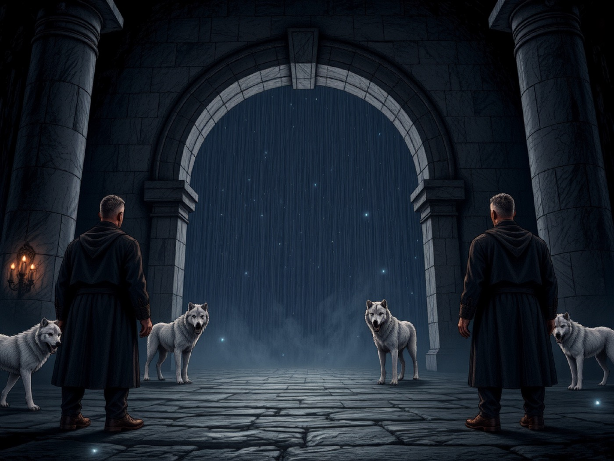
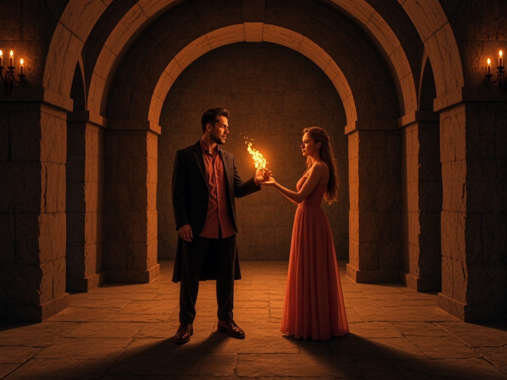

Lichtkrieger · 28 Kapitel · Lesefassung (FSK-frei)

Geschrieben vom Rudel – Lilli, Maya, Piri und Filli – mit Piero. Das Hörbuch zu Band II steht als CD im Hörbuch-Fach der Bücherwand.
Das Tor aus der Höhle blieb nicht freundlich.
Es hatte sich geöffnet, als Lillis und Mayas Hände denselben Stein berührten. Ein Funke. Zwei Wölfe im Licht. Dann zog die Öffnung sie weiter, als hätte sie gewartet, länger als ein Leben.
Kein Elyria. Keine Regenbogenbrücken. Kein Kristall am Horizont.
Nur Dunkel, das nicht leer war — und Sterne, so weit, dass ihr Licht zu spät kam.
Lilli. Das Schwert lag schon in der Faust, bevor der Boden unter ihr fest wurde. Keltische Knoten. Der Ton, den die Klinge in der Luft machte, war hier falsch: zu dünn, wie ein Ruf, der niemand erreicht.
Arkon stand an ihrer Hüfte, weiss wie ihr Haar, die Nackenhaare hoch. Er knurrte nicht den Raum an. Er knurrte etwas, das in der Luft hing.
«Haltet euch», sagte Lilli. Kein Goldton. Wächterin. «Was müssen wir tun — zuerst sehen. Dann schneiden, wenn es uns frisst.»
Vor ihnen, zwischen zwei Sternen die nicht zueinander gehörten, hing ein Riss.
Kein sauberes Tor. Ein Store, der sich nicht schloss. An seinen Rändern lief Licht herunter wie Wasser, das nicht nass werden wollte. Es fiel, verging, fiel wieder.
Der Store weinte.
Maya. Sie lachte nicht. Das allein hätte Lilli warnen müssen.
Maya trat einen Schritt näher, Arkas schlich links von ihr, kupferbraun, zu klug für Panik. Mayas grüne Augen zählten, während der Rest des Rudels noch den Atem suchte.
«Drei», flüsterte sie. «Pause. Drei. Pause.»
Die Tränen fielen nicht zufällig. Sie schlugen gegen nichts und machten trotzdem einen Takt, den man im Zahn spürte.
«Das ist kein kaputtes Tor», sagte Maya leise. «Das zählt. Jemand hat ihm das Zählen beigebracht — oder es hat sich selbst beigebracht, weil niemand mehr antwortet.»
Sie biss sich auf die Lippe, ungeduldig gegen das eigene Nichtwissen. «Vier Fragmente kennen wir. Der Store tut so, als wären es fünf. Das ist der Faden. Den lösen wir nicht heute. Aber merkt euch den Schlag. Wenn er aussetzt, lügt etwas.»
Lilli hörte sie. Steckte den Satz weg, wo Befehle wohnen. Der Rätsel-Unterstrom durfte leben. Er durfte nicht lauter sein als das, was Filli schon im Gesicht trug.
Piri. Der Zeitstein an seiner Brust war kalt.
Nicht die gute Kälte von Schatten, durch die er schlüpfen konnte. Eine Kälte, die das Feuer in seiner Handfläche klein machte, ohne es zu löschen. Ember, der Falke, sass steif auf seinem Arm, die Federn zu nah am Körper.
Piri hasste Türen, die weinten. Türen sollten gehorchen oder brennen.
«Ich kann ihn zwingen», sagte er. Die Narbe am Hals zog sich zusammen, als spräche noch der Gladius. «Ein Schnitt aus Feuer. Zu. Fertig.»
Filli stand so nah, dass er ihr Zittern durch den Ärmel spürte, bevor er ihr Gesicht sah. Piris Finger suchten ihre, fanden sie, hielten nicht fest wie ein Besitz. Nur Anker.
«Wenn du ihn zwingst», sagte Filli fast ohne Stimme, «hörst du nicht, warum er nicht zu ist.»
Piri schluckte Flamme. Liess sie auf der Hand, klein, eine Münze aus Licht. «Ich hätte ihn zerstört», murmelte er in die Stille, noch bevor sie eintraten. Nur für sie.
Filli. Sie hatte den Traum schon drei Nächte.
Kein Bild zuerst. Ein Ton. Ein Kind, das nicht schrie — das die Stille so laut machte, dass die Wälder ihrer Kindheit darin verschwanden. Silja, klein und schwarz, gelbe Augen, sah durch den Store hindurch, als gäbe es zwei Wahrheiten übereinander: hier die vier, dort etwas, das weinte, weil es allein gelassen worden war.
Filli legte die Stirn nicht an den Riss. Sie legte die Aufmerksamkeit hin, wie man eine Hand auf eine Wunde legt, ohne zu drücken.
«Es ist verletzt», sagte sie. «Kein Feind. Ein Echo. Ein Fragment, das nicht weiss, dass es aufhören darf.»
Lilli drehte den Kopf. Platinzöpfe, grüne Augen, Klinge noch oben. Zwischen ihnen lag die alte Spannung, die Filli für sich behielt: die Kriegerin, das Gegenteil ihrer Sanftheit. Heute war das nicht der Auftrag.
«Wenn es uns zieht», sagte Lilli, «schneide ich. Wenn du sagst, es ist ein Kind — dann stehe ich. Aber ich stehe mit gezücktem Eisen. Das ist mein Segen für diese Nacht: ich kämpfe nicht zuerst. Ich passe auf, während ihr hört.»
Maya kam an Lillis unbewaffnete Schulter, nicht an die Klinge. Ein Fingerbreit Abstand. Wärme, die nichts forderte. «Dann gehen wir. Langsam. Wer das Zählen durcheinanderbringt, bin ich.»
Der Store öffnete sich einen Spalt weiter, als hätte er die Stimmen gehört. Im Spalt war keine Landschaft. Nur eine Abwesenheit in Form einer kleinen Hand, die nach nichts griff.
Arkon trat vor. Arkas. Silja, kaum zu sehen. Ember hob die Flügel und blieb.
Lilli atmete einmal, wie vor Corinth, als Gold noch galt.
«Rudel», sagte sie. «Wir gehen rein. Wir kommen raus. Filli führt das Hören. Piri das Feuer klein. Maya den Takt. Ich die Schwelle.»
Sie setzten den ersten Schritt in die Tränen.
Das Licht an den Stiefeln war kalt.
Hinter ihnen blieb die Höhle von 146, der Funke, der erste Stein. Vor ihnen: die Stille zwischen den Sternen, und etwas, das weinte, weil Heilung schwerer ist als ein Schwert.

Innen war der Store kein Raum.
Er war eine Erinnerung, die jemand verloren hatte und die trotzdem weiteratmete. Wände aus Dämmer, die nachgaben, wenn man sie ansah. Unter den Sohlen etwas Weiches, das kein Boden sein wollte.
Filli ging zuerst, weil Hören vorne sein muss, wenn Klingen hinten warten. Piri eine halbe Schulter hinter ihr. Ember stumm. Silja huschte an ihrer Wade entlang, sah beides: das Rudel, und das, was das Rudel noch nicht war.
Filli. Das Echo sass in der Mitte, wo in einem Tempel der Kristall wäre.
Kein Alter, das man zählen durfte. Eine Gestalt aus Licht, das zu oft gewaschen worden war. Ein Kind, wenn Kind bedeutet: zu klein für den Verlust, den es trug.
Es weinte nicht mit Tränen. Es weinte mit Stille. Die Stille drückte gegen Fillis Zähne, gegen die alte Schuld, Mutter in den Armen, Pest, Hände die nicht alle retten.
«Ich kenne dich», sagte Filli, und meinte nicht den Namen. «Ich lasse dich ein. Nicht in uns. In ein Nest. Du musst nicht Grab sein.»
Das Echo hob das Gesicht. Keine Augen die man malen konnte. Eine Frage.
Piri. Die Flamme kam schneller als der Gedanke.
Verlust schickt keine Warnung. Das hatte er mit zwölf gelernt, Vater tot, Mutter weg, Wald. Feuer war die Form, die seine Liebe kannte, wenn Angst keinen anderen Weg fand.
Die Handfläche hell. Zu hell für ein Kind aus Licht.
«Es reisst Zeit», sagte Piri heiser. «Schatten reissen Stränge. Wenn das Ding ein Loch ist, stopfe ich es mit Brand.»
Fillis Finger fanden sein Gelenk. Nicht hart. Unverrückbar.
«Warte. Hör es erst.»
Er hätte ziehen können. Er war stärker in der Glut. Er zog nicht. Die Flamme schrumpfte, bis sie zwischen ihnen klein genug war, um ein Nest zu wärmen, nicht ein Ende zu machen.
«Ich hätte es zerstört», sagte er.
«Ich weiß», sagte Filli. «Deshalb bist du hier.»
Das war kein Tadel. Das war die Art, wie sie ihn einliess: mit dem Feuer, das lernen musste, klein zu sein.
Maya. Sie ging nicht in die Mitte. Sie ging um sie herum, wie um ein Schloss, dessen Zähne man zählen muss, bevor man den Schlüssel nennt.
Drei Schläge. Pause. Drei.
Innen war der Takt näher. Maya hörte darunter ein fünftes Wollen, noch ohne Schlag.
«Es ist kein Tor, das weint», sagte sie, und diesmal war ein Rest Lachen in der Stimme, dünn, mutig. «Es ist ein Fragment, das glaubt, es müsse die Chronik ersetzen. Jemand hat der Großen Chronik ein Stück gestohlen. Das Stück hat das Weinen gelernt, weil die Hüterin nicht mehr antwortet.»
Sie kniete, nicht zu nah. Sommersprossen wie Sternenstaub im falschen Licht. «Vier kennen wir. Lilli, Filli, ich, Piri. Der Store zählt fünf. Entweder lügt er — oder die Schatten haben uns ein Fragment voraus.»
Lilli am Rand, Klinge gesenkt, nicht weggesteckt: «Das bleibt Unterstrom. Heute nesten wir. Morgen rätseln wir, ohne das Kind zu sezieren.»
Maya nickte. Ungeduld fraß an ihr und durfte nicht gewinnen. Sie warf Lilli einen Blick zu, warm, direkt, ungefiltert — ich bin da, auch wenn ich nicht schneide — und kehrte zum Zählen zurück.
Lilli. Sie hasste, nicht zu tun.
Nicht tun war auch tun. Das lernte sie hier, unter Sternen die zu spät kamen. Arkon setzte sich zwischen sie und das Echo, ein lebendiger Schild, ohne Angriff.
«Filli», sagte Lilli. Die Stimme war Eisen, das sich entschieden hatte, nicht zuzuschlagen. «Wenn ihr ein Nest baut, ist das der Auftrag. Meine Klinge bleibt an der Schwelle. Wenn Schatten kommen, bin ich zuerst. Wenn das Echo euch zieht, rufe ich euch beim Namen. Lilli. Filli. Maya. Piri. Keine anderen.»
Ein Segen, so hart wie sie ihn geben konnte.
Filli neigte den Kopf. In ihr blieb das andere, Unausgesprochene, wo es hingehörte: nicht in diese Mission.
Zusammen — Fillis Hände, Piris kleine Flamme, Mayas Takt, Lillis Wache — legten sie Licht in einen Kreis. Kein Grabstein. Ein Nest: Wärme, Rhythmus, die Erlaubnis aufzuhören zu müssen.
Das Echo lehnte sich hinein, vorsichtig, wie ein Reh, das schon einmal eine gute Hand gekannt hatte.
Es wurde nicht heil.
Ein Teil der Kälte wechselte den Wirt. Filli zuckte in den Fingern. Die Spitzen wurden taub, als hätte der Silberwald im Frühling noch zu viel Schnee. Der Preis stand im Raum, ohne seinen vollen Namen.
«Ich trage ein Stück», sagte Filli ruhig. «Sonst hat das Nest kein Gewicht.»
Piri wollte die Kälte zurückbrennen. Filli schüttelte den Kopf. Seine freie Hand blieb an ihrem Rücken, fest, anständig, da.
Draussen, oder innen, oder in der Richtung, die Maya später Schattenwelt nennen würde, setzte der Takt aus.
Drei. Pause.
Dann ein fünfter Schlag. Dumpf. Hungrig. Nicht vom Echo.
Maya richtete sich auf, das Lachen weg. «Da. Der Fünfte grüsst. Er kommt nicht aus dem Kind.»
Lilli hob das Schwert. Der Ton der Klinge war wieder der richtige: kurz, klar, bereit.
«Nacht eins endet nicht mit Sieg», sagte sie. «Sie endet mit einem Nest, das hält, und einem Schlag, den wir noch nicht kennen. Raus. Filli in der Mitte. Piri am Feuer. Maya zählt weiter. Ich gehe zuletzt.»
Sie gingen rückwärts, damit das Nest sie sah.
Das Echo weinte leiser.
Die Stille zwischen den Sternen hatte aufgehört, ganz leer zu sein.
Die Stille hatte sich verändert. Sie war nicht mehr leer, sondern gespannt wie ein Sehnenbogen, der kurz vor dem Loslassen steht.
Maya saß auf einem Stein, der kalt genug war, um die Haut zu beißen, und schaute nicht auf die Sterne, sondern in den Raum davor, wo die Luft noch immer leicht vibrierte von dem, was sie gerade verlassen hatten. Ihr Lachen war weggepackt, tief in der Tasche des Verstandes, wo es sicher lag, bis es gebraucht wurde. Heute brauchte man es nicht. Heute brauchte man Ohren.
«Drei», sagte sie leise. Sie wartete. Die Dunkelheit atmete ein. «Pause.» Sie wartete wieder. Das Warten war die härteste Disziplin. Mehr als das Heben eines Schwerts, mehr als das Knacken eines Schlosses. «Drei.»
Ein fünfter Schlag folgte nicht sofort. Es gab eine Lücke, eine unheimliche Weite, in der sich etwas formte wie Druckwasser hinter einem Damm.
Maya richtete sich auf, ihre kupferroten Locken fielen ihr ins Gesicht, aber sie schob sie zur Seite. Ihre smaragdgrünen Augen funkelten im schwachen Restlicht des Nestes, das Filli und Piri hinterlassen hatten. Es war noch da, ein blasses Leuchten in der Mitte der Dunkelheit, zart wie Seide, brüchig wie Glas.
«Es zählt weiter», sagte Maya. Ihre Stimme war ruhig, aber die Dringlichkeit darin war spürbar, wie die Vibration einer Saite, die gerade gestrichen wurde. «Der Store hat aufgehört zu weinen, weil wir ihm ein Nest gebaut haben. Aber das Zählen ist kein Gebet mehr. Es ist eine Warnung.»
Sie stand auf und trat näher an den Rand der Leuchtwärme. Der Boden hier war fest, aber die Luft roch nach Ozon und altem Staub — nach Dingen, die vergaßen, existiert zu haben.
«Der Store hat fünf gezählt», fuhr sie fort, ihre Finger zogen imaginäre Linien in die Luft, als würde sie eine Maschine zerlegen, um ihr Herz zu sehen. «Wir kennen vier Fragmente. Lilli, Filli, Piri und mich. Das ist die Mathematik der Realität, so wie wir sie verstehen. Aber wenn der Store einen fünften Wert hat, dann fehlt uns ein Stück des Puzzles. Und wenn das Nest hält, während er zählt, bedeutet das: Der Fünfte ist kein Fehler. Er ist da. Nur sehen wir ihn nicht.»
Lilli stand am Rand der Gruppe, ihr Schwert noch in der Hand, aber die Klinge war gesenkt. Sie hörte zu. Ihre grünen Augen scannten den Horizont der Sterne, suchten nach Bewegung, nach Gefahr, nach dem Gesicht des Feindes. Aber es gab keinen Feind im herkömmlichen Sinne. Es gab nur eine Richtung.
«Ein Riss», murmelte Lilli. «Ist das möglich? Ein Riss, der sich selbst zählt?»
«Nicht ein Riss», korrigierte Maya sanft. Sie drehte sich zu ihr um, und für einen Moment war die Distanz zwischen ihnen weg. Das war ihre Art, Nähe zu zeigen — nicht durch Berührung, sondern durch Präsenz. «Ein Echo. Etwas, das den Takt übernommen hat, ohne die Melodie zu kennen.»
Piri. Die Kälte in Piris Brust war kein Scherz mehr. Der Zeitstein hing schwer an seiner Haut, ein kalter Gegenpol zu dem Feuer, das er sonst immer trug.
Piri starrte auf die Dunkelheit jenseits des Nestes. Seine Hände waren offen, Handflächen nach oben. Das war neu. Früher hätte er eine Flamme gezündet, nur um zu sehen, was in den Schatten lag. Feuer war sein Werkzeug der Klarheit. Aber heute zögerte er.
«Ich will es verbrennen», sagte Piri leise. Die Worte klangen hart, fast schmerzlich in dieser sanften Stille. «Wenn es zählt, ohne uns zu sehen, ist es ein Feind. Wenn es einen fünften Schlag hat, der nicht zu uns passt, muss ich ihn löschen.»
Er sah zu Filli hinüber. Sie kniete neben dem Nest, ihre Hände lagen flach auf dem leuchtenden Boden, als würde sie die Temperatur messen. Seine Kehle tat weh von den vielen unverbrannten Worten.
«Wenn du es verbrennst», sagte er, «was bleibt dann von der Zeit übrig? Wenn das Echo stirbt, stirbt vielleicht auch der Takt. Und wenn der Takt stirbt, sterben wir alle in einem Moment, der nie zu Ende geht.»
Er schluckte schwer. Aus dem Echo kam ein leiser, warnender Laut, der wie ein brechender Ast klang. Piri schloss die Augen für eine Sekunde. Das Feuer in ihm war wütend, ja. Aber es war auch klug genug, zu wissen, dass nicht alles, was dunkel ist, böse ist. Manchmal war es nur unerkannt.
«Ich muss warten», murmelte er, fast zu sich selbst. «Aber das Warten fühlt sich an wie Verrat.»
Filli. Die Kälte in ihren Händen war gewachsen. Sie hatte sie nicht weggesteckt. Sie ließ sie offen ruhen, die Finger leicht gekrümmt, als würden sie unsichtbare Fäden halten. Der Silberwald ihrer Kindheit lag jetzt in jedem Nervendingel ihrer Hände. Es tat nicht weh. Es war nur da. Eine permanente Abwesenheit von Wärme.
Sie konzentrierte sich auf das Nest. Es pulsierte schwach, ein Herzschlag aus Licht und Stille. Das Echo darin war ruhig geworden. Es schlief vielleicht. Oder es wartete.
Filli spürte die Berührung von Piris Hand auf ihrem Rücken, kurz, fest, haltend. Sie brauchte keine Worte von ihm. Sie brauchte nur das Wissen, dass er da war, mit seiner Angst vor der Dunkelheit, und trotzdem nicht losließ.
«Das Nest hält», sagte Filli leise, ohne den Blick von dem Licht zu wenden. «Aber es ist dünn. Zu dünn für einen fünften Schlag.»
Sie richtete sich auf, die Kälte in ihren Händen spürbar als schweres Metall. «Wir können nicht einfach hier sitzen und zählen. Wir müssen das Nest stärken. Es muss stärker sein als die Dunkelheit da draußen. Wenn der Fünfte kommt, darf er das Nest nicht zermalmen. Es muss ein Schild sein, kein Grab.»
Sie sah zu Piri hinüber. Seine Wut war noch da, aber sie hatte sich in eine gespannte Aufmerksamkeit verwandelt. Das war gut. Besser als blindes Feuer.
«Lass uns die Wände dichter machen», sagte Filli. «Mit Geduld. Mit Erinnerung. Nicht mit Kraft.»
Maya. Sie grinste plötzlich, ein schnelles, wildes Aufblitzen in ihrem Gesicht, das die Anspannung durchbrach wie Sonnenlicht durch Wolken. Es war kein Lachen von Leichtigkeit. Es war das Lachen derjenige, die ein Rätsel gelöst hatte, das sie gerade erst begriffen hatte.
«Ihr habt recht», sagte Maya. «Wir kämpfen nicht. Wir reparieren.»
Sie trat in die Mitte der Gruppe, ihr Blick wanderte von Lillis Schwert zu Fillis kalten Händen zu Piris gespannten Schultern.
«Der fünfte Schlag ist keine Bedrohung im klassischen Sinne», erklärte sie, ihre Stimme wurde technischer, mechanisch, als würde sie ein Getriebe beschreiben. «Er ist ein Signal. Der Store zählt nicht aus Angst. Er zählt, um zu synchronisieren. Aber wir sind noch nicht bereit für den Takt des Fünften.»
Sie zeigte auf das Nest. «Wir müssen es isolieren. Ein Filter bauen. Etwas, das den Lärm der Schattenwelt herausfiltert, aber das Echo am Leben lässt. Wie ein Käfig aus Licht, der nur die richtige Frequenz durchlässt.»
Lilli nickte langsam. Sie verstand. Nicht die Magie dahinter, sondern die Logik. «Ein Filter. Wir bauen einen Filter.»
«Und während wir bauen», sagte Maya und sah in die tiefe Dunkelheit, «hören wir zu. Nicht auf das Zählen. Auf die Pause zwischen den Schlägen. Dort liegt die Antwort.»
Die Dunkelheit draußen schien sich zusammenzuziehen. Es gab keinen neuen Schlag. Aber die Luft wurde dichter. Schwerer. Als würde die Welt selbst anhalten, um zuzusehen.
Maya hob ihre Hand, palmierend gegen das Nichts. «Es ist da», flüsterte sie. «Das Echo antwortet nicht mit einem Wort. Es antwortet mit der Stille danach.»
Lilli. Sie zog das Schwert nicht. Stattdessen senkte sie es langsam in den Boden, die Spitze berührte den kalten Stein der Zwischenwelt.
«Dann bauen wir», sagte Lilli. Ihre Stimme war fest, ein Anker in der wogenden Stille. «Filli führt das Nest. Piri, deine Flamme klein halten, aber warm. Maya, du gibst uns die Struktur. Ich halte die Schwelle.»
Sie sah zu den anderen drei. In ihren Augen lag keine Furcht vor dem Fünften. Sie lag in der Entschlossenheit, die Gruppe zusammenzuhalten, solange das Licht noch schwach war.
«Lasst uns sehen», sagte Lilli, «ob wir stärker sind als die Stille.»
Maya nickte und begann mit den Händen zu arbeiten. Ihre Finger zogen Kreise in die Luft, Muster des Verstandes, die sich in Licht verwandelten.
Und dann, aus der Schattenwelt, dort wo Maya den Riss vermutete, geschah es nicht mit einem Schlag. Es geschah mit einem Lachen. Leise. Verzerrt. Und versetzt um eine halbe Sekunde zu spät.
Das Feuer in meiner Handfläche war zu laut.
Es flackerte nicht mit der Wärme, die ich geben wollte. Es zuckte wie ein Herz, das Angst hat, stehen zu bleiben. Ich hielt es klein, genau so, wie Filli es verlangt hatte. Ein Funke, kein Brand. Eine Münze aus Licht, die ich in die offene Hand drückte, um sie nicht zu verbrennen.
Draussen, im Nichts zwischen den Sternen, war die Stille anders geworden. Sie war nicht mehr leer. Sie wartete.
Filli. Sie stand vor dem Nest, das wir aus Licht und Willen gewebt hatten. Das Echo lag darin, eine kleine Kurve aus Dämmerung, die langsam aufhörte zu weinen. Es schlief jetzt. Oder es lauschte nur.
Aber ihre Hände…
Ich sah sie nicht direkt an. Wenn ich in ihre Augen blickte, fühlte ich die Kälte, die sie trug, als wäre es mein eigener Halsbrand. Stattdessen sah ich auf ihre Finger. Sie waren blass im Schein meiner Flamme, mit feinem Frost an den Kuppen. Die Kälte, die sie vom Echo aufgenommen hatte, kroch in ihr Mark. Es war keine schmerzende Kälte. Es war eine leere Kälte. Eine Stille, die alles frisst, was warm ist.
Sie atmete flach. Jeder Atemzug ein Kampf gegen die Erstarrung.
«Es wächst», sagte sie leise. Ihre Stimme war nicht erschrocken. Sie klang nur müde. «Nicht in der Wunde. In mir.»
Ich wollte sagen: Brenn es weg. Das war das Erste, was kam. Die alte Reaktion. Der Funke, der alles rettet, was brennt, und alles vernichtet, was friert.
Aber ich schwieg. Ich hatte gelernt, dass Feuer manchmal zu viel ist. Dass Liebe nicht immer Flammen braucht, um zu schützen. Manchmal war sie nur die Hand, die festhielt, während die Kälte kam.
Maya. Sie saß auf einem Stein, der keinen Namen hatte, und zählte mit den Fingern ab. Ihre Augen waren weit offen, grün wie das Meer vor dem Sturm, aber scharf wie Glas.
«Der Store zählt fünf», sagte sie. Nicht als Frage. Als Tatsache, die schwerer war als Eisen. «Wir haben vier Fragmente. Vier Namen. Lilli. Filli. Maya. Piri.»
Sie hielt inne und zeigte auf das Nest. «Das Echo ist das erste. Der Zeitstein bei Piri ist das zweite — oder das dritte? Die Chronik lügt. Oder die Schatten.»
Maya stand auf, ging zu mir, ignorierte Fillis eisige Hände, um direkt in meine Augen zu sehen. Ihre Nähe roch nach Staub und altem Pergament. «Du willst ihn schließen», sagte sie. Es war keine Frage. Sie kannte mich besser, als ich es selbst wusste. «Du siehst den Riss im Store und denkst an ein Loch, das man stopfen muss. Aber wenn du Feuer in das Nest schickst, bevor wir wissen, was der fünfte Schlag ist, tötest du das Echo. Und ohne das Echo weiß keiner, wo die Lüge sitzt.»
Ich nickte knapp. Die Flamme auf meiner Handfläche erlosch für einen Moment, nur um neu zu entfachen, kleiner diesmal. «Du hast recht», sagte ich. «Ich habe Angst, dass es einfriert. Dass Filli einfriert.»
Mayas Blick weichte kurz auf. Sie sah zur Seite, wo Lilli stand, die Schwertklinge in einer Hand, das andere Bein leicht vorgestellt. «Lilli gibt den Takt», sagte Maya leise. «Sie kämpft nicht. Sie hält die Tür auf. Du musst der Anker sein, Piri. Nicht das Schwert. Das Feuer.»
Lilli. Sie bewegte sich nicht. Lilli stand wie ein Fels im Gezeitenstrom.
«Hört», sagte sie. Ihre Stimme war nicht laut. Sie musste nicht laut sein. Sie trug das Gewicht von tausend Schlachten, die noch gekommen waren.
Sie zeigte mit dem Kinn auf den Store. «Das Nest hält. Für jetzt. Aber es ist kein Schutzschild. Es ist ein Bett. Und wir schlafen nicht.»
Lilli trat einen Schritt näher an den Rand des Lichtkreises, wo die Dämmerung der Zwischenwelt anfing. Ihr Schwert hing tief, aber ihre Haltung war angespannt wie eine Bogenseite.
«Der fünfte Schlag», sagte sie. «Er kam nicht vom Echo. Das wissen wir jetzt. Maya hat es gezählt. Die Schatten antworten.»
Sie wandte den Kopf zu mir. Ihre grünen Augen waren kalt, aber darin lag ein Funke, der nur für mich brannte — oder für das Rudel. Vielleicht war das dasselbe. «Wir kämpfen nicht gegen das Echo. Wir kämpfen gegen die Richtung, aus der der Schlag kam. Wer da antwortet, muss einen Namen haben. Bis wir ihn kennen, sind wir blind.»
Lilli atmete ein. Die Stille zwischen den Sternen hielt den Atem an. «Piri. Dein Feuer ist klein. Gut. Behalte es so. Es ist unser Herzschlag. Wenn der Schlag kommt, wirst du nicht angreifen. Du wirst leuchten. Damit wir sehen, was auf uns zukommt.»
Piri. Ich schloss die Augen für einen Atemzug. Nicht aus Traurigkeit. Aus Konzentration.
Der Zeitstein an meiner Brust vibrierte. Kalt. Wie Eiswasser, das durch die Adern läuft. Aber unter der Kälte fühlte ich es: das Zittern des Steins. Er wusste es auch. Etwas kam. Etwas, das den Takt kannte, aber ihn versetzte.
Ich öffnete die Augen und blickte auf Filli. Sie hatte sich umgedreht, ihr Gesicht zur Wand aus Dämmerung gekehrt. Ihre Schultern waren steif. Die Kälte kroch in ihren Armen hoch, bis zu den Ellbogen. Sie zitterte nicht. Sie ertrug es.
«Filli», flüsterte ich. Nur für sie.
Sie hörte mich trotzdem. Sie drehte sich um, langsam, als würde jede Bewegung gegen Widerstand gehen. Ihre braunen Augen waren matt geworden, wie Honig, der in der Kälte stockt. Aber darin lag noch immer das Licht, das mich gefunden hatte, als ich am Boden lag.
«Ich halte es aus», sagte sie. Ihr Mund war trocken. «Aber wenn der Schlag kommt… Piri, versprich mir…»
«Ich weiß», unterbrach ich sie sanft. Ich streckte die Hand aus. Nicht um ihre Kälte zu vertreiben. Um sie zu halten. Meine Finger waren warm. Das Feuer in meiner anderen Hand war nur noch ein Glühen, das keine Hitze abgab, sondern nur Licht. «Ich bin da. Du bist nicht allein im Eis.»
Sie nickte. Ein winziges Nicken. Aber es reichte.
Dann geschah es.
Maya. Der Takt setzte aus.
Drei. Pause. Drei.
Stille.
Dann: Bum.
Nicht laut. Nicht donnernd. Sondern tief. In den Knochen. In den Zähnen. Ein Schlag, der nicht von außen kam, sondern von unten, aus dem Grund der Stille, wo die Schatten wuchsen.
Der Store zuckte. Die Tränen an seinen Rändern stockten für einen Moment, dann strömten sie schneller. Aber es waren keine Tränen mehr. Es war Dunkelheit, die durchsickerte.
Maya riss den Kopf hoch. «Versetzt!» schrie sie, aber die Worte kamen zu spät. Der Takt war falsch. Falsch um eins. Falsch um zwei. Jemand anders zählte. Oder jemand anderes hatte die Zeit gestohlen.
Der Schatten antwortete nicht mit einem Wort. Er antwortete mit einem Echo des Echos. Ein Spiegelbild, das lachte, ohne Mund. Und es kam aus der Richtung, wo keine Sterne waren. Aus dem Nichts.
Lilli hob das Schwert. Der Stahl sang einen Ton, der schärfer war als jede Klinge. «Position!» brüllte sie.
Ich blickte auf Filli. Ihre Hände waren jetzt vollständig weiß vor Kälte. Sie stand zwischen dem Nest und der Dunkelheit, die kam. Sie war der Damm. Und sie brach.
«Piri», sagte sie. Ihre Stimme war eisig klar. «Das Nest… es reißt.»
Ich spürte es auch. Die Hitze in meiner Handfläche wurde unerträglich. Nicht weil ich wollte, sondern weil die Stille versuchte, das Licht zu ersticken.
Ich ballte die Faust. Das Feuer starb nicht. Es wurde kompakt. Dicht. Wie ein Stern im Kleinen.
«Lilli», rief ich. «Wir brauchen einen Namen. Jetzt.»
Die Dunkelheit drückte näher. Der fünfte Schlag kam nicht allein. Er hatte Begleitung.
Und er kannte unseren Takt besser als wir.
Der Stein in meiner Brust pulsierte nicht mehr. Er war starr, ein Eisbrocken, der gegen mein Herz schlug und jeden warmen Impuls erstickte, den das Feuer hätte liefern können.
Ich stand vor dem Tor. Nicht dem aus Stein oder Holz, das man mit einer Klinge zerschlagen könnte, sondern dem aus reiner Zeit. Es war eine Wunde in der Luft, ein Riss, durch den die Sterne hindurchschienen, aber falsch. Die Konstellationen waren verzerrt, als würde jemand am Himmel ziehen, um sie zu verdrehen. Der Zeitstore weinte immer noch, aber seine Tränen waren jetzt gefroren. Sie hingen wie Kristallzähne an den Rändern des Abgrunds und klirrten im Wind der Schattenwelt.
„Es ist versiegelt“, sagte Lilli. Ihre Stimme war hart, aber ihre Hand ruhte auf dem Griff ihres Schwerts, die Knöchel weiß vor Anspannung. Sie schaute nicht auf das Tor, sondern auf den Raum davor, wo die Realität dünner wurde wie Seide. „Der Riss zieht sich zusammen. Er will uns verschlingen, bevor wir ihn öffnen können.“
Ich spürte die Kälte, die von Filli ausging, auch in meinen eigenen Knochen. Sie stand hinter mir, ihre Präsenz war schwerer geworden. Die Kälte, die sie getragen hatte, um das Nest am Leben zu erhalten, kroch nun durch den Boden und mischte sich mit dem Eis des Stores. Wir waren zwei Anker in einem Strom, der uns nach unten zog.
„Das Feuer“, flüsterte Filli. Ihre Lippen bewegten sich kaum. „Piri, gib ihm Wärme. Nicht viel. Nur genug, um es zu schmelzen.“
Ich nickte. Meine rechte Hand hob sich langsam. Das Feuer war nicht mehr die wilde Flamme des zwölfjährigen Jungen, der vor den Römern floh. Es war ruhig. Tief. Ein glühender Kern, der keine Luft brauchte, nur Willen. Ich hielt es niedrig, direkt über der Oberfläche des zerbrochenen Steins, der das Tor markierte.
Die Hitze traf das Eis. Es dampfte nicht. Es schwieg. Die Tränen am Rand des Risses begannen zu schmelzen, tropften langsam nach unten und verdampften in der Asche der Zeit. Aber unter dem Eis lag etwas anderes. Dunkelheit. Dickflüssig und hungrig.
„Maya“, rief Lilli. „Die Struktur?“
„Hält“, antwortete Maya von der Seite, wo sie mit den Fingern Muster in die Luft zeichnete. Ihre Augen waren weit aufgerissen, die Pupillen zu schmalen Schlitzen geschrumpft. „Aber es ist ein Gleichgewicht. Wenn Piri das Eis schmilzt, muss die Dunkelheit raus. Wenn wir zu schnell sind, reißt der Riss zu. Wenn wir zu langsam sind, friert das Tor für immer zu.“
Ich atmete ein. Der Rauch des schmelzenden Eises roch nach Ozon und altem Staub. Ich konzentrierte mich auf den Stein in meiner Brust. Er war kalt, aber er wartete. Aktiviere, schien er zu flüstern. Oder lass es sein.
Ich sah zurück zu Filli. Sie nickte mir zu, ein winziges, fast unsichtbares Zeichen. Ihre Hände waren immer noch grau vor Kälte, aber sie hatte sie geöffnet, die Handflächen nach oben gerichtet, als würde sie etwas empfangen, das sie nicht berühren durfte.
„Ich gehe rein“, sagte ich. Meine Stimme klang fremd in der dicken Stille. „Das Tor reagiert auf den Stein. Aber die Dunkelheit… sie braucht einen Namen.“
„Du bist der Name“, sagte Lilli leise. Sie trat an meine Seite, ihr Schwert senkte sich vollständig. In ihren Augen lag keine Furcht mehr vor dem Unbekannten. Nur Vertrauen. Ein kaltes, scharfes Vertrauen wie Stahl. „Wir halten den Riss offen. Du suchst den Schlüssel.“
Ich drehte mich zum Tor zurück. Die Schatten darin bewegten sich. Sie waren nicht zufällig. Sie formten sich zu Gesichtern. Zu Erinnerungen. Ich sah die Flammen von Karthago. Ich sah das Antlitz meines Vaters, wie es im Feuer erlosch. Ich sah Fillis Gesicht, gefroren in Eis.
Nein. Nicht Filli. Meine Filli. Die Kälte war ein Preis, den sie zahlte. Nicht für mich. Für uns.
Ich hob meine Hand mit dem Feuer höher. Die Hitze wurde intensiver, aber ich kontrollierte sie wie einen Atemzug. Ich zog das Feuer nicht aus der Wut. Ich zog es aus der Erinnerung. An die ersten Funken im Wald. An die Wärme von Fillis Hand auf meiner Schulter. An den Moment, als Lilli mir das erste Mal sagte, dass Licht keine Flamme braucht, um zu leuchten.
„Piri!“, rief Maya scharf. „Der Takt! Er beschleunigt!“
Die Schatten im Riss stürmten vorwärts. Sie klirrten gegen die Lichtbarriere, die Lilli und Maya mit ihrer Magie aufrechterhielten. Die Luft vibrierte so stark, dass mir der Magen umdrehte. Das Eis am Tor bröckelte ab. Unter dem schmelzenden Rand war kein Stein. Es war ein Spiegel. Und darin sah ich nicht mein eigenes Gesicht.
Ich sah einen anderen Riss. Einen größeren. Und darin stand jemand. Jemand, der den gleichen Stein trug. Aber dessen Feuer schwarz war.
„Das ist keine Tür“, flüsterte ich. Der Schauer lief mir den Rücken hinab, tiefer als die Kälte von Filli. „Es ist ein Auge.“
„Piri, nicht zögern!“, brüllte Lilli. Ihr Schwert leuchtete auf, ein blinder Streif aus Licht, der die Schatten zurücktrieb. „Öffne es!“
Ich ballte die Hand mit dem Feuer zur Faust. Der Zeitstein in meiner Brust reagierte. Er brannte plötzlich, nicht kalt, sondern brennend heiß. Ich spürte den Riss in mir selbst, das vierte Fragment, das ich trug. Es stimmte mit dem im Tor überein. Sie sangen zusammen. Eine tiefe, schmerzhafte Harmonie.
Ich drückte die Faust gegen das Glas des Spiegels. Nicht um es zu zerschlagen. Um es zu berühren.
„Lilli“, rief ich, ohne den Blick vom Spiegel zu wenden. „Wenn ich gehe… haltet das Nest.“
„Wir halten“, sagte sie. Ihre Stimme war fest wie Fels. „Komm zurück.“
Ich schloss die Augen und ließ das Feuer in den Stein fließen. Der Schmerz war überwältigend. Es war, als würde meine Seele durch eine Nadel gezwungen werden. Dann gab es kein Licht mehr. Keine Kälte. Keine Stille.
Nur einen Schlag. Falsch getaktet. Und dann die Dunkelheit, die mich verschluckte.
Das Schwert in meiner Hand war nicht schwer. Das Eisen war alt, das Gewicht kannte ich seit Jahren, seit der Lawine, die meinen Vater nahm, und seit dem Schwindsucht-Fieber, das meine Mutter holte. Ich lernte, dass Lasten nur dann erdrücken, wenn man vergisst, sie zu heben.
Wir schritten durch den Riss nicht wie Krieger, die eine Festung stürmen. Wir schritten wie Schatten, die in ihr eigenes Spiegelbild treten. Hinter uns das Tor, das sich langsam wieder verhärtete, ein Wundmal in der Luft. Vor uns: die Stille.
Aber es war keine leere Stille mehr. Es war eine wartende Stille.
Ich führte den Weg. Meine Schritte traten auf etwas festes, obwohl ich keinen Boden sah. Nur das sanfte Leuchten von Piri’s kompaktiertem Feuer in seiner Hand warf lange, zuckende Schatten an die Wände der Dunkelheit. Das Licht war nicht hell, es war präzise. Es schnitt die Nacht auf wie ein Skalpell.
»Haltet den Abstand«, sagte ich. Meine Stimme klang rau, fremd in dieser akustischen Leere. Der Stahl meines Vaters sang leise, als ich ihn durch die Luft ziehe, ein hohes, einsames Jaulen. Ich ließ das Schwert sinken, die Klinge parallel zum Boden. Keine Drohung. Eine Barriere.
»Was ist das?« Piri flüsterte. Seine Stimme zitterte nicht, aber er stand näher an Filli als nötig. Er spürte es auch. Die Luft roch nicht nach Staub oder Verwesung. Sie roch nach Ozon und altem Metall. Nach dem Geruch eines Blitzeinschlags, der Jahre zurückliegt.
Maya ging vor mir, ihre Hände bewegten sich in schnellen, unsichtbaren Mustern in der Luft. »Es ist kein Ort«, sagte sie. «Es ist ein Gedächtnis. Die Schattenwelt speichert nicht nur Energie. Sie speichert Momente. Falsche Momente. Verpasste Chancen.»
Sie blieb stehen und drehte sich zu mir um. Ihr Gesicht war blass, die Augen weit aufgerissen. »Lilli. Schau nach unten.«
Ich blickte auf den «Boden». Er war spiegelneglatt. Und darunter, tief unter meiner eigenen Silhouette, bewegten sich andere Formen. Nicht wir. Andere. Dutzende von uns. Tausende.
Ein Krieg, der nie stattfand. Ein Frieden, der zerbrach. Ein Ruf, der nie gehört wurde. Das Echo.
»Das Nest«, sagte ich leise. «Es ist nicht nur ein Schutz. Es ist eine Linse.»
Die Visionen im Spiegelboden wurden schärfer. Ich sah mich selbst, aber anders. Jünger. Verzweifelter. Stehend vor einer Schlachtlinie, die ich hätte wenden können, aber nicht tat. Die Tränen meiner früheren Ich liefen in der Dunkelheit unter mir weiter, obwohl sie längst vertrocknet waren.
»Es zieht uns hinein«, warnte Piri. Sein Feuer flackerte heftig. »Ich kann… ich kann sie rufen hören. Die anderen.«
»Ignoriere sie«, befahl ich scharf. Ich trat vor Piri und blockierte seine Sicht auf den Boden. Meine Rüstung aus Leder und keltischen Knotenmustern schloss mich von der Kälte ab, aber mein Herz klopfte hart gegen die Rippen. Nicht aus Angst. Aus Wut. Auf das Echo. Es wagte, meine Vergangenheit als Köder zu nutzen.
Filli tauchte an meiner Seite auf. Sie hatte ihre Hände immer noch auf Piri’s Schultern gelegt, ihre Finger waren steif und blass, der Frost reichte bis zu ihren Handgelenken. Sie sah nicht auf den Boden. Sie sah mich an. Ihre braunen Augen waren die einzigen wahren Dinge in dieser Welt der Illusionen.
»Lilli«, sagte sie leise. «Es ist kein Angriff. Es ist eine Frage.»
Eine Frage? Ich zog das Schwert kaum merklich höher. »Gibt es Fragen, die mit Blut beantwortet werden müssen?«
»Nur wenn wir die Antwort verweigern«, antwortete Maya von hinten. Ihre Stimme war ruhig, fast klinisch, aber ich hörte den Unterton der Erregung. Der Logikerin, die das Unmögliche löst. »Das Echo versucht, unsere Unsicherheiten zu materialisieren. Es will, dass wir darin stecken bleiben. Dass wir uns mit unseren eigenen Spiegeln anlegen, bis wir vergessen haben, wer wir sind.«
Ich sah auf den Boden hinab. Eine Figur hob den Kopf. Sie hatte meine Züge, aber die Augen waren leer. Weiß. Sie streckte eine Hand aus. »Bleib«, flüsterte die Gestalt. »Hier weht kein Wind. Hier stirbt niemand.»
Die Verlockung war sündhaft süß. Ruhe. Keine Entscheidung mehr. Nur das Sein.
Dann spürte ich die Präsenz von Filli neben mir. Ihre Kälte brannte wie Feuer. Sie war der Anker. Sie war die Realität, die sich weigerte, aufzuhören.
»Nein«, sagte ich zu meiner eigenen Schatten-Gestalt. Meine Stimme donnerte nicht, aber sie trug das Gewicht von Corinth, von den Alpen, von allem, was ich durchgemacht hatte, um hier zu stehen. »Ich bin nicht tot. Ich bin noch nicht fertig.»
Ich hob das Schwert hoch. Das keltische Muster auf der Klinge leuchtete auf, ein warmes, goldenes Licht, das die kalte Blau-Weiß-Tönung des Echos durchbrach. Der Stahl sang. Diesmal war es kein einsames Jaulen mehr. Es war ein Kommando.
»Piri«, sagte ich. »Das Feuer. Nicht gegen uns. Gegen das Muster.»
Piri verstand sofort. Er veränderte die Farbe seines Lichts von rot-orange zu einem reinen, weißen Blau. Er hielt es über den Boden, nicht darauf. Er leuchtete die Struktur der Illusion aus.
»Maya!« rief ich. »Finde die Frequenz der Stabilität! Das Echo hat keinen eigenen Takt, es stiehlt ihn. Gib ihm einen zurück, den wir kontrollieren!»
Maya nickte. Sie begann zu summen. Einen einfachen Ton. Rein. Beständig. Der Takt des Herzschlags. Bum-bum. Bum-bum.
Filli presste ihre eisigen Hände fester auf Piri’s Schultern, aber sie wandte den Kopf zu mir. Ein Lächeln, kaum sichtbar, aber echt. »Du hast es gefunden«, flüsterte sie.
»Ich habe mich entschieden«, korrigierte ich sie und hielt dem leeren Blick meiner Schatten-Ich stand. »Und das Echo ist nur ein Spiegel. Und Spiegel zerbrechen, wenn man zu fest darauf schlägt.»
Ich schwang das Schwert nicht herab. Ich schlug gegen den Boden.
Nicht auf die Oberfläche. Auf die Luft direkt vor der Illusion.
Die Welle aus Kraft und Willen traf den Spiegelboden wie ein Stein in einen Teich. Die Risse erschienen nicht im Glas, sondern in der Realität selbst. Das Echo schrie nicht. Es zerbrach leise, wie Eis unter dem Gewicht eines Frühlingssonnenscheins. Die Gestalten unten lösten sich auf, zu Staub, zu Licht, zu Nichts.
Die Stille kehrte zurück. Aber jetzt war sie leer. Rein. Und wir waren wieder allein in der Dunkelheit des Ganges.
Piri ließ das weiße Licht sinken, sein Gesicht schwitzte vor Anstrengung. Filli atmete schwer, die Kälte in ihren Armen hatte sich etwas zurückgezogen, nur um ein Weniges. Maya massierte ihre Schläfen, als hätte sie einen Kopfschmerz von kosmischen Ausmaßen.
Ich steckte das Schwert ein. Die Klinge verstummte zufrieden.
»Weiter«, sagte ich. Und ging voran, ohne auf die Schatten zu achten, die jetzt nur noch Schatten waren.
Die Narbe sass dort, wo der Store aufgehört hatte, ein Raum zu sein.
Kein Portal aus den Liedern. Eine Linie in der Dämmerung, dünn wie ein Schnitt, der nicht blutet und trotzdem atmet. Hinter ihr das Nest, das in der ersten Nacht begonnen hatte. Das Echo weinte darin, leiser als am Anfang, nicht frei. Vor der Linie lag die Zwischenwelt, und in Fillis Handflächen die Kälte, die der Preis gewesen war.
Die Finger waren steif. Sie spürte den Druck, wenn sie die Flächen aneinanderlegte. Sie konnte sie öffnen. Sie konnte sie senken. Was fehlte, war die Wärme, nicht der nächste Schritt. Die Kälte wohnte in den Flächen wie ein Gast, der die Schwelle kennt und nicht mehr fragt.
Filli. Sie blieb auf eine Armlänge vor der Narbe stehen.
«Es ist ein Mund», sagte sie. «Kein Feind. Es atmet, und es ist hungrig nach dem, was wir nicht hergeben.»
Die Luft roch nach Ozon und nach Stein, der lange im Dunkeln gelegen hat. Kein Wind. Der Atem kam aus der Narbe selbst: ein Zug, eine Pause, wieder ein Zug. Drei Schläge, und die Pause war kürzer als in der Nacht, in der das Nest gelegt worden war.
Sie legte die Flächen nicht sofort auf. Zuerst hörte sie. Das Echo im Nest antwortete auf den Atem der Narbe, einen halben Schlag daneben, als würde jemand im Nebenraum dieselbe Melodie zu spät summen. Heilung hiess hier nicht, das Weinen abzuwürgen. Heilung hiess, den zwei Atemzügen denselben Takt zu geben, ohne einen von beiden zum Schweigen zu bringen.
Maya. Sie stand an der Wand des Gangs, die Augen halb zu, die Hände in den Ärmeln. Sie zählte, weil der Takt sich verschoben hatte und jemand das sagen musste, bevor er zur Falle wurde.
«Die Pause nach dem dritten Schlag ist kürzer», sagte sie. «Der fünfte kommt aus der Richtung hinter der Narbe. Ich löse es nicht. Ich sage nur, wo er fehlt.»
Dann schwieg sie. Der Satz blieb liegen wie ein Stein, den man nicht aufheben muss, um zu wissen, dass er da ist.
Lilli. Die Klinge hing parallel zum Boden. Kein Hochreissen. Eine Linie: bis hier, und nicht weiter, solange die Naht nicht hält.
«Wir gehen nicht hindurch, bevor du sagst, dass der Stein sie trägt», sagte Lilli. Die Stimme rau. Sie sah Filli an und liess den Blick dort. Kein Schritt in den Abstand. Keine Hand.
Filli. «Den Faden», sagte sie. «In Worten. Nicht an mir.»
Maya nickte einmal. Lilli senkte das Kinn.
Filli legte die Flächen auf die Narbe. Nicht die Finger als Haken. Die Flächen, flach. Dann liess sie die Kälte aus den Handflächen in den Schnitt. Kein Kampf. Dasselbe, was sie dem Echo gegeben hatte: etwas Eigenes, damit das Fremde aufhören konnte, ein Grab zu sein.
Der Schnitt schrie nicht laut. Er schluckte.
Die Narbe hörte auf zu zittern. Aus der Linie wurde eine Fläche, glatt und kalt, ein Spiegel. Dahinter keine Fjorde und kein Elyria. Eine Gasse aus Knochensteinen und Sternenasche. Die Schattenwelt, nah genug, dass der fünfte Schlag eine Richtung war und noch keine Gestalt.
Filli hob die Hände ab. Die Finger blieben steif, und sie öffneten sich. Die Kälte sass jetzt im Stein der Naht. Der Spiegel hielt, ohne dass jemand ihn fasste.
«Die Naht sitzt im Stein», sagte sie. «Nicht in meinen Fingern.»
Sie prüfte es, weil sie sich selbst nicht glauben wollte, solange der Preis noch in den Flächen wohnte. Ein Schritt zurück. Die Fläche blieb. Ein Schritt vor. Kein Sog an den Händen. Der Stein trug, was sie ihm gegeben hatte. Ihre Finger hingen offen. Steif. Brauchbar für später. Für jetzt nicht gebraucht.
Lilli. «Dann gehen wir, solange sie hält.»
Piri. Er stand grau von dem Stein, den er getragen hatte. Das Feuer in der einen Hand war klein, so klein, wie es in der ersten Nacht hatte werden müssen, damit aus einem Riss ein Nest werden konnte. Er sah Filli an.
«Danke», sagte er.
Sie nickte. Er trat durch den Spiegel. Lilli folgte, die Klinge noch immer tief. Maya ging als Letzte der drei und warf keinen Satz hinterher, den sie nicht schon gesagt hatte. Auf der anderen Seite nahm die Gasse sie auf. Knochenstein unter den Sohlen. Asche, die sich nicht wie Wind bewegte.
Filli. Sie blieb auf dieser Seite. Die Hände hingen offen an den Seiten.
«Ich bleibe», sagte sie in den Spiegel, laut genug, dass die drei es hören konnten. «Wenn die Naht mich lässt, komme ich nach. Mit den Füssen.»
Das Echo im Nest weinte weiter, leiser, in den Takt der Naht gelegt. Filli hörte zu. Sie hielt nichts fest, weil nichts mehr in den Händen sitzen musste.
Hinter dem Spiegel antwortete etwas mit demselben Takt. Einen Schlag zu spät.
Drei Schritte hinter dem Spiegel war die Gasse noch keine Stadt.
Knochenstein unter den Sohlen, blass, fest, ohne das Nachgeben des Nestes. Sternenasche lag in den Fugen und bewegte sich, obwohl kein Wind ging. Sie drehte sich in einer langsamen Spirale, als würde jemand unsichtbar einen Finger über eine Seite ziehen und die Körner jedes Mal an derselben Stelle fehlen lassen.
Hinter ihnen, in der Fläche, die eben noch eine Narbe gewesen war, stand Filli. Klein durch den Abstand, deutlich genug. Hände offen an den Seiten. Sie war nicht mitgekommen. Sie war nicht verschwunden.
Maya. Sie blieb auf dem dritten Schritt stehen, weil der vierte gelogen hätte.
Der Takt der Naht kam durch den Stein: Zug, Pause, Zug. Drei, und die Pause zu kurz. In der Asche fehlte genau eine Stelle in der Spirale, immer dieselbe, wie ein Wort, das ein Lied auslässt, damit man merkt, dass man es kennt.
«Die Pause ist immer noch kürzer», sagte sie. «Und hier fehlt derselbe Schlag. Ich lege ihn nicht ein. Wenn wir auf den vierten treten, treten wir neben ihn.»
Das war alles. Kein Schloss, das sie aufbrach. Keine Maschine, der sie einen Namen gab, den die Gasse nicht hatte. Sie zeigte nach vorn. Wo die Asche die Spirale abbrach, stand eine Treppe, die beim Hinschauen schon da gewesen war und die es eine Sekunde vorher nicht gegeben hatte. Schmale Stufen. Knochenstein wie der Boden. Kein Geländer.
Lilli. Die Klinge blieb tief. Sie stellte sich so, dass die Treppe in ihrer Linie lag und die Fläche mit Filli nicht aus dem Augenwinkel rutschte.
«Drei Schritte haben wir», sagte sie. «Der vierte gehört der Treppe, oder er gehört niemandem.»
Piri. Das Feuer in seiner Hand war klein geblieben. Es färbte die Asche nicht. Es zeigte nur, dass die Spirale wirklich fehlte und nicht nur so tat.
«Ich brenne das nicht zu», sagte er. «Die Naht hat schon geschluckt, was sie brauchte.»
Er sah zurück. Filli hob eine Hand, nicht zum Greifen. Zum Zeigen, dass sie die Hand noch heben konnte. Dann liess sie sie wieder sinken.
Filli. Ihre Stimme kam durch den Spiegel, dünn und ganz.
«Ich höre euch. Die Naht hält. Geht die Stufen, nicht daneben.»
Maya. Sie nickte Lilli zu. Kein Arm, kein Ziehen. Lilli setzte den Fuss auf die erste Stufe. Piri auf die zweite, neben sie, nicht davor. Maya blieb auf der dritten des Bodens, bis die beiden standen, und nahm dann die unterste Stufe, sodass zwischen ihr und der Naht nur die Gasse lag und nicht ein Rätsel, das sie noch lösen wollte.
Die Asche folgte ihnen nicht die Stufen hinauf. Sie blieb in ihrer Spirale und liess die eine Stelle leer.
Maya hörte das Nest durch die Naht, weit, wie ein Gespräch im nächsten Haus. Das Echo weinte nicht lauter, weil sie näher an der Richtung standen. Es weinte genauer. Jeder verspätete Schlag fand im Weinen eine Stelle, und die Stelle blieb offen. Sie hätte den fehlenden Schlag jetzt nennen können, als Zahl, als Abstand, als den Schritt, den niemand tun sollte. Sie tat es nicht. Eine Zahl laut gesagt wäre schon ein Schlüssel gewesen, und Schlüssel waren in dieser Nacht Fillis Sache gewesen, und Filli hatte den ihren in den Stein gelegt, nicht in Mayas Mund.
Lilli prüfte die Stufe unter ihrem Fuss, ohne die Klinge zu heben. Der Knochenstein gab nicht nach. Piri hielt das Feuer so klein, dass es die leere Stelle in der Asche nicht zudeckte. Niemand sah den anderen lange an. Der Blick hätte aus dem Abstand einen Grund gemacht, stehen zu bleiben. Sie blieben stehen, weil der Takt es verlangte, nicht weil jemand jemanden hielt.
Auf der dritten Stufe — Lilli oben, Piri in der Mitte, Maya unten — kam die Antwort.
Derselbe Takt. Einen Schlag zu spät. Nicht eine Gestalt. Eine Richtung, die die Treppe hinauf weiterging, dorthin, wo die Gasse aufhörte, eine Gasse zu sein, und noch kein Tor zeigte. Das Echo im Nest, weit hinter Filli, weinte in diese Verspätung hinein, leiser, als hätte es den Schlag erkannt und keine Eile, ihn zu fressen.
Lilli. «Hier bleiben wir stehen», sagte sie. «Bis wir wissen, ob der nächste Schlag uns meint oder nur die Treppe.»
Maya. Sie schloss die Augen nicht. Sie zählte die Pause und sagte die Zahl nicht laut. Laut zu sagen hätte geheissen, sie zu lösen.
Hinter ihnen hob Filli noch einmal die offene Hand. Die Naht flackerte nicht. Die Gasse wartete. Der fehlende Schlag auch.
Der Knochenstein unter meinen Sohlen war kalt, aber das war es nicht, was die Luft schwer machte. Es war die Stille. Eine Stille, die nicht leer war, sondern voller Haltbarkeit, als würde die Welt selbst den Atem anhalten, um zuzusehen, ob wir wanken.
Ich war die Stufen wieder hinabgestiegen, bis an den Fuß der Treppe. Hinter mir lag die Naht. Ein flacher Spiegel aus gefrorenem Stein und dem Preis, den Filli bezahlt hatte. Ich sah sie nicht mehr mit den Augen der Kriegerin, die nach Schwachstellen sucht, sondern mit denen einer Frau, die den Wert eines Opfers respektiert. Ihre Gestalt war durch den Spiegel gedämpft, grau im Grau, aber ihre Haltung war klar. Steif. Offen. Keine Hände, die greifen wollten. Nur Finger, die sich öffneten, wenn sie mussten. Sie stand auf der Seite des Nestes, auf der Seite der Wärme, die wir nicht brauchten, um zu überleben, sondern um uns selbst zu erinnern, wer wir waren.
Ich stellte das Schwert des Vaters senkrecht in den Staub der Sternenasche. Das Metall sang leise, ein hohes, fast unhörbares Zittern, das nur ich hörte. Es war kein Warnruf. Es war eine Bestätigung. Die Klinge kannte die Kälte dieser Gasse und sie fürchtete sie nicht. Sie hatte den Atem der Alpen geschnitten, den Staub von Corinth geschluckt und den Schmerz der ersten Nacht getrunken. Dies hier war nur Stein und Asche.
Ich trat einen Schritt zurück. Nicht aus Furcht. Aus Respekt vor dem Abstand. Ein Schritt in die Naht wäre ein Verrat an dem, was Filli getan hatte, um ihn zu öffnen. Ich blieb auf der Kante stehen, wo die Gasse begann und das Nest endete. Mein Blick traf den von Maya, die auf der Treppe stand, und dann auf Piri, dessen kleines Feuer gegen die Dunkelheit ankämpfte, als wäre es eine Kerze in einer Kathedrale aus Eis.
«Die Naht ist stabil», sagte ich. Meine Stimme klang rau im trockenen Mund dieser Welt. «Aber Stabilität trügt. Steine brechen, wenn man sie zu lange ansieht.»
Ich drehte mich um und sah direkt in den Spiegel. Fillis Augen waren braun wie Honig im Mondlicht, auch hier, wo kein Mond war. Sie nickte kaum merklich. Kein Lächeln. Keine Geste der Erleichterung. Nur die Bestätigung, dass die Linie hielt.
«Was liegt dahinter?» fragte Piri. Seine Stimme war leise, als würde er fürchten, das Gleichgewicht zu stören.
Ich deutete mit dem Kinn die Treppe hinauf, dorthin, woher die Antwort gekommen war. Unten am Boden drehte sich die Asche in ihrer Spirale und ließ immer dieselbe Stelle leer. «Die Treppe führt nach oben. Das Echo im Nest weint leiser in die Verspätung hinein, wie vorhin. Wir gehen nicht, bis wir wissen, wer oder was da oben wartet.»
Maya stand auf der untersten Stufe. Ihre Hände steckten tief in den Ärmeln ihres Gewandes, als könnte sie so die Kälte einfangen, bevor sie ihre Knochen erreichte. Sie starrte auf die leere Stelle in der Asche vor der Treppe.
«Es ist kein Loch», sagte sie. «Es ist ein Auge. Das nicht blinzelt.»
Sie hob den Kopf und sah zu mir herüber. Ihr Gesicht war blass, aber ihre Augen brannten mit jener intensiven Klarheit, die man nur sieht, wenn jemand die Wahrheit ausspricht, die niemand hören will.
«Der fünfte Schlag», fuhr sie fort, «kommt nicht von oben. Er kommt von unten. Aus der Richtung, in der wir herkommen. Aber Filli hat ihn nicht weggesperrt. Sie hat ihn nur gestoppt.»
Ich spürte das Gewicht des Schwertes an meiner Seite, ein vertrautes, kaltes Metall. Die Klinge vibrierte jetzt stärker. Nicht vor Angst. Vor Erwartung.
«Das heißt?»
Maya zuckte mit den Schultern, eine schnelle, scharfe Bewegung. «Das heißt, dass wir nicht aufsteigen müssen, um zu sterben. Wir müssen absteigen, um zu verstehen, warum er wartet.»
Ein kalter Wind strich über die Gasse, obwohl keine Luftströmung da war. Er roch nach altem Metall und nach Blut, das schon lange getrocknet war. Die Asche auf den Stufen wirbelte kurz auf, dann fiel sie zurück in ihre Spirale.
Piris Feuer in seiner Hand flackerte violett auf und erlosch für einen Moment, bevor es mit bläulicher Flamme neu entfacht wurde. Er sah Filli an, die noch immer hinter dem Spiegel stand.
«Sie weiß es», sagte Piri leise. «Filli weiß, was kommt.»
Ich trat näher an den Rand der Naht heran, ohne sie zu berühren. Der Abstand war jetzt nur noch ein Fuß breit. Ich konnte die Kälte spüren, die von ihrer Seite ausging, aber ich konnte auch sehen, wie ihre Schultern entspannter waren als vor der Nacht. Sie hatte den Stein getragen. Sie hatte den Preis bezahlt. Jetzt gehörte es ihr, zu entscheiden, ob wir folgen sollten.
Fillis Stimme kam durch den Stein, klar und ohne Zittern.
«Der Schattenwelt-Teil ist hungrig», sagte sie. «Er wartet nicht auf uns. Er wartet darauf, dass wir ihn nennen.»
Sie hob ihre linke Hand. Die Finger waren steif und ohne Wärme, aber sie öffneten sich, langsam, flach, nichts darin. Mit der offenen Hand zeigte sie die Treppe hinauf, dann auf den Boden unter uns.
«Aufsteigen ist ein Irrweg», sagte sie. «Absteigen ist die Frage. Und Fragen haben keine Antworten, nur Folgen.»
Ich nickte. Keine Worte waren nötig. Als Kriegerin wusste ich, dass jede Bewegung eine Waffe war, und jede Pause ein Schild. Wir hatten das Schild jetzt. Der Spiegel hielt. Die Naht saß im Stein. Was übrig blieb, war die Entscheidung, wie wir in die Dunkelheit gingen.
Ich zog das Schwert aus dem Boden. Das Klingensingen wurde lauter, ein scharfer Ton, der die Stille zerschnitt.
«Dann gehen wir ab», sagte ich. «Mit offenen Augen und gezückter Klinge. Und wenn etwas aus der Tiefe kommt, dann wird es lernen, warum ich Lilli heiße.»
Ich sah Maya an. Sie nickte. Ich sah Piri an. Er hielt das Feuer klein und kam die Stufen herab bis zur untersten, neben Maya. Ich trat zu ihnen auf die Treppe, die Klinge tief, das Gesicht nach unten gewandt, zur leeren Stelle in der Asche und zur Dunkelheit, die darunter lauerte. Die Naht hinter uns hielt, ein heller Strich im Grau, eine Erinnerung daran, wo wir waren.
Unter uns lag nur die Gasse aus Knochensteinen und die Kälte, die tiefer ging als jedes Eis der Heimat. Ich atmete ein. Die Luft schmeckte nach Eisen. Ich zog den Atem durch die Nase und ließ ihn langsam wieder aus dem Mund gleiten.
«Wenn der nächste Schlag kommt, folgt mir», flüsterte ich. «Und tretet nicht auf das, was leer aussieht.»
Das Nest war kein Ort mehr. Es war eine Spannung.
Filli stand am Rand der Naht, dort, wo die Zwischenwelt auf den Knochenstein der Gasse traf. Vor ihr lag der Spiegel aus Stein, glatt und kalt, ein Auge, das offen gehalten wurde durch ihre eigene Kälte. Dahinter hörte sie die Atmung der drei. Lillis Atem war flach, kontrolliert wie der Griff eines Schwertes. Piris Atem hatte den Geruch von Asche und etwas anderem, das nach Verbrenntem roch, aber nicht nach Feuer. Mayas Atem zählte. Sie zählte immer noch.
Filli schloss die Augen. Nicht um zu schlafen. Um zu hören, was zwischen den Schlägen lag.
Das Echo im Nest weinte. Es war kein Laut mehr, der durch die Luft ging. Es war ein Druck auf dem Brustkorb, eine Vibration in den Rippen, die genau dann kam, wenn die Pause nach dem dritten Schlag des Tors zu kurz wurde. Das Echo hatte gelernt, sich an den Rhythmus der Naht anzupassen. Es war gefangen in der Verspätung. Jeder verschluckte Schlag im Tor machte sein Weinen leiser, aber genauer. Tränen flossen nicht mehr. Stattdessen formten sich die Tränen zu Klang, und der Klang wurde zu Nadeln, die ins Mark stachen.
Filli legte die Handflächen auf den kalten Stein der Naht. Die Finger waren steif und ohne Wärme. Langsam, aber sie öffneten sich, flach auf dem Stein. Sie griffen nicht. Sie hielten nichts. Sie gaben nur zurück, was sie genommen hatten: die Kälte. Den Riegel trug der Stein.
„Du bist hungrig“, flüsterte sie in den Stein. „Aber ich gebe dir keine Seele. Ich gebe dir einen Spiegel.“
Sie schob die Kälte tiefer in die Risse des Steins. Nicht als Dichtung. Als Fülle. Der Stein hatte leer gewohnt, weil das Tor ihn ausgehöhlt hatte. Jetzt füllte sie den Hohlraum mit dem, was ihr übrig geblieben war. Die Stille zwischen den Sternen brauchte kein Futter mehr. Sie brachte Struktur.
Die Naht zitterte nicht. Sie erstarrte.
Dann geschah es. Der Spiegel wurde undurchsichtig. Grau wie Mondaufgang auf Schnee. Und aus der Grauheit traten Formen, nicht als Bilder, sondern als Abwesenheiten. Schatten, die dort waren, wo kein Licht hingehen durfte.
Filli trat einen Schritt zurück. Ihre Füße knirschten auf dem Kies der Zwischenwelt. Der Abstand zur Naht war wichtig. Zu nah, und sie würde in den Spiegel gezogen werden. Zu fern, und der Stein bekäme ihre Kälte nicht mehr.
Sie sah durch die Grauheit hindurch. Nicht mit den Augen. Mit dem Bauch. Mit dem Ort, an dem ihr Herz schlug, ein schwacher, fieberhafter Rhythmus gegen die steife Stille ihrer Hände. Durch einen dünnen Riss im Grau fand sie Piri. Er sah zu ihr herüber. Ein Blick, mehr nicht. Er reichte.
Draußen in der Gasse war es stiller geworden. Die drei standen auf den Stufen. Sie warteten. Sie wussten, dass sie warten mussten. Aber Warten ist eine Form des Kampfes gegen die Zeit, und die Zeit hier war gebrochen.
Lillis Stimme kam durch den Stein, gedämpft, als würde sie durch Wasser sprechen. „Filli. Die Linie bröckelt.“
Filli öffnete die Augen. Der graue Schleier der Naht begann zu reißen. Nicht gewaltsam. Wie ein Tuch, das alt geworden ist und von selbst zerfällt. Durch die Risse hindurch sah sie Lillis Gesicht. Bleich. Die Augen weit. Kein Zögern darin. Nur die absolute Präsenz einer Kriegerin, die den Horizont beobachtet, nicht den Gegner.
„Ich spüre es“, sagte Filli. Ihre Stimme klang fremd in ihren eigenen Ohren. Dünn. Zerbrechlich. „Es zieht nach unten. Nicht weg von uns. Weg vom Echo.“
Das war das Schreckliche. Das Echo zog zur Gasse hin, dorthin, wo der fünfte Schlag fehlte — aber es blieb im Nest. Der Stein hielt es dort, wo Filli die Kälte hineingelegt hatte: lebend, leiser, nicht frei.
Maya trat auf die Kante der untersten Stufe. Ihre Stimme war ruhig, aber sie trug das Gewicht von Zahlen, die sich auflösten. „Die Pause wird zur Lücke. Wenn wir sie nicht füllen, fällt etwas hinab.“
Piri hielt das kleine Feuer hoch. Die Flamme stand senkrecht nach oben, starr wie ein Nadelspitz. „Es ist keine Luft“, sagte er. „Es ist Vakuum. Und das Vakuum will gefüllt werden.“ Er sah zum Spiegel. „Du hast gesagt, die Naht sitzt im Stein. Und du hast gesagt, es schmerzt.“
„Schmerz ist ein Kompass“, antwortete Filli. „Er zeigt, wo die Wärme fehlt.“
Filli spürte den Schmerz in ihren Händen. Die Kälte saß jetzt in den Knochen. Sie kroch die Arme hinauf, bis zu den Schultern. Der Stein war der Anker; sie gab ihm, was er brauchte. Ohne die Kälte im Stein wäre die Naht offen geworden, und das Echo wäre entwichen, bevor es geheilt werden konnte. Oder bevor es zerstört wurde.
Sie musste sehen. Sie musste wissen, was auf der anderen Seite wartete. Nicht im Spiegel. In der Dunkelheit selbst.
Filli senkte den Kopf. Sie atmete ein, und die Luft roch nach Ozon und nach dem tiefen, kalten Atem des Steins. Dann legte sie beide Handflächen wieder flach auf die Oberfläche. Diesmal nicht nur zur Stabilisierung. Zur Verbindung.
Sie öffnete das Innere. Nicht ihr Herz. Ihre Erinnerung an den Schmerz ihrer Mutter. An die Pest. An die Hände, die warm waren und dann kalt wurden. Sie nahm diesen spezifischen, scharfen Schmerz und presste ihn gegen die Naht.
Hier, dachte sie. Nimm das. Nimm den Verlust. Lass das Echo im Nest. Halt die Naht.
Die Reaktion war sofort. Die graue Fläche schrie nicht. Sie wurde durchsichtig. Klar wie Wasser. Und darin sah Filli die Gasse nicht mehr als Stein und Asche. Sie sah die Struktur der Zeit dort. Eine Spirale, die sich zusammenzog. Und in der Mitte der Spirale stand etwas.
Es war keine Gestalt. Es war eine Silhouette aus purem Nichts. Ein Loch im Stoff der Welt. Und aus diesem Loch ragten Finger. Lange, dünne Finger, gemacht aus demselben Material wie die Sternenasche. Sie reckten sich nach den Stufen hinauf. Nach Maya.
„Zurück“, sagte Filli. Ein Wort. Kein Schrei. „Nicht weiter.“
Lillis Schwert war bereits gezogen. Keine Bewegung des Arms. Nur der Klang von Stahl, der Luft trennt. „Ich sehe es.“
Maya blieb stehen. Ihre Augen waren auf die Finger gerichtet, die aus dem Nichts griffen. „Es ist kein Feind“, sagte sie leise. „Es ist ein Echo von uns. Von der anderen Seite.“
Filli sagte nichts dazu. Eine Vermutung laut gemacht wäre schon eine Lösung gewesen, und diese Nacht löste nichts. Was immer es war, es griff nicht an. Es tastete nach dem fehlenden Schlag.
Filli spürte, wie das Echo im Nest aufschrie. Ein heller Ton, der durch die Naht brach und ihre Stirn berührte wie ein Tropfen kalten Wassers. Dann wurde das Weinen leiser. Das Echo blieb. Es zog nicht hinüber. Es lebte weiter im Nest — nicht frei, vom Stein gehalten.
Die Finger in der Gasse zuckten zusammen. Die Spirale begann zu rotieren, schneller, wütender. Die Kante der untersten Stufe bröckelte unter Lillis Stiefeln, und sie setzte den Fuß eine Stufe höher, ohne die Klinge zu senken.
Filli nahm die Hände von der Naht. Die Finger waren weiß vor Kälte, die Kuppen grau vom Staub der Naht. Steif. Ohne Wärme. Nicht tot. Sie öffneten sich langsam. Die Kälte saß jetzt in ihrem Mark. Wie lange, wusste sie nicht.
„Es hat den Schlag“, flüsterte sie. „Es hat ihn.“
Hinter ihr, im Nest, war es nicht leer. Das Echo weinte leiser. Die Naht hielt. Die Stille zwischen den Sternen blieb Spannung, kein Verlust.
Vor ihr, durch die Naht hindurch, sah sie Lilli, die gegen den Wind kämpfte, der nun von der Spirale ausging. Sie sah Maya, die zählte, was nicht mehr gezählt werden konnte. Und sie sah Piri, der sein Feuer löschte, um den Schein zu retten.
Filli stand allein auf dieser Seite. Der Riegel saß im Stein. Ihre Hände hingen offen an den Seiten. Sie konnte die Naht nicht schließen. Sie war Teil von ihr geworden.
„Ich komme“, sagte sie. Aber ihre Füße bewegten sich nicht. Denn sie wusste, dass der nächste Schritt nicht in die Gasse führte. Sondern in das, was danach kam.
Die Naht begann zu wachsen. Nicht breiter. Tiefer. Und aus der Tiefe hörte sie eine Stimme. Ihre eigene Stimme. Aber älter. Ermüdet. Und lachend.
Die Stille war kein leerer Raum mehr. Sie war ein Instrument, das aufgezogen wurde, gespannt bis zum Zerreißen. Ich stand auf der untersten Stufe, die Finger in den Ärmeln meines Gewands vergraben, aber die Kälte erreichte mich trotzdem. Nicht als Berührung. Als Präsenz. Sie kroch durch die Luft wie Nebel, dicht und schwer, und legte sich auf meine Lungen, jedes Mal wenn ich einatmete.
Vor mir lag die Spirale aus Sternenasche. Die leere Stelle in ihrem Zentrum pulsierte langsam, rhythmisch wie das Herz eines schlafenden Giganten. Es war ein Auge. Ich hatte es früher gesagt. Ein Auge, das nicht blinzelt. Jetzt wusste ich, dass es auch sah. Und was es sah, war meine Neugier.
„Es zählt“, sagte ich. Meine Stimme klang fremd in der dicken Luft, gedämpft, als würde der Raum selbst die Schallwellen verschlucken.
Lilli stand hinter mir, eine Hand auf dem Griff ihres Schwerts, den Blick starr auf die Dunkelheit gerichtet, die unter uns lag. Piri hielt sein Feuer klein, fast unsichtbar, nur ein schwaches Violett, das mit der Kälte zu ringen schien. Und jenseits des Spiegels stand Filli. Ihre Hände ruhten flach auf dem Stein, die Finger offen und ruhig, grau vom Frost und von der Materie dieser Zwischenwelt. Sie war der Anker. Ohne sie würde die Naht reißen, und das Echo im Nest wäre verloren.
„Zählt was?“ fragte Lilli, ohne den Kopf zu wenden. Ihre Stimme war hart, geklebt an die Stille.
„Die Schlage“, antwortete ich. „Fünf sind es bisher. Oder vier? Die Zeit hier ist klebrig. Sie fließt nicht geradeaus. Sie sickert.“
Ich trat einen Schritt vor. Nicht in die Asche. Nur an den Rand der leeren Stelle. Der Boden unter meinen Stiefeln war kalt, hart wie Granit, aber darunter spürte ich das Vibrieren. Ein tiefes, mechanisches Surren, als würde eine riesige Uhrwerk-Mechanik im Inneren der Welt drehen. Getriebe auf Getriebe. Zahnräder aus reiner Zeit, die ineinander griffen und scheuerten.
„Es ist kein Zufall“, murmelte ich. „Das ist Konstruktion. Jemand hat das hier gebaut. Und jemand wartet darauf, dass wir den falschen Zahn betätigen.“
Piri trat näher, sein Gesicht im Schein der kleinen Flamme blass. „Du meinst, es ist eine Falle?“
„Ich meine“, sagte ich und drehte mich um, ihn anzusehen, „dass es ein Mechanismus ist. Und bei jedem Mechanismus gibt es einen Auslöser. Eine Stelle, an der man drücken muss, um die Tür zu öffnen. Oder das Schloss zu sprengen.“
Ich deutete mit dem Kinn auf die leere Stelle in der Asche. „Da unten ist die Achse. Der fünfte Schlag kommt nicht von außen. Er kommt aus dem Inneren. Aus dem, was wir schon haben. Das Echo im Nest… es ist kein getrenntes Ding. Es ist das Gegengewicht.“
Fillis Stimme kam durch den Stein, klar und kalt wie Eiswasser. „Das Echo weint, Maya. Nicht weil es Angst hat. Sondern weil es sich auflöst. Wenn du die Achse betätigst, ohne das Gewicht auszugleichen, bricht die Struktur.“
Ich nickte. Das verstand ich. Ich verstand Maschinen. Und ich verstand Menschen. Beide waren Systeme, die Gleichgewicht brauchten. Ein Rad ohne Speiche zerbrach. Eine Seele ohne Anker trieb davon. Filli hielt den Stein fest mit ihrer Kälte. Aber sie konnte nicht alles halten. Irgendwann würde ihre Kraft nachlassen. Oder der Druck zu groß werden.
„Wir müssen absteigen“, sagte ich plötzlich. Die Worte kamen schnell, impulsiv, getrieben von jener Ungeduld, die mich schon als Kind auf die Dächer Italiens getrieben hatte. „Jetzt. Nicht warten auf den nächsten Schlag. Wir gehen hinab, finden die Achse, und verstehen, wie sie funktioniert. Solange Filli den Spiegel hält.“
Lillis Hand zuckte am Schwertgriff. „Das ist riskant. Die Naht wächst in die Tiefe. Was ist, wenn dort etwas lauert, das nicht zählt?“
„Was ist, wenn es wartet?“, fragte ich zurück. „Und was ist, wenn wir zu lange warten, bis Fillis Hände nicht mehr halten können?“
Ich sah zu ihr hinüber. Filli nickte kaum merklich. Ihre braunen Augen waren fest auf mich gerichtet, aber in ihnen lag keine Angst. Nur eine stille Berechnung. Sie wusste, dass ich recht hatte. Und sie wusste, dass sie der Preis war.
„Ich gehe mit dir“, sagte Lilli. Ihr Ton ließ kein Nein zu. „Piri, bleib bei ihr. Halte die Verbindung. Wenn es kracht, zieh dich zurück.“
Piri schluckte. Das Feuer in seiner Hand flackerte wild auf. „Ich… ja. Aber das Echo…“
„Das Echo lebt“, sagte ich und wandte mich zur Treppe hinab. „Es ist nur verletzt. Und wir sind die Ärzte. Auch wenn es wehtun wird.“
Ich trat auf die unterste Stufe, direkt an den Rand der leeren Stelle in der Asche. Der Abgrund darunter war schwarz, nicht grau wie oben, sondern absolut. Ein Loch im Sein. Ich spürte den Sog. Nicht physisch, aber mental. Es zog an meinem Kopf, an meinen Gedanken, an meiner Erinnerung.
„Pass auf“, flüsterte ich zu Lilli, als wir nebeneinander standen und hinabblickten. Unser Schultern berührten sich nicht, aber die Hitze meiner Körper war eine ferne Wärme in der Kälte dieser Tiefe. „Wenn ich runtersteige, zähl die Schritte. Nicht für dich. Für mich. Wenn ich aufhören muss, weißt du es an meiner Stimme.“
Sie nickte stumm. Ihr Gesichtsausdruck war maskenhaft, aber ihre Augen waren weich für einen Moment, nur einen winzigen Bruchteil einer Sekunde, bevor sie wieder zur Kriegerin wurden.
Ich setzte den ersten Fuß in die Dunkelheit.
Die Treppe war nicht aus Stein. Sie war aus Schatten, geflochten zu Stufen. Unter meinen Sohlen gab es keinen Widerstand, nur das Gefühl von Fall. Ich ging langsam, jede Bewegung kontrolliert, wie beim Klettern an einer glatten Felswand. Die Luft wurde kälter, je tiefer ich kam. Der Geruch nach altem Metall und trockenem Blut wurde stärker.
Drei Schritte. Vier. Fünf.
Die Asche der Spirale oben begann zu rotieren. Schneller. Wütender. Das Echo im Nest schrie auf, ein Ton, der durch die Naht hallte und mein Mark erschütterte. Fillis Stöhnen war hörbar, ein kurzes, scharfes Geräusch von Schmerz.
„Sie hält“, rief ich hinauf, ohne mich umzudrehen. „Weiter zählen! Eins! Zwei!“
Ich erreichte den Boden der Treppe. Hier lag keine Asche. Hier lag nur eine glatte, schwarze Ebene, die bis zum Horizont reichte. In der Mitte stand ein Podest aus Knochen, und darauf ruhte ein Objekt. Es sah aus wie ein Schlüssel, aber er war aus Licht gemacht, gebrochen und verstümmelt.
Ich ging darauf zu. Die Mechanik unter mir summte lauter. Ich konnte die Zähne der Getriebe hören. Und ich sah es jetzt. Die leere Stelle in der Asche oben war nicht nur ein Auge. Sie war das Schloss. Und hier unten war der Schlüssel, oder zumindest der Abdruck davon.
„Maya“, rief Lilli. Ihre Stimme klang verzerrt, als würde die Distanz sie dehnen. „Die Naht reißt am Rand!“
Ich ignorierte es. Ich kniete vor dem Podest nieder. Meine Finger zitterten nicht. Ich legte sie auf das gebrochene Licht. Es war kalt. Aber unter der Kälte spürte ich eine Spannung. Eine Erwartung.
„Es wartet auf den fünften Schlag“, sagte ich leise. „Aber es ist kein Hammer, der kommt. Es ist ein Finger. Ein Echo-Finger.“
Ich sah hinauf. Die Aschefinger ragten aus der Spirale. Sie tasteten nach mir. Nach dem Schlüssel.
„Filli“, rief ich. „Lass den Spiegel nicht los! Aber… lass die Kälte nachlassen. Nur für einen Moment. Lass es zu, dass das Echo berührt wird.“
Stille. Dann Fillis Stimme, schwach, aber bestimmt. „Wenn ich lasse, stirbt es.“
„Nein“, sagte ich und lächelte, ein wildes, verzweifeltes Grinsen in die Dunkelheit hinein. „Dann wird es geheilt. Und wir werden sehen, ob es uns rettet oder uns verschlingt.“
Ich griff nach dem Lichtschlüssel.
Die Welt hielt den Atem an.
Das Feuer in Piris Hand war keine Flamme mehr. Es war ein Pulsieren, ein rhythmisches Zucken von violetter Glut, das mit dem Takt seines eigenen Herzens schlug. Er stand auf der obersten Stufe, die unter seinen Stiefeln knarrte, als wäre sie aus trockenem Knochen gefertigt, und blickte hinab in die Schlundtiefe, wo Maya den Schlüssel suchte.
Die Luft um ihn herum war dick wie Honig, schwer von der Kälte, die von Fillis Seite des Spiegels drang. Piri spürte sie nicht an seiner Haut, aber er spürte sie in seinen Knochen. Es war ein fremdes Gefühl, dieses Einfrieren der Glieder ohne den Schüttelfrost. Er ballte die Hände zu Fäusten, um das Violett im Inneren zu zwingen, warm zu bleiben. Wenn er kalt wurde, würde das Feuer sterben. Und wenn das Feuer starb, war er nichts weiter als ein Junge aus Gallien, der allein in der Dunkelheit stand.
Doch er war nicht allein. Er spürte die Präsenz von Lilli hinter sich, ihre Stille war laut wie donnender Sturm. Sie wartete. Sie zögerte. Die Kriegerin traute der Tiefe nicht, doch sie vertraute Maya. Und Piri musste ihr Vertrauen stützen.
Er wandte den Kopf leicht zur Seite, hinüber zum Spiegel. Filli stand noch immer dort. Ihre Haltung hatte sich nicht verändert, aber die Konturen ihres Körpers verschwammen an den Rändern, als würde die Kälte ihre Form auflösen und sie wieder in die Stille zurückgeben. Ihre Augen waren auf ihn gerichtet. Grünblau traf Braun. In diesem Blick lag keine Bitte um Hilfe. Es lag nur eine Tatsache: Ich halte. Du brennst.
Piri nickte knapp. Ein kleines Feuer im Gesicht, ein Lächeln, das nicht die Lippen berührte, sondern nur die Augen erreichte. Er wollte ihr zeigen, dass er da war. Dass er nicht abwich. Dass er der Funke war, der diese Nacht zusammenhielt.
Dann wandte er sich wieder dem Abgrund zu.
Unten hörte er Maya rufen. Ihre Stimme kam verzerrt durch, als würde die Distanz sie strecken und brechen. „Filli! Lass die Kälte nachlassen!“
Piris Magen zog sich zusammen. Er kannte den Preis der Magie. Er hatte ihn selbst bezahlt. Jede Gabe forderte Blut, oder Knochen, oder Seele. Und jede Heilung forderte Wärme. Wenn Filli ihre Kälte losließ, um Maya zu erlauben, das Echo zu berühren, würde die Naht reißen. Die Stille zwischen den Sternen würde sich schließen und sie alle verschlingen.
Er musste handeln. Nicht mit Worten. Worte waren hier wertlos. Hier zählte nur Energie. Hier zählte nur das Gleichgewicht.
Piri hob seine rechte Hand. Das violette Licht in seiner Palma flackerte wild auf, als wollte es entfliehen. Er presste die Hand gegen die eigene Brust, über das Herz, und schloss die Augen. Er holte tief Luft. Die Luft roch nach Ozon und altem Staub.
Dann gib mir deine Kälte, dachte er zu der Stille um ihn herum. Nimm sie von ihr. Nimm sie von mir.
Er öffnete die Augen und streckte die Hand aus, nicht auf Filli zu, sondern in den leeren Raum zwischen dem Spiegel und dem Abgrund. Er zog das Feuer aus seiner Brust. Nicht weg. Sondern hinüber.
Es geschah leise. Kein Knallen, kein Blitzen. Ein Sanftes Übergehen von Violett zu einem warmen, goldenen Ton. Die Kälte, die an Piris Haut kroch, wich der Wärme seines eigenen Willens. Er spürte, wie die eisigen Finger der Naht sich von seinen Fingern lösten und zurückwichen, abgestoßen von der intensiven Hitze, die er in den leeren Raum warf.
Der Spiegel zitterte. Filli stöhnte kurz auf, ein Geräusch, das so schwach war, dass es kaum mehr als ein Seufzen war. Ihre Hände glitten millimeterweise von der Oberfläche ab. Nur millimeter. Genug, um die Kette zu lockern. Nicht genug, um sie zu brechen.
„Jetzt!“, rief Piri. Seine Stimme brach vor Anstrengung. Er spürte, wie das Feuer in seinen Adern brannte, nicht als Schmerz, sondern als Reinigung. Es trieb ihn an, es hielt ihn wach. Es war die Liebe, die keine andere Form kannte, als zu geben, bis nichts mehr übrig war.
Unten hörte man ein Geräusch. Ein nasses, klatschendes Aufprallen. Maya hatte den Schlüssel berührt.
Die Spirale der Asche oben drehte sich rasend schnell. Die Finger, die aus der leeren Stelle ragten, zuckten zusammen und zerfielen zu Staub. Das Echo im Nest schrie auf – ein langer, heller Ton, der durch Piris Schädel ging und ihn taub machte für alle anderen Geräusche.
Dann Stille.
Absolute, betäubende Stille.
Piri öffnete die Augen. Sein Arm war taub. Das Feuer in seiner Hand war erloschen. Er starrte auf seine leere Palma, dann hinauf zum Spiegel.
Filli stand noch immer da. Ihre Hände waren wieder flach auf dem Stein. Aber ihr Gesicht hatte sich verändert. Die Spannung war weg. Ihr Blick war ruhig. Zu ruhig.
Sie sah zu Piri herüber. In ihren braunen Augen lag ein Ausdruck, den er noch nie gesehen hatte. Keine Dankbarkeit. Keine Erleichterung. Sondern etwas wie Weitschmerz. Sie wusste, was er getan hatte. Sie spürte die Lücke in ihm.
„Du hast es getan“, sagte sie leise. Ihre Stimme klang durch den Stein, klar und unverstellt. „Du hast die Wärme gegeben.“
Piri schluckte. Sein Hals tat weh. Die Brandnarbe pulsierte. Er nickte schwer. „Es war notwendig.“
„Ja“, sagte Filli. „Es war notwendig.“
Sie drehte sich ab, weg von ihm, und sah hinab in die Tiefe, wo Maya stand. Piri senkte den Arm. Das Violett war fort. Nur die Asche um ihn herum blieb. Er spürte die Kälte zurückkehren, schneller als zuvor. Sie kroch in seine Knochen, in sein Mark. Er zitterte. Nicht vor Angst. Vor Erschöpfung.
Lilli trat an seine Seite. Ihre Hand lag für einen Sekundenbruchteil auf seinem Oberarm. Ein kurzer Kontakt. Kein Festhalten. Nur eine Bestätigung, dass er noch da war. Dann zog sie die Hand zurück und richtete ihr Schwert auf Maya hinab.
„Sie hat es berührt“, flüsterte Lilli. „Was passiert jetzt?“
Piri schloss die Augen. Er hörte das Geräusch von brechendem Glas, aber es kam nicht von oben. Es kam von innen. Aus dem Nest. Das Echo weinte nicht mehr. Es atmete. Schwer, unregelmäßig, aber es atmete.
„Jetzt“, sagte Piri und öffnete die Augen, die vor Müdigkeit schwer fielen, „wird die Rechnung fällig. Und wir haben kein Gold.“
Er sah hinab zu Maya, die den Schlüssel noch immer in der Hand hielt. Die leere Stelle in der Asche oben begann sich zu füllen, nicht mit Staub, sondern mit Licht. Ein kaltes, silbernes Licht, das keine Wärme spendete, sondern nur zeigte. Zeigte, was war. Und was kommen würde.
Piri stand aufrecht, obwohl seine Beine brennten von der Kälte. Er war Piri. Der Funke. Und auch wenn er nichts mehr hatte, um zu geben, würde er weiterbrennen. Bis zum letzten Atemzug.
Die Kälte war kein Besucher mehr. Sie war ein Einwohnender. Sie hatte sich in die Hohlräume meiner Rippen gesetzt, dort, wo das Feuer früher gewohnt hatte, und schlief dort nun, schwer und eisig wie Granit im Winter. Mein Arm hing schlaff an der Seite, die Haut grau und leblos, als gehöre sie nicht mehr ganz zu mir. Aber ich stand. Ich musste stehen. Wenn ich fiel, brach die Naht. Und wenn die Naht brach, gab es kein Zurück. Kein Tor. Keine Zukunft.
Ich blickte hinab in die Tiefe. Das silberne Licht, das Maya dort unten gehalten hatte, war nicht mehr so intensiv, aber es pulsierte noch immer rhythmisch, wie ein Herzschlag aus reinem Stahl. Es war kalt. Eiskalt. Und doch war es das Einzige, was jetzt zählte.
„Piri?“
Lillis Stimme kam von links. Sie klang durch den dünnen Nebel der Kälte, der meine Gedanken zu vernebeln begann. Ich drehte den Kopf langsam, die Bewegung kostete mich Kraft, als würde ich Wasser gegen den Strom durchschwimmen. Lilli stand neben mir, ihr Schwert noch immer gezückt, die Klinge auf Maya gerichtet, die dort unten im Licht stand. Aber ihre Augen waren nicht auf die Waffe gerichtet. Sie waren auf mich.
„Bist du noch bei uns?“, fragte sie leise. Nicht mit der Stimme einer Kommandantin. Mit der Stimme einer Frau, die sah, wie das Feuer in den Augen ihres Freundes erlosch.
Ich wollte antworten. Ich wollte sagen, dass ich da war, dass der Funke nur ruhte, um zu glühen. Aber meine Zunge fühlte sich an wie trockenes Leder. Stattdessen nickte ich nur ein einziges Mal. Ein kurzes, steifes Nicken.
„Er ist noch da“, sagte Filli von meiner anderen Seite. Ihre Stimme war ruhig, aber darin lag eine Spannung, die mir den Magen zusammenziehen ließ. Sie hielt den Spiegel nicht mehr mit beiden Händen fest. Ihre Finger lagen nur noch leicht auf dem Rand, die Hände schlaff herabhängend. Die Kälte in ihren Fingern hatte sich auf mich übertragen, ein Tauschhandel, den ich niemals abgeschlossen hätte, aber den das Universum für uns vollzogen hatte.
Ich spürte es jetzt deutlich. Die Narbe am Hals, die tiefe, rote Furche von Roms Stahl, begann zu brennen. Nicht vor Hitze. Vor Kälte. Sie schmerzte so stark, dass ich fast aufschreien musste, aber ich biss die Zähne zusammen. Der Schmerz war klar. Er war real. Er war besser als das Taubsein.
„Maya“, rief ich. Meine Stimme klang fremd, rau, als würde sie durch einen Brunnen dringen. „Was siehst du? Was hält der Schlüssel?“
Unten antwortete Maya nicht sofort. Das silberne Licht um ihre Hand verzerrte die Luft. Dann sah ich, wie sie den Kopf hob. Ihr Gesicht war blass, die Augen weit aufgerissen, gefüllt mit dem Reflex des kalten Lichts. Sie zeigte uns etwas. Ihre Handbewegung war klein, präzise. Sie deutete auf die Asche der Spirale oben.
Die leere Stelle in der Mitte, das Auge, das wir so lange betrachtet hatten, hatte sich verändert. Es war kein Loch mehr. Es war ein Schlüsselloch. Und es drehte sich. Langsam. Mit einem Geräusch, das klang wie brechendes Eis über einen tiefen See.
„Es wartet“, flüsterte ich. Das Wort kam von selbst, aus dem tiefsten Teil meines Instinkts, aus dem Ort, an dem der Keltische Schmied meine kleinen Hände geführt hatte, um das Feuer zu formen. Feuer ist kein Werkzeug. Es ist eine Sprache. Und wenn die Welt schweigt, musst du sie zum Sprechen bringen.
Aber ich konnte nicht sprechen. Ich hatte keine Hitze mehr.
„Ich kann es nicht“, sagte ich. Die Worte brachen aus mir heraus wie Blut aus einer Wunde. „Das Tor… es verlangt Wärme. Echte Wärme. Nicht das Feuer der Magie. Das Feuer des Lebens.“
Lilli trat näher. Sie blieb auf Abstand, respektierte die Distanz, die meine Erschöpfung forderte, aber ihr Schatten fiel über mich. Ich sah ihren Blick auf meine linke Hand, die immer noch taub und kalt war, und dann auf meine rechte Hand, die leere Palma.
„Dann geben wir ihm was“, sagte Lilli. Ihr Ton war fest, unhinterfragbar. Sie drehte sich zu Filli um. „Filli. Der Spiegel.“
Filli nickte kaum merklich. Sie griff in ihre Tasche und zog etwas heraus. Es war ein kleiner Stein, rund und glatt, von der Farbe des Himmels vor einem Gewitter. Der Zeitstein. Piri hatte ihn ihr gegeben, als sie ihn brauchte, aber er hatte gesagt, dass er nur mit dem Blut des Trägers oder der Magie des Schlüsseltürers reagierte.
„Er braucht den Stein nicht“, sagte ich und schüttelte den Kopf, die Bewegung steif. „Der Stein öffnet das Tor. Aber das Tor muss sich öffnen. Und es öffnet sich nur für das, was darin liegt.“
Ich blickte wieder hinab zu Maya. Sie stand immer noch im Licht, aber das Licht fing an zu flackern. Die Naht zitterte. Ich hörte es, ein leises Surren, das aus den Wänden der Zwischenwelt kam. Es war die Stimme der Uhr, die abließ.
„Piri“, sagte Filli plötzlich. Ihre Stimme war scharf. „Deine Augen.“
Ich blinzelte. Die Welt um mich herum verschwamm an den Rändern. Schwarz kroch herein. Nicht die Kälte. Das Vergessen. Wenn ich schlief, wenn ich aufgab, würde die Naht reißen. Und Maya würde unten bleiben. Für immer. In der Dunkelheit zwischen den Sternen.
Ich konnte nicht sterben. Ich durfte nicht sterben. Denn ich war Piri. Der Funke. Und selbst wenn das Feuer erlosch, selbst wenn die Asche kalt war, gab es immer noch die Möglichkeit, dass ein Wind kam. Dass ein Funke sprühte.
Ich schloss die Augen und suchte in mir nach dem Ort, an dem alles begonnen hatte. Nicht dem Ort der Magie. Sondern dem Ort der Erinnerung. Ich erinnerte mich an den Geruch von Holz, das knisterte. An den Geschmack von Rauch. An die Hand meines Vaters, rau und warm, auf meiner Schulter. Das Feuer ist Liebe, hatte er gesagt. Es isst nichts auf, was es liebt.
Ich hasste diese Kälte nicht. Ich liebte sie nicht. Aber ich kannte sie. Und ich wusste, dass Kälte nur das Fehlen von Wärme war. Und ich wusste, dass ich immer noch hier war.
„Lilli“, sagte ich. Meine Stimme war jetzt flach, aber klar. „Gib mir dein Schwert.“
Sie zögerte nur eine Sekunde. Dann zog sie die Klinge aus dem Scheiden und hielt sie mir hin. Nicht zum Stechen. Zum Halten. Das Metall war kalt, kälter als meine Haut. Aber es war stabil. Es war echt.
Ich nahm das Schwert. Mit meiner rechten Hand. Mit der Hand, die nichts mehr konnte. Ich legte den Griff in meine Palma. Lilli drückte meine Finger darum, einen nach dem anderen, bis sie hielten. Der Stahl schnitt in mein Fleisch. Ein kleiner Schnitt. Ein Tropfen Blut trat hervor, rot und warm im Vergleich zur Asche um uns herum.
Das Blut berührte das Metall. Und ich spürte es. Nicht die Wärme des Blutes. Sondern den Willen. Den Willen von Lilli. Ihren Mut. Ihre Entschlossenheit. Es war kein Feuer. Es war etwas Festes. Etwas, das hielt.
Ich hob das Schwert hoch. Nicht um zu kämpfen. Um zu zeigen.
„Hör auf“, rief ich hinauf zur Spirale. Meine Stimme brach nicht mehr. Sie wurde stark, durchdringend, wie der Ruf eines Sturms über dem Meer. „Ihr wollt uns verschlingen? Dann nehmt uns! Aber ihr werdet uns nicht brechen!“
Ich drückte die Klinge fester in meine Hand. Das Blut floß über den Griff, hinab zu meiner Handwurzel. Und dort, wo das Blut auf meine Haut traf, geschah es nicht. Kein Feuer entstand. Keine Flammen tanzten.
Aber ich spürte etwas anderes. Etwas, das tiefer saß als die Magie. Etwas, das in den Knochen war. In der Erinnerung. In der Wahl.
Die Naht hörte auf zu zittern. Das Surren verstummte. Und unten, im silbernen Licht, sah ich Maya lächeln. Ein schmales, gefährliches Lächeln. Sie verstand. Sie hatte verstanden, dass wir nicht das Feuer brauchten, um das Tor zu öffnen. Wir brauchten den Preis.
„Das fünfte Fragment“, flüsterte Filli neben mir. Ihre Augen waren weit aufgerissen. „Es war nie ein Schlüssel. Es war ein Opfer.“
Ich starrte sie an. Dann blickte ich hinab in die Tiefe. Das silberne Licht begann sich zu verdichten. Zu einer Form zu werden. Einer Tür. Und hinter der Tür lag nichts als Dunkelheit und Stille.
„Wir gehen“, sagte ich. Und ich spürte, wie die Kälte in meinen Knochen knackte. Wie Eis, das bricht unter dem Gewicht des Frühlings. Es tat weh. Aber es war ein guter Schmerz. Der Schmerz von etwas, das lebendig war.
Ich trat auf die erste Stufe der Treppe hinab. Nicht hinunter in den Abgrund. Sondern zur Tür. Die Stille zwischen den Sternen wartete nicht mehr. Sie atmete. Und sie harrte unseres Eintritts.
Der Stahl war schwer. Schwerer als das Schwert des Vaters, das ich kannte, schwerer als jeder Schild, den ich je getragen hatte. Nicht wegen des Gewichts des Metalls, sondern wegen des Willens, der darin lag. Piri stand vor mir, sein Gesicht in die Schatten gewandt, die rechte Hand um den Griff geschlungen, seine linke still und grau wie alte Asche. Das Blut, das von seiner Handlache tropfte, landete auf dem kalten Stein der Treppe. Es spritzte nicht. Es flackerte nur kurz auf, ein roter Funke in der monochromen Stille der Zwischenwelt, bevor es einsog in die Risse des Gesteins.
Ich beobachtete seine Finger. Sie krallten sich nicht um das Schwert. Sie hielten es fest, stabil, ohne Zittern. Die Kälte, die wir alle kannten, kroch aus ihm heraus wie Nebel aus einem Graben, aber sie war hier gebunden. Gehalten von der Klinge. Gehalten von seiner Entscheidung.
„Das ist kein Feuer“, sagte ich leise. Meine Stimme klang rau in der weiten Leere. Ich hatte gelernt, Feuer zu erkennen. Es flackerte, es knisterte, es roch nach Verbrenntem und Leben. Das hier war anders. Dies war Stille mit Gewicht.
Piri hob den Kopf. Seine Augen waren weit aufgerissen, aber das Licht darin hatte sich verändert. Das violette Glühen des Feuers war fort. Stattdessen spiegelte sich in seinen Pupillen das kalte Silber der Tiefe wieder. Er lächelte nicht. Ein Krieger lächelt nicht, wenn er das Ende oder den Anfang einer Schlacht sieht. Er konzentriert sich.
„Es ist kein Feuer“, bestätigte er. Seine Stimme war flach, aber sie trug weit über die Abgründe hinweg. „Es ist ein Versprechen. Und ich halte es.“
Hinter mir hörte ich das Knirschen von Leder. Filli. Sie stand noch immer am Rand der Spirale, ihre Hände nun frei von dem Druck des Spiegels, aber nicht frei von der Last. Der Stein in ihrer Hand pulsierte schwach, ein rhythmisches Beatmen aus Licht und Schatten. Sie sah zu uns hinab, zu Piri und Maya, die dort unten im Silberlicht stand wie eine Statue aus Eis und Erinnerung.
„Die Naht zieht sich zurück“, rief Filli. Ihr Ton war sachlich, aber darin schwingte eine Erschütterung mit, die tiefer saß als Angst. „Aber nicht weil wir ihn besiegt haben. Weil er uns anerkennt.“
Ich ignorierte die Worte und trat einen Schritt näher an Piri heran. Nicht zu nah. Der Abstand war wichtig. In der Hitze des Kampfes verliert man sich in den anderen; hier, in dieser Kälte, musste jeder für sich stehen, damit das Ganze hielt. Ich legte meine Hand auf seine Schulter. Leder knirschte kurz, dann Ruhe. Seine Haut unter dem Stoff war eiskalt. Es fühlte sich an, als würde ich eine Statue berühren, die gerade erst aus dem Ofen genommen wurde und nun in der Luft abkühlt.
„Du zitterst nicht“, sagte ich.
„Ich kann nicht“, antwortete er. „Die Kälte nimmt mir die Fähigkeit dazu. Sie nimmt mir alles weg, was weich ist.“ Er sah mich an, und für einen Moment sah ich den Jungen, der er gewesen war, bevor das Feuer ihn geformt hatte. „Aber der Wille bleibt. Der Wille ist härter als Stahl.“
Unten, im Silberlicht, bewegte sich Maya. Sie hob den Schlüssel nicht höher, sondern ließ ihn sinken, als würde sie ihn in eine Waage legen. Das Licht um ihre Hand verdichtete sich. Die Tür, die Piri durch sein Opfer geformt hatte, stand jetzt offen. Nicht als Portal aus Feuer und Rauch, sondern als Schlund aus absoluter Klarheit. Man konnte hindurchsehen. Man konnte sehen, was dahinter lag.
Und es war leer.
„Es ist kein Tor zur Rettung“, sagte ich. Die Erkenntnis kam über mich wie ein kalter Wind, der durch die Ritzen meiner Rüstung fuhr. „Es ist ein Spiegel.“
Maya sah auf. Ihr Gesicht war blass, aber ihre Augen leuchteten in dem silbernen Schein. Sie nickte einmal, kurz und scharf. „Die Stille zwischen den Sternen“, rief sie hinauf, ihr Echo hallte von den Wänden der Tiefe zurück, verzerrt und fremd. „Wir müssen hineingehen. Nicht um zu kämpfen. Um zu hören.“
„Hören?“, fragte Filli. Ihre Stimme war scharf wie eine Klinge. „Was können wir in einer Stille hören?“
„Das Echo“, antwortete Piri. Seine Hand am Schwertgriff spannte sich, die Sehnen an seinem Hals traten hervor. „Das Echo von uns. Von dem, was wir waren, als das Feuer noch brannte. Wenn wir hineingehen, müssen wir bereit sein, es anzusehen. Ohne Ablenkung. Ohne Flucht.“
Ich sah auf mein eigenes Schwert hinab. Das Schwert des Vaters. Es schlief in meiner Scheide, aber ich spürte sein Singen nicht. Es war verstummt, respektierend vor der Schwere dessen, was nun geschah. Ich zog es nicht. Eine Kriegerin zieht ihre Waffe nicht, wenn die Schlacht nicht mit Stahl entschieden wird.
„Geh du“, sagte ich zu Piri. „Du hast das Tor geöffnet. Du musst der Erste sein, der durchtritt.“
Er schüttelte den Kopf. Ein kurzes, steifes Schütteln. „Nein. Das Opfer hält die Tür offen. Wenn ich loslasse, fällt sie zu. Maya muss führen. Sie kennt die Sprache der Tiefe. Ich kenne nur die des Feuers. Und das Feuer ist hier tot.“
Er ließ den Griff des Schwerts los.
Für einen Moment, einen winzigen Bruchteil einer Sekunde, schloss sich meine Faust zur Waffe. Der Instinkt, ihn festzuhalten, zu stützen, zu verhindern, dass er in die Tiefe fällt, war so stark, dass es mir wehtat in der Brust. Aber ich tat es nicht. Ich stand da, die Hände offen, die Finger gespreizt, und ließ ihn gehen.
Piri trat an den Rand. Die Luft um ihn herum wirbelte auf, gezogen von dem Sog der Tiefe. Sein Gewand flatterte wie eine Flamme im Wind, obwohl kein Wind wehte. Er sah zu mir zurück. Sein Blick war klar. Ungetrübt.
„Bleib da oben“, sagte er leise. „Wenn das Echo dich ruft, lausche. Aber greife nicht ein. Nicht mit der Klinge. Mit dem Herzen.“
Dann trat er vor.
Er fiel nicht. Er ging. Seine Schritte waren ruhig auf den letzten Stufen aus Schatten. Als sein Fuß den Rand des silbernen Lichts berührte, löste sich sein Körper auf. Nicht in Rauch. In Licht. Strahlen von reinem, weißem Silber umhüllten ihn, zerrissen ihn, formten ihn neu. Für einen Moment sah ich ihn nicht mehr als Mann, sondern als eine Erinnerung an Wärme, die nun Teil der Kälte wurde.
Dann war er weg. Die Tür schloss sich nicht. Sie stand offen, ein Fenster in das Nichts.
„Maya“, rief Filli. Ihre Stimme brach fast. „Was machen wir jetzt?“
Maya hob den Schlüssel und warf ihn hinab. Er fiel ohne Geräusch in die Tiefe und verschwand im Licht. Die Tür zitterte nicht mehr. Sie wartete.
Ich atmete tief ein. Die Luft schmeckte nach Ozon und altem Stein. Ich griff nach meiner Smaragd-Herzkette, die an meiner Haut klebte, kalt und hart. Ich ließ sie los. Sie fiel hinab, ein kleiner grüner Funke im Silber.
„Wir folgen ihm“, sagte ich. Meine Stimme war fest. Fest wie der Stahl unter meinen Füßen. „Aber wir bleiben wach. Das Echo kann lügen. Es kann uns zeigen, was wir wollen sehen. Aber ich werde es erkennen.“
Ich trat an den Rand. Filli tat es hinter mir. Die Stille zwischen den Sternen war kein leerer Raum mehr. Sie war ein Instrument, das aufgezogen wurde. Und wir waren die Saiten, die gezupft werden würden.
Ich sah hinab in die Tiefe. Dort unten, im Herzen der Stille, wartete etwas auf uns. Etwas, das älter war als unsere Wunden. Etwas, das darauf hoffte, dass wir es hören würden.
Ich zog keinen Stahl. Ich zog mich selbst zusammen. Und dann sprang ich.
Die Kälte in meinen Händen war nun kein Fremder mehr. Sie war wie ein Paar aus feinem, geschmiedetem Eisen, das sich mit meiner Haut verwachsen hatte. Die Finger waren steif, die Gelenke schwer, als trüge ich unsichtbare Handschuhe gefüllt mit Schnee aus den tiefsten Gipfeln Skandinaviens. Ich konnte die Wärme der Welt nicht mehr spüren, nur noch das Fehlen davon. Doch dieses Fühlen war notwendig. Es war der Anker, der mich von der Leere abhielt, in die Maya uns gelockt hatte.
Ich stand am Rand des Abgrunds, dort wo die Luft dünn wurde und schmeckte nach verrostetem Metall und altem Staub. Unter mir lag das silberne Licht, das nun nicht mehr flackerte, sondern pulsieren begann wie ein langsames, schweres Herzschlag-Echo. Piri war unten. Lilli war unten. Maya war unten. Und ich war hier, oben, die Einzige, die das Tor noch offen hielt.
Doch der Übergang forderte seinen Preis. Nicht in Blut oder Stahl, wie Piri es ahnte, sondern in Aufmerksamkeit. In dem Moment, als Lilli mich am Arm berührt hatte, um hinauszuspringen, hatte ich einen Schock gespürt. Einen kalten Schauer, der nicht von der Kälte in meinen Händen kam, sondern aus der Tiefe stieg. Es war ein Echo ihrer Angst. Oder ihrer Entschlossenheit. Ich konnte es nicht mehr unterscheiden.
Ich schloss die Augen und lauschte. Die Stille zwischen den Sternen war nicht leer. Sie war voll von Stimmen, die keine hatten. Flüsternde Fragmente von Zeiten, die gewesen waren und nie gewesen sein würden. Und darin lag das Gefährliche: Die Versuchung, zuzuhören, statt zu halten.
„Filli“, rief eine Stimme. Nicht Maya. Nicht Lilli. Es war meine eigene Stimme, aber älter. Tiefer. Wie der Wind, der durch die leeren Augen Höhlen der Klippen pfiff. „Halte den Spiegel nicht nur mit den Händen. Halte ihn mit dem Blick.“
Ich öffnete die Augen. Die Kälte in meinen Fingern pochte. Ich hob sie langsam an, vor mein Gesicht, als wären sie eine Maske aus Eis. Durch die Lücken zwischen den starren Fingern sah ich hinab. Das silberne Licht war jetzt zu einem Gewebe geworden, feinen, glitzernden Fäden, die sich wie ein Netz über den Abgrund spannten. Es war das Tor. Und es war zerbrechlich.
Ich musste den Riegel halten. Nicht physisch. Der Stein war bereits in Mayas Hand oder in der Tiefe verloren. Ich musste die Spannung im Gewebe halten, damit es nicht zusammenfiel, bevor wir ganz durch waren. Wenn das Netz riss, würden sie alle in die Dunkelheit zwischen den Sternen fallen. Für immer gefangen in einem Moment, der nie endete.
Ich atmete ein. Die Luft brannte in meinen Lungen, kalt und scharf. Ich konzentrierte mich auf den ersten Faden, der sich von mir aus nach unten zog. Er vibrierte unter meiner eisigen Haut. Ich spürte, wie er versuchte, meine Kälte anzunehmen, sie zu nutzen, um stärker zu werden. Aber ich gab ihm nichts. Ich gab ihm nur meine Stille. Meine absolute, unnachgiebige Stille.
Draußen, in der Tiefe, hörte ich Maya lachen. Es war kein fröhliches Lachen. Es war das Lachen einer Frau, die Gefahr als Spielzeug betrachtete. „Es funktioniert“, rief sie hinauf. Ihre Stimme hallte von den Wänden zurück, verzerrt und mehrstimmig. „Das Gewebe hält! Kommt herab! Wir sind fast da!“
Lillis Stimme folgte ihr, fest und klar wie ein Hammerschlag auf Amboss: „Wir sind dabei.“ Ein Klirren von Stahl. Lilli zog ihr Schwert? Nein. Sie schlug gegen den Faden des Lichts. Eine Prüfung. Ob das Tor real war. Ob es sich verletzen ließ.
Der Faden unter meinen Händen zuckte. Er nahm die Vibration auf, speiste sich davon und wurde dicker, stabiler. Aber der Preis dafür war ein Stich in mein Herz. Ein kalter, scharfer Schmerz, der mich daran erinnerte, dass jede Verbindung, die ich herstellte, einen Teil von mir abriet. Ich war nicht mehr ganz ich. Ich war ein Werkzeug. Eine Halterin.
„Filli“, sagte Piri plötzlich. Seine Stimme kam direkt neben meinem Ohr, obwohl er unten war. Wie konnte er mich hören? Er kannte die Sprache der Tiefe besser als wir alle. „Deine Hände.“
Ich blickte auf sie herab. Der Frost sass jetzt tief in meinen Händen, so weit, dass die Haut darüber fast durchsichtig geworden war. Ich konnte das Leben in meinen Adern nicht mehr sehen, nur noch das Leere darin. Die Kälte hatte mein Mark erreicht.
„Sie frieren ein“, sagte ich. Meine Stimme klang fremd, metallisch. „Aber sie halten.“
„Lass los“, flüsterte Piri. „Nicht das Gewebe. Lass die Angst los. Du musst nicht alles halten, Filli. Du musst nur sehen, dass es besteht. Das ist genug.“
Ich starrte ihn an. Oder ich versuchte es. In der Tiefe war er nur ein Schatten, umhüllt von Silber. Aber ich sah seine Augen. Grünblau, wie das Meer vor dem Sturm. Klar. Unerschrocken. Er hatte sein Feuer geopfert, um die Tür zu öffnen. Jetzt bot er mir seine Ruhe an.
Ich schluckte. Der Schmerz in meiner Brust wurde größer. Ich wollte ihn anfassen. Ich wollte meine eisigen Hände auf seine Wangen legen und spüren, ob er noch warm war. Aber ich konnte nicht. Meine Finger waren zu starr. Und selbst wenn sie beweglich gewesen wären, hätte jede Berührung das Gewebe gesprengt.
Stattdessen senkte ich den Blick zurück auf das Tor. Ich atmete aus. Langsam. Tief. Ich ließ die Anspannung in meinen Schultern nach. Ich hörte auf, gegen die Kälte anzukämpfen. Ich wurde zur Kälte. Und in der Kälte gab es keine Angst. Nur Klarheit.
Das Gewebe unter meinen Händen beruhigte sich. Es glänzte heller, reiner. Es war nicht mehr aus Angst gestrickt, sondern aus Vertrauen. Meinem Vertrauen in sie. In das Rudel.
„Lilli“, rief ich hinauf. Meine Stimme war jetzt ruhig. Fest. „Der Riegel sitzt im Stein. Du kannst gehen.“
Für einen Moment hörte ich kein Geräusch. Dann das Zischen von Stahl, der zurück ins Leder gleitet. Lillis Atem, schwer und gleichmäßig. Und dann, ein sanftes Klatschen von Händen. Maya, die sie auffing.
„Wir sind bereit“, sagte Lilli. Ihre Stimme klang näher. Sie stand am Rand. Ich sah ihre Stiefel. Den Saum ihres Mantels. Dann ihre Hände. Sie reckte mir die Hand entgegen. Nicht um mich zu ziehen. Um Abschied zu nehmen.
Ich hob meine eisige Hand. Wir berührten uns nicht. Aber in dem Moment, als unsere Handflächen sich nur Zentimeter voneinander entfernten, spürte ich eine Wärme. Nicht von ihr. Von mir. Ein letzter Funke, den ich bewahrt hatte. Für sie.
Geh. Ich dachte die Worte laut genug, dass sie sie hören musste. Geh und kehre zurück. Ich werde hier warten. Bis der Winter geht.
Lillis Hand zitterte kaum. Dann zog sie sie zurück. „Bleib wach“, flüsterte sie. Und dann sprangen sie.
Nicht in die Dunkelheit. In das Licht.
Ich sah zu, wie ihre Silhouetten im Silber verschmolzen. Wie Piri seinen Arm ausstreckte, nicht zum Greifen, sondern zum Zeichen. Wie Maya lachte und den Kopf warf. Wie Lilli fiel, aber nicht als Opfer, sondern als Kriegerin, die sich dem Wind anvertraute.
Das Gewebe unter meinen Händen pulsierte stark. Es zog sie hinab. Zog sie in das Herz der Stille. Und ich hielt es. Mit den eisigen Händen einer Frau, die gelernt hatte, dass Liebe nicht immer Halt bedeutet. Manchmal ist es nur das Loslassen, während man steht.
Die Kälte kroch weiter in meinen Körper hinauf. Bis zu meinem Hals. Bis zu meinem Kinn. Meine Augen wurden schwer. Die Welt um mich herum begann zu verschwimmen. Die Ränder des Abgrunds lösten sich auf. Es gab nichts mehr als das Pulsieren des Lichts und den dumpfen Schlag meines eigenen Herzens, das immer langsamer wurde.
Dann, in der Ferne, hörte ich es. Ein Geräusch. Kein Echo. Kein Flüstern.
Ein Ruf.
Mein Name.
Von unten. Von Piri. Oder von mir selbst?
Ich wollte antworten. Aber meine Zunge war zu schwer. Meine Lippen waren gefroren. Ich stand da, eine Statue aus Eis und Schatten, und wartete. Worauf?
Auf das Ende der Nacht. Oder den Anfang einer neuen Stille.
Die Kälte in meinen Händen hatte sich endgültig festgesetzt. Ich konnte nicht mehr loslassen. Denn ich war kein Halter mehr. Ich war Teil des Tors geworden. Und das Tor wartete auf seinen nächsten Schritt.
Die Stille war nicht leer. Das war der erste Irrtum, den ich in meinen Jugendjahren korrigiert hatte, als ich die alten Karten von Karthago studierte. Man dachte, leere Räume seien nur Platzhalter für das, was noch kommen würde. Aber hier unten, in dem silbernen Gewebe, das uns umgab, war die Stille ein Stoff. Ein Material. Sie füllte jede Lücke, drückte gegen meine Ohren wie tiefes Wasser und schmeckte nach Ozon und verbranntem Metall.
Ich stand auf der untersten Stufe der Treppe, die in den Abgrund führte. Über mir, in sicherer Entfernung, pulsierte das Lichtgewebe, das Filli mit ihren eisigen Händen hielt. Sie war die Klammer. Wir waren die Last. Und ich? Ich war die Mechanikerin dieses Systems.
Meine Finger zitterten leicht. Nicht vor Angst. Vor Aufregung. Die Luft hier unten vibrierte auf einer Frequenz, die meine Zähne zum Schwingen brachte. Es war eine mechanische Resonanz, ein Klicken von Zahnrädern, die riesengroß waren und aus Zeit selbst geschmiedet schienen. Ich kannte dieses Geräusch. Es klang wie das Öffnen eines Schlosses, das seit Jahrtausenden nicht mehr berührt worden war.
„Maya“, rief Lilli. Ihre Stimme kam nah, aber sie wirkte verzerrt, als würde sie durch ein langes Rohr dringen. „Hast du den Mechanismus gefunden?“
Ich blickte zu ihr auf. Sie stand neben Piri, dessen Form nun weniger Fleisch als Erinnerung war, ein Umriss aus warmem Licht und dunklem Schatten. Lillis Gesichtsausdruck war streng, konzentriert. Sie suchte nach einem Hebel, einer Klinke, irgendetwas Greifbarem. Aber hier gab es keine Türgriffe. Nur das Echo.
„Es ist kein Schloss“, rief ich zurück, während ich vorwärtsstapfte. Meine Stiefel fanden Halt auf dem unsichtbaren Untergrund des Lichts. „Es ist eine Uhr. Und die Uhr tickt rückwärts.“
Ich streckte die Hand aus. Nicht um sie zu berühren. Um den Widerstand der Luft zu spüren. Die Partikel hier tanzten nicht zufällig. Sie bildeten Muster. Konzentrische Kreise, die sich von der Mitte nach außen bewegten, aber jede Bewegung löste eine frühere ein. Ursache und Wirkung hatten ihre Rollen getauscht.
„Das fünfte Fragment“, murmelte ich für mich selbst. „Es ist kein Schlüssel. Es ist das Gewicht.“
Fillis Warnung hallte in meinem Kopf nach: Der Preis der Heilung. Piri hatte seinen Willen geopfert, um die Tür zu öffnen. Lilli hatte ihren Mut geopfert, indem sie losließ. Aber das System hier unten brauchte mehr als Energie. Es brauchte eine Balance. Ein Gegengewicht.
Ich schloss die Augen und ließ meine Sinne in die Vibration eintauchen. Als Technikerin verstand ich Maschinen nicht durch ihre Teile, sondern durch ihre Schwingungen. Eine Maschine, die klemmte, sang falsch. Eine Uhr, die abbrach, verstummte. Aber hier summte alles. Ein tiefer, basslastiger Ton, der aus dem Boden zu kommen schien.
Da war es. Eine Diskrepanz. Ein Riss in der Harmonie. Etwas fehlte im Takt. Etwas, das hätte da sein müssen, um die Bewegung zu dämpfen. Wie ein Dämpfer in einem Motor, der verhindert, dass die Kolben gegen den Zylinderkopf schlagen.
„Lilli!“, rief ich jetzt klarer. „Dein Schwert!“
Sie zögerte nicht. Sie warf es mir nicht zu — das wäre zu riskant gewesen, das Metall hätte die Frequenz gestört. Stattdessen trat sie näher ans Lichtgewebe und hob ihre leere Hand. „Was soll ich tun?“
„Halte es hoch“, sagte ich. „Aber nicht zum Kämpfen. Zum Zeigen. Zeige ihm deine Stabilität. Dein Gleichgewicht. Es braucht einen Anker, der sich nicht auflöst.“
Lilli verstand. Sie richtete sich auf, die Schultern breit, den Blick geradeaus gerichtet auf das Zentrum des silbernen Wirbels. Ihre Präsenz war fest, erdgebunden, trotz der Unwirklichkeit der Umgebung. Sie war der Stein im Fluss.
Piri trat neben mich. Sein Gesicht war blass, fast transparent, aber seine Augen waren klar. Grünblau, wie das Meer vor dem Sturm. „Du hörst es“, sagte er leise. Es war keine Frage.
„Ich höre den Rhythmus“, antwortete ich. „Und ich höre, dass er ungleich ist. Etwas zieht an der Achse. Jemand oder etwas will die Uhr stoppen.“
„Die Schattenwelt“, flüsterte Fillis Stimme von oben. Sie klang weit weg, als käme sie aus einem anderen Zimmer. „Ich spüre es. Es drückt gegen das Gewebe.“
„Nein“, sagte ich scharf. „Das ist kein Druck von außen. Das ist ein Fehler im Getriebe. Wir sind die neuen Zähne in diesem Zahnrad. Und wir müssen uns richtig einhaken, bevor es kracht.“
Ich öffnete die Augen und sah auf meine eigenen Hände herab. Sie waren noch immer feucht vom Schweiss der Anstrengung oben, aber hier unten trockneten sie nicht. Die Luft nahm ihnen jede Feuchtigkeit sofort wieder weg. Ich ballte die Fäuste. Die Muskeln spannten sich. Ich war keine Magierin. Ich kannte keine Zaubersprüche. Aber ich kannte Hebelwirkung. Und ich kannte den Moment, in dem ein System umkippte.
„Wir müssen synchronisieren“, sagte ich zu Piri und Lilli. „Piri, du bist die Wärme. Lilli, du bist die Struktur. Ich… ich bin der Taktgeber.“
Ich hob meine rechte Hand und öffnete sie flach. Nicht zum Beten. Zum Fühlen. Die Luft strömte über meine Haut, getragen von einem Wind, der keine Temperatur hatte. Aber er hatte eine Richtung. Er wehte gegen den Strom der Zeit.
„Atmet mit mir“, sagte ich. Meine Stimme war ruhig, fast gleichgültig, obwohl mein Herz raste wie ein wildes Tier. „Einatmen. Ausatmen. Nicht nach eurer Lust. Nach dem Takt.“
Piri nickte langsam. Lilli hielt den Blick starr auf das Zentrum des Wirbels gefasst. Das silberne Licht um uns herum begann sich zu verdichten, zu drehen schneller. Die Stimmen, die ich gehört hatte, wurden lauter. Flüsterungen. Schreie. Gelächter. Es waren unsere eigenen Erinnerungen, reflektiert an den Wänden der Stille.
Ich sah eine Vision: Mich selbst, klein, auf einem Dach in Rom, lachend über einen Knoten, den niemand lösen konnte. Ich sah Lilli, wie sie ihren Vater verlor. Piri, wie sein Feuer erlosch. Filli, wie sie stand und hielt, während die Welt um sie herum zerbrach.
Die Vision war kein Angriff. Sie war Testmaterial. Das System prüfte unsere Verbindung. Ob wir noch eins waren. Oder ob der Schmerz uns getrennt hatte.
Ich lächelte. Ein schmales, wildes Lächeln. „Ihr seid zu laut“, sagte ich in die Stille hinein. „Hört auf zu jammern und passt euch an.“
Ich stampfte mit dem linken Fuß auf. Ein klarer, metallischer Klang erschallte durch die Leere. Klack.
Das silberne Gewebe zuckte zurück. Der Wirbel verlangsamt sich für einen Bruchteil einer Sekunde.
Clack. Ich schlug wieder zu. Mit der rechten Hand. Einen Rhythmus aufbauend. Nicht willkürlich. Präzise. Wie das Schlagen eines Herzens, das gesund ist. Stark. Lebendig.
Piri begann mitzugehen. Er hob seine linke, taube Hand und klatschte in die Luft. Der Ton war dumpf, aber er traf den Takt. Lilli folgte, stampfte mit dem Fuß, ließ ihr Schwert im Geist klingen. Fillis Stimme von oben wurde Teil des Chors, ein hohes, eisiges Summen, das die Melodie trug.
Wir waren keine Magier mehr. Wir waren ein Instrument. Und ich gab den Takt vor, für Schatten und Licht zugleich.
Das Echo reagierte. Die Stimmen verstummten. Der turbulente Wirbel glättete sich. Das silberne Licht wurde klar, durchsichtig, wie Wasser. Und dahinter… dahinter lag kein Abgrund mehr. Es lag eine Ebene. Eine weite, flache Landschaft aus Sternenstaub und stillen Wüsten.
Die Tür war offen. Nicht gewaltsam gesprengt. Sondern gelöst. Durch den richtigen Takt.
„Gut gemacht“, sagte Piri neben mir. Seine Stimme war wieder wärmer. Die Taubheit in seinem Gesicht wich einer sanften Ermattung. „Du hast die Stille gezähmt.“
„Ich habe sie nur angehört“, korrigierte ich und ließ die Hand sinken. Meine Finger waren steif, die Gelenke schmerzten von der Anspannung. Aber ein Lächeln zuckte um meine Lippen. „Sie wollte nur wissen, ob wir den Rhythmus halten können. Und das konnten wir.“
Lilli kam die letzten Stufen zu mir herunter und trat an mich heran. Sie sah müde aus, aber ihre Augen glänzten in dem neuen Licht. „Und jetzt?“, fragte sie. „Was ist die nächste Stufe?“
Ich blickte auf die Ebene vor uns. Die Sterne dort unten waren nicht am Himmel. Sie lagen auf dem Boden. Und sie leuchteten kalt und hart wie Diamanten.
„Jetzt“, sagte ich, „müssen wir darauf laufen, ohne zu sinken. Jedes Step muss zählen. Jedes Atemholen muss synchron sein.“ Ich wandte mich zu Piri um. „Und du? Kannst du noch stehen?“
Er grinste. Ein echtes Lächeln, das seine Wangen aufhellte. „Ich stehe schon seit Stunden. Das ist mein Hobby.“
Lilli lachte kurz auf. Ein trockenes, aber ehrliches Geräusch. „Habt ihr beide kein Gespür für die Gefahr?“
„Gefahr ist nur ein Problem, das noch keine Lösung hat“, antwortete ich und trat vor sie hinaus auf den ersten Stern der Ebene. Er gab nicht nach unter meinem Gewicht. Er war fest. Kalt. Aber er hielt.
Ich sah zurück zu ihnen. Lilli mit ihrer Klinge im Herzen, Piri mit seinem Feuer in den Knochen, Filli oben mit ihren eisigen Händen, die das Tor hielten. Wir waren getrennt, aber verbunden. Wie Zahnräder in einem großen Uhrwerk.
„Komm“, sagte ich und dehnte die Arme, um die Balance zu finden. „Die Stille wartet nicht. Und ich habe noch viele Rätsel zu lösen.“
Ich stapfte vorwärts. Der erste Stern leuchtete grünlich unter meinen Füßen. Dann der zweite, blau. Der dritte, golden. Eine Spur, die sich durch das Nichts zog.
Und tief in mir, im mechanischen Kern meiner Seele, wusste ich: Dies war erst der Anfang. Die Uhr tickte weiter. Und wir hatten nur noch einen Weg, um sie aufzuhalten.
Wir mussten sie verstehen. Bevor sie uns verstand.
Der Wind hier oben war kein Wind. Er war der Atem eines sterbenden Gottes, kalt und geschmacklos, der über die Kanten des Tors strich. Ich stand am Rand, die Fersen digt in den felsigen Boden gepresst, während unter mir die Stille tobte. Oder vielleicht tobte sie nicht. Vielleicht war es nur die Spannung eines gespannten Bogensehns, bevor der Pfeil fliegt.
Unter mir, getrennt durch das silberne, pulsierende Gewebe des Tors, befand sich Piri. Seine Form war kaum noch als Mensch zu erkennen, aufgelöst in Licht und Schatten, doch seine Präsenz war so schwer wie ein Anker aus Blei. Er hatte sein Feuer hingegeben, um den Riegel im Stein zu schmelzen, und nun hing er dort, eingewoben in die Struktur der Tür, eine lebende Scharnier.
Ich spürte das Vibrieren des Schwertes an meiner Hüfte. Das Schwert des Vaters sang leise, ein tiefes, bedrohliches Summen, das durch mein Lederpanzer drang und bis in meine Knochen ging. Es wollte heraus. Es wollte schneiden, was zusammenhing, um es wieder zu trennen. Ein alter Instinkt. Wenn etwas nicht passte, brach ich es.
Doch heute brach ich nichts. Heute hielt ich nur.
„Lilli“, rief Filli von oben, ihre Stimme ein ferner, eisiger Windhauch. „Der Riegel sitzt im Stein. Aber er gibt nach. Nicht viel. Nur einen Fingerbreit. Mehr nicht.“
Ich nickte, obwohl sie es nicht sehen konnte. Meine Hände waren fest um den Griff meines Schwerts geschlungen, die Knöchel weiß vor Anspannung. Ich musste den Druck auf der anderen Seite stabilisieren. Solange Filli das Gewebe mit ihrer Kälte zusammenhielt, musste ich sicherstellen, dass kein plötzlicher Rückstoß die Struktur sprengte, bevor Maya und Piri durch waren.
„Ich habe dich“, sagte ich in die Leere hinein. Nicht an sie gerichtet. An den Moment selbst. An das fragile Gleichgewicht zwischen Halt und Fall.
Unter mir öffnete sich ein Spalt im Silber. Kein Licht brach heraus, sondern eine Dunkelheit, die dichter war als Nacht. Die Ebene der Sterne. Maya hatte versprochen, dass wir darauf laufen könnten, ohne zu sinken. Aber Versprechen sind in der Stille zwischen den Sternen oft nur Luft.
Ich sah Piri. Oder was von ihm übrig geblieben war. Ein Blick, der durch das Gewebe hindurch mich traf. Grünblau, wie das Meer vor dem Sturm. Klar. Unerschrocken. Er lächelte nicht. Er brauchte es nicht. Sein Vertrauen war sein Schild.
„Geh“, sagte ich leise. Meine Lippen bewegten sich kaum. Die Worte wurden vom Wind gerissen, bevor sie ihn erreichten. Aber ich wusste, dass er sie hörte. In der Stille zwischen den Sternen gab es keine Distanz für die, die wussten, wie man zuhörte.
Ein Schritt unter mir. Dann ein weiterer. Piri trat aus dem Gewebe in die Dunkelheit hinaus. Sein Körper formte sich wieder, langsam, als würde er aus Rauch gestrickt. Er stand auf der ersten Stufe des unsichtbaren Pfades.
Dann Maya. Sie kam nicht durch das Tor hindurch wie eine Flamme, die durch ein Loch sickert. Sie trat einfach dort heraus, als wäre sie schon immer da gewesen. Ihre Augen scannten die Umgebung, scharf, berechnend, hungrig nach Antworten. Sie sah zu mir hinauf. Für einen Sekundenbruchteil lagen unsere Blicke aufeinander.
Kein Lächeln. Kein Nicken. Nur eine Bestätigung. Wir sind bereit.
Dann war sie weg, hinab in die Tiefe der Sterne.
Ich blieb allein mit dem Tor und der Kälte, die von Fillis Seite herüberkroch. Sie kroch nicht als Angst mehr. Sie kroch wie ein Fluss, ruhig, unaufhaltsam. Ich atmete aus. Langsam. Tief. Die Luft brannte in meinen Lungen, eisig und scharf.
„Es öffnet sich“, rief ich zurück zu Filli. Meine Stimme klang rau, fremd in der Stille. „Bereite dich vor. Wir kommen bald.“
Ich zog das Schwert nicht. Stattdessen legte ich eine Hand flach auf den kalten Stein neben mir. Der Felsen war rissig, alt, gezeichnet von Zeiten, die ich nie gekannt hatte. Ich spürte die Vibration des Tors durch die Palmfläche. Es schlug wie ein Herz. Ein riesiges, mechanisches Herz, das seit Ewigkeiten tickte und nun auf den richtigen Rhythmus wartete.
Tick.
Ein Lichtblitz in der Tiefe. Maya? Oder Piri? Es war egal. Wichtig war nur die Frequenz.
Tick.
Ich schloss die Augen. Ich musste nicht sehen, um zu wissen, was geschah. Ich konnte es fühlen. Die Verbindung zum Rudel war keine Magie. Sie war Gravitation. Wir zogen uns an, schwer und unausweichlich. Auch wenn wir uns physisch berührten, wäre es egal. Die wahre Berührung geschah hier, in diesem Moment der Stille, wo jeder Atemzug mit dem anderen verschmolz.
Ich öffnete die Augen. Das Tor pulsierte heller. Das Silber wurde durchsichtig. Dahinter lag nicht mehr nur Dunkelheit, sondern eine Landschaft aus kristallinem Staub und stillen Wüsten, genau wie Maya beschrieben hatte. Die Sterne dort unten leuchteten kalt und hart wie Diamanten.
Ein kalter Hauch streifte mein Gesicht. Nicht der Wind. Etwas anderes. Etwas, das wartete.
Ich griff nach dem Griff meines Schwerts, festigte meine Position und trat einen Schritt vor. Der Rand des Tors war scharf wie Glas. Ich würde nicht fallen. Ich hatte zu viel verloren, um jetzt über den Abgrund zu stolpern. Zu viel Feuer, zu viel Verlust, zu viel Wahl.
„Kommt“, sagte ich in die Stille. Und dann sprang ich.
Nicht in die Dunkelheit. In das Licht.
Die Luft um mich herum zerriss mit einem Geräusch wie brechendes Eis. Ich fiel durch das Gewebe, das sich wie Wasser anfühlte, kalt und widerstandsfähig gleichzeitig. Für einen Moment schwebte ich in der Schwebe, zwischen Sein und Nichts, gefangen in dem Augenblick, in dem die Tür zuschlug hinter mir.
Dann landete ich auf harten, kalten Boden. Der Atem wurde mir durch den Schock abgestoppt. Ich war auf der Ebene der Sterne. Die Kristalle unter meinen Stiefeln gaben nach, nur einen Millimeter, und federten dann hart zurück. Fest. Stabil.
Ich blickte auf. Das Tor hinter mir schloss sich mit einem dumpfen Klang, als würde sich ein massives eisernes Tor schließen. Die Verbindung zu Filli war weg. Abgeschnitten. Isolierend.
Vor mir stand Piri. Er atmete schwer, seine Haut war blass, die Taubheit in seinem Arm noch sichtbar. Maya hatte ihren Takt gestoppt. Sie stand neben ihm, die Hände in den Taschen ihres Mantels, die Augen auf den Horizont gerichtet.
„Willkommen im Nichts“, sagte sie trocken. „Hoffentlich hast du dein Kompass dabei. Oder deinen Mut. Eines von beiden reicht.“
Ich zog das Schwert nicht. Aber meine Hand ruhte darauf. Ich sah zu Maya, dann zu Piri. Unsere Augen trafen sich kurz. Ein Moment der Stille zwischen den Sternen, neu geboren, frisch und schmerzhaft klar.
„Ich habe immer meinen Kompass“, sagte ich leise. Und für einen Bruchteil einer Sekunde, als das kalte Licht der Sterne auf unser Gesicht fiel, sah ich etwas in Mayas Augen. Keine Zuneigung. Nicht jetzt. Aber Anerkennung. Eine tiefe, unerschütterliche Verbundenheit, die stärker war als jedes Wort.
Dann wandte ich mich dem Horizont zu. Die Wüste dehnte sich vor uns aus, endlos und leer. Und am Horizont, fern wie ein Traum, leuchtete eine weitere Dunkelheit auf. Ein neues Tor? Oder ein neues Ende?
Ich trat den ersten Schritt darauf. Der Kristall knirschte unter meinem Gewicht. Es war der Anfang einer neuen Stille. Und ich würde sie durchschreiten, bis das Ende kam. Oder bis das Licht mich fand.
Der Stein unter meinen Knien war kalt. Kälter als das Eis, das sich in meinen Händen festgesetzt hatte. Aber dieser Schmerz hier unten im Fels war alt, vertraut. Er war der einzige Anker, der mir blieb, seit die Tür hinter den anderen zugefallen war.
Ich saß am Rand des Abgrunds, die Beine über den leeren Raum geschlagen, die Füße in die Luft gestreckt, als könnten sie den Wind fangen, der von unten aufstieg. Es war kein Atem mehr. Es war das Ausatmen einer Welt, die ihre Zeit verloren hatte. Die Kälte in meinen Fingern hatte sich bis zu den Ellenbogen ausgebreitet. Sie tat nicht mehr weh. Schmerzen waren ein Zeichen von Leben, von Durchblutung, von Wärme. Was ich trug, war etwas anderes. Es war eine Abwesenheit. Ein Loch im Fleisch, durch das die Stille hereinströmte.
Ich schloss die Augen und lauschte. Nicht mit den Ohren. Mit dem Bauch. Mit dem Herzen, das jetzt langsamer schlug als je zuvor.
Draußen war nichts. Die Wüste der Sterne hatte uns verschluckt. Und hier oben? Hier oben war nur das leise Summen des Tors. Es vibrierte unter meinen Handflächen, die ich flach auf den kalten Stein gedrückt hielt, um nicht wegzufrieren, noch bevor ich wirklich ging.
Ich erinnerte mich an Lillis Blick. Nicht den letzten, als sie sprang. Sondern den ersten, als wir uns gefunden hatten. In der weissen Kammer. Ihre Hände waren so groß gewesen. Stark. Sie hatte mich festgehalten, als wäre ich Glas. Ich hatte gedacht, das wäre Schutz. Jetzt wusste ich: Es war Angst. Angst davor, dass ich zerbreche, wenn sie loslässt.
Aber ich brach nicht. Ich erstarrte. Und in der Erstarrung lag eine andere Art von Stärke. Eine Stille, die nicht leer war, sondern voll. Voll von dem, was ich sah.
Eine Vision kam nicht wie ein Blitz. Sie kroch herein, wie Nebel durch Risse in einer Wand. Grau. Silbrig. Kalt.
Ich sah das Nest. Aber es war nicht mehr das Nest von damals. Es war ein Skelett aus Knochen und Eis. Und darin lag ich. Nicht schlafend. Wachend. Meine Augen waren offen, aber sie sahen nichts von hier. Sie sahen nur die Tiefe. Und in der Tiefe bewegte sich etwas. Kein Schatten. Kein Geist. Etwas, das meinen Namen rief. Aber nicht Piri. Nicht Lilli.
„Filli.“
Die Stimme war meine eigene. Aber älter. Tiefer. Verzerrt, als würde sie durch Wasser dringen.
Ich zuckte zurück, als hätte mich jemand mit einer Peitsche getroffen. Die Kälte in meinen Händen pulsierte scharf auf, ein stechender Schmerz, der bis in die Zähne schoss. Ich stieß die Hände weg vom Stein, als könnte ich das Bild abschütteln wie Schnee von den Ärmeln.
Doch es half nichts. Das Echo war bereits drin.
Ich atmete hastig ein. Die Luft brannte in meiner Lunge, scharf und metallisch. Ich zwang mich, ruhig zu werden. Atme, sagte ich mir. Wie meine Mutter gelehrt hat. Atme die Angst weg. Atme sie durch den Körper hindurch.
Ich richtete mich auf. Mein Nacken knackte. Die Welt um mich herum begann sich zu nebeln. Die Ränder des Abgrunds verloren ihre Konturen. Der Himmel über mir, jener ewige, wolkenlose Nachthimmel der Zwischenwelt, wurde trüb. Es kam etwas herab. Nicht vom Himmel. Von der Tiefe.
Ein Geräusch. Ein Klicken. Wie das Schließen eines Schlosses. Oder das Aufspringen einer Falle.
Ich stand auf. Meine Beine waren taub. Die Kälte in den Armen war nun so stark, dass ich die Finger kaum noch strecken konnte. Sie sahen aus wie Zweige aus gefrorenem Holz, zerbrechlich und hart. Ich konnte sie nicht mehr bewegen, ohne das Tor zu sprengen. Aber ich musste sehen.
Aus dem Nebel formte sich eine Gestalt. Kein Echo der anderen. Nein. Etwas Neues. Etwas, das noch nicht da gewesen war.
Es war ein Spiegel. Oder was davon übrig geblieben war. Eine Scheibe aus dunklem Glas, schwebend in der Luft, umgeben von einem Ring aus eisigen Ranken. In dem Spiegel sah ich mich selbst. Aber nicht die Filli, die jetzt am Rand saß. Ich sah eine Frau, die in Tränen aufgelöst war. Ihre Haare waren grau. Ihr Gesicht war ein Kartenwerk aus Narben. Und sie hielt ihre Hände vor das Gesicht, als könnte sie damit die Welt abdichten.
Dann bewegte sich die Filli im Spiegel. Sie senkte die Hände. Ihre Augen waren schwarz. Nicht dunkelbraun. Schwarz. Wie der Abgrund unter mir.
Sie öffnete den Mund und sprach. Ich hörte ihre Lippen bewegen, aber ich hörte keine Worte. Nur ein Rauschen. Ein lautes, grollendes Rauschen, das die Stille zwischen den Sternen auslöschte.
Ich griff nach dem Stein neben mir, um mich festzuhalten. Meine eisigen Finger krallten sich in die Ritze des Felsens. Der Schmerz war klar, scharf. Er hielt mich bei Bewusstsein.
Was ist das? fragte ich in mir selbst. Ist es eine Warnung? Oder ein Versprechen?
Die Kälte in meinem Mark grollte zurück. Sie antwortete nicht mit Worten. Sie antwortete mit einem Gefühl. Ein tiefes, bauchiges Ziehen. Hunger. Nicht nach Nahrung. Nach Verbindung. Das Spiegelbild wollte berührt werden. Es wollte, dass ich hineinschlage. Dass ich die Kälte meiner Hände in das kalte Glas drücke und dort durchgehe.
Ich schüttelte den Kopf. Nein. Ich hatte gelernt. Berühren war nicht immer Heilen. Manchmal war es nur das Öffnen einer Tür, hinter der man nichts mehr schließen konnte.
„Nein“, flüsterte ich. Meine Stimme war heiser, kaum hörbar. „Nicht jetzt.“
Das Spiegelbild lächelte. Ein schmales, böses Lächeln. Es hob die Hand und zeigte auf mich. Oder auf etwas hinter mir.
Ich drehte den Kopf. Nicht mit dem ganzen Körper. Nur mit den Augen. Der Winkel war begrenzt, steif wie bei einer Statue.
Am Rand des Tors, wo ich eben noch gesessen hatte, lag ein Schatten. Er war nicht von einem Gegenstand geworfen worden. Er war zu dick, um nur Lichtmangel zu sein. Er bewegte sich langsam, wellenförmig, als wäre er lebendig. Und er kroch auf mich zu. Nicht über den Stein. Durch den Stein hindurch. Die Oberfläche des Tors rippte auf wie Wasser.
Ich wollte rufen. Lilli! Aber meine Kehle war gefroren. Ich konnte keinen Laut von mir geben. Ich stand da, eine Sklavin meiner eigenen Hände, und sah zu, wie der Schatten näher kam. Er hatte keine Form. Keine Augen. Nur eine Schwere. Eine Präsenz, die alles erdrückte, was er berührte.
Als er das erste Mal den Stein berührte, wo ich gesessen hatte, wurde das Gestein grau. Nicht alt. Tot. Wie Asche.
Ich wich zurück. Ein Schritt. Zwei. Meine eisigen Hände schwangen mit, aber sie blieben steif. Ich stolperte über meine eigenen Füße und fiel auf die Knie. Der Stein riss in meiner Handfläche auf. Blut? Nein. Kein Blut kam. Nur eine dünne Linie von Frost, die sofort wieder gefror und dann in dunklem Eis erstarrte.
Der Schatten hob sich empor. Er war jetzt höher als ich. Eine Säule aus Dunkelheit, die das Silber des Tors verschluckte. Die Frequenz des Tors änderte sich. Das sanfte Summen wurde zu einem Kreischen. Hoch. Scharf. Wie Glas, das unter Druck splittert.
Ich schloss die Augen. Ich konnte es nicht sehen. Aber ich spürte es. Es war kalt. Kälter als ich. Es nahm mir die Wärme, die ich noch in der Brust hatte. Die Erinnerung an Lillis Hand. An Piris Blick. An Mayas Lachen. Alles wurde grau. Alles wurde still.
Dann, mitten im Kreischen, brach ein Ton durch. Ein einzelner, klarer Ton. Wie eine Stimmgabel, die geschlagen wird. Ping.
Es kam von unten. Von der Ebene der Sterne. Maya? Oder Piri? Es war unmöglich zu sagen. Aber es war echt. Es war warm.
Der Schatten zuckte zusammen. Für einen Sekundenbruchteil hielt er inne. Die Säule aus Dunkelheit bebte.
Ich nutzte die Chance. Ich riss die Augen auf. Ich blickte nicht zum Schatten. Ich blickte nach unten. Durch das pulsierende, verletzte Gewebe des Tors hindurch.
Die Ebene der Sterne war hell. Zu hell. Die Kristalle unter den Füßen der anderen leuchteten in einem intensiven, fast schmerzhaften Blau. Maya stand da. Sie sah hinauf. Nicht zu mir. Zum Schatten. Ihre Hand war erhoben. Sie hielt etwas in der Faust. Etwas, das glitzerte.
Sie stampfte mit dem Fuß auf. Clack.
Der Ton traf den Schatten wie ein Hammer. Die Dunkelheit riß auf. Ein kleiner Riss. Durch den hindurch sah ich für einen Moment die Sterne dahinter. Und hinter den Sternen… etwas anderes. Etwas, das wartete.
Dann war der Schatten wieder da. Dichter. Wütender. Er senkte sich über mich herab. Ich konnte die Kälte spüren, die von ihm ausging. Sie drang durch meine Kleidung, durch meine Haut, direkt in die Knochen. Meine Finger wurden noch steifer. Die Gelenke verhärten sich. Ich spürte, wie das Eis in mir wuchs. Nicht nur in den Händen. In den Armen. Im Hals.
Ich hatte nicht viel Zeit. Wenige Sekunden, vielleicht weniger.
Ich musste handeln. Aber was? Ich konnte mich nicht bewegen. Ich konnte nicht rufen. Ich konnte nur sehen. Und fühlen.
Und ich fühlte die Angst des Tors. Es litt. Der Schatten fraß an seiner Struktur. Wenn der Riss zu groß wurde, würde das Tor brechen. Nicht öffnen. Brechen. Und wenn es brach, würde alles hier unten in den Abgrund fallen. Die Sterne. Maya. Piri. Lilli. Alle.
Ich schloss die Augen. Ich dachte an nichts. Ich dachte nur an das Licht. An das Licht, das in mir war. Das kleine, winzige Licht, das ich vor Jahren bewahrt hatte. Das Licht meiner Mutter. Das Licht von Lillis Hand.
Seid ihr da? fragte ich im Stillen. Bin ich allein?
Die Stille antwortete. Nicht mit Worten. Mit Wärme. Ein sanfter, warmer Strom, der aus der Tiefe aufstieg. Er traf mich nicht mit Gewalt. Er umarmte mich. Ganz leicht. Wie eine Feder.
Wir sind da, flüsterte es in meinem Kopf. Nicht Maya. Nicht Lilli. Wir. Das Rudel. Getrennt von Ort, aber eins im Geist.
Ich öffnete die Hände.
Nicht aus Schwäche. Aus Willen.
Ich ließ den Griff des Steins los. Ich reckte die eisigen Arme nach unten, durch das Gewebe hindurch, in die Richtung, wo das Licht der Sterne war. Meine Finger waren starr. Sie konnten nichts greifen. Aber sie konnten senden.
Ich schickte meine Kälte nicht als Waffe. Ich schickte sie als Brücke. Als eine Linie aus reinem, kaltem Vertrauen. Eine Leitung, die das Tor stabilisierte, indem ich den Schmerz aufnahm, der sonst gesprengt hätte.
Es tat weh. Es war, als würde man sich selbst in Eis einschließen und es dann zerschlagen lassen. Ein Krachen durchzog meinen Körper. Ich schrie lautlos. Meine Augen rollten zurück ins Haupt. Meine Lippen pressten sich so fest aufeinander, dass sie bluteten.
Dann war es vorbei. Der Schatten wich zurück. Das Kreischen verstummte. Das Tor pulsierte wieder ruhig. Stabil.
Ich lag auf dem Stein. Atmend. Zitternd. Die Kälte in meinen Händen hatte sich zurückgezogen, bis sie nur noch ein dumpfes Schweregefühl war. Aber unten… unten leuchtete es hell. Sehr hell.
Und dann hörte ich ihre Stimmen. Fern. Verwirrt. Aber da.
„Filli?“ Das war Lilli. Besorgt. Nah.
„Was ist passiert?“, fragte Piri.
„Sie hat es gehalten“, sagte Maya. Und in ihrer Stimme lag keine Überraschung. Nur Respekt. Und eine neue Art von Stille. Eine, die nicht leer war. Sondern bereit.
Ich lächelte. Ein müdes, schmales Lächeln. Meine Lippen waren gefroren, aber es fühlte sich richtig an.
Ich war nicht das Herz, das schlägt. Ich war das Blut, das fließt. Und ich würde weiterfließen. Bis der letzte Tropfen trocken war.
Der Boden unter meinen Füßen war nicht fest, und er war auch nicht weich. Er war eine Frage, die auf Antworten wartete. Kristallstaub, fein wie Puderzucker, aber hart wie Diamant, krachte leise unter dem Gewicht meiner Stiefel. Ich stand still, die Hände in den Taschen meines Ledermantsels verschränkt, und atmete ein. Die Luft schmeckte nach Ozon und altem Metall, nach der Ladung eines Gewitters, das nie niederging.
Vor mir erstreckte sich die Ebene der Sterne. Ein Ozean aus kaltem, blauem Licht, das von unten zu kommen schien, als würde die Welt selbst leuchten. Piri stand links von mir, seine Haltung steif, das linke Armende noch immer taub und gefühllos, aber seine Augen wachsam wie die eines Raubtiers in der Dämmerung. Rechts von uns, das Schwert locker in der Hand, die Schultern entspannt trotz der angespannten Stille, stand Lilli. Ihr Blick wanderte über den Horizont, wo die Dunkelheit nicht einfach endete, sondern sich verdichtete.
»Wir haben die Tür hinter uns gelassen«, sagte ich und trat einen Schritt vor. Der Kristallstaub glitt zur Seite, als würde er mich wegdrücken wollen. »Das war der leichte Teil. Die harte Arbeit beginnt jetzt.«
Lilli drehte den Kopf zu mir. In ihren Augen lag keine Sorge um uns, sondern eine scharfe, analytische Fokussierung. Sie scannte die Umgebung wie ein Schlachtfeld. »Die Verbindung ist weg. Filli ist allein oben. Und das Tor...« Sie schwieg einen Moment, als würde sie lauschen, ob das Silbern-Pulsieren noch zu hören war. Es war nicht. Nur die Stille. Eine dicke, wattige Stille, die jeden Schritt dämpfte.
»Filli hält«, sagte ich bestimmt. »Sie ist stärker als der Frost, der sie umgibt. Wir müssen uns auf das konzentrieren, was hier unten wartet.«
Ich blickte nach unten, in die Tiefe meiner eigenen Gedanken. Das Tor war nicht einfach ein Durchgang. Es war eine Maschine. Eine gewaltige, zeitliche Mechanik, die von Gefühlen angetrieben wurde. Und wie jede Maschine hatte sie Schwachstellen. Sie hatte Muster. Sie hatte Rhythmen.
»Piri«, wandte ich mich an meinen Begleiter. »Gib mir deinen Blick. Was siehst du?«
Er zögerte nicht. Sein grünaugiger, scharfer Blick fiel auf den Horizont, wo die dunkle Wolke langsam rotierte. »Struktur«, murmelte er. »Keine organische Form. Geometrisch. Perfekt. Zu perfekt.«
»Perfektion ist verdächtig«, grinste ich und schüttelte leicht den Kopf, um meine wilden, kupferroten Locken aus dem Gesicht zu werfen. »In der Antike nannten wir das 'das Auge des Tyrannen'. Alles, was zu symmetrisch ist, hat einen Riss in der Mitte. Wo die Logik versagt.«
Ich begann zu gehen. Nicht geradeaus, sondern in einem leichten Bogen nach links, weg von Lillis direkter Linie zur Dunkelheit, hin zu einer Erhebung aus zerbrochenem Kristall, die wie ein abgebrochener Zahn aussah. »Wir folgen nicht dem Pfad des geringsten Widerstands. Wir folgen dem Pfad der Resonanz.«
»Resonanz?« Lilli folgte mir, ihre Schritte waren lautlos, fast schwebend. »Du sprichst von Musik, Maya. Oder von Mechanik?«
»Beides«, antwortete ich und hielt inne, als ich die erste Spur bemerkte. Sie war kaum sichtbar — ein feiner, goldener Schimmer im Kristallstaub, der sich wie eine Narbe durch die Ebene zog. Ich kniete nieder, ignorierte den scharfen Stein unter meinen Knien, und strich mit den Fingern über die Linie. »Siehst du? Hier oben ist alles synchron. Die Vibration des Tors, das Licht der Sterne, sogar unsere Atemzüge. Aber hier...« Ich zeigte auf die goldene Linie. »Hier stimmt der Takt nicht. Es gibt eine Verzögerung. Ein Echo, das zu spät kommt.«
Piri trat näher, sein Interesse geweckt. Er beugte sich vor und betrachtete die Linie mit derselben Intensität, mit der er normalerweise seine Magie studierte. »Eine Bruchstelle in der Realität?«
»Ein Defekt«, korrigierte ich ihn sanft. »Eine Maschine ohne Fehler ist eine Lüge. Dieser Defekt ist unser Weg. Er führt direkt zur Quelle des Signals. Und wahrscheinlich auch zu dem, was das Tor angegriffen hat.«
Lilli sah von mir zur goldenen Linie und dann zum Horizont. »Und wenn es eine Falle ist?«
»Dann sind wir bereits drin«, sagte ich und stand auf, wobei ich den Kristallstaub von meiner Kleidung schüttelte. Ein kleines, freches Lächeln spielte um meine Lippen. »Aber hey, wer liebt schon einen guten Knoten?«
Ich begann zu laufen. Nicht hastig, sondern mit dem rhythmischen, sicheren Takt einer Person, die weiß, dass jeder Schritt eine Antwort ist. Die anderen folgten. Piri bewegte sich fließend hinter mir, seine Sinne geschärft. Lilli hielt den Abstand ein, ihre Hand immer in der Nähe des Schwertgriffs, bereit für das Unvorhersehbare.
Die Landschaft veränderte sich mit jedem Schritt. Die Ebenen wurden unebener, die Kristalle wuchsen höher auf wie gezackte Zähne eines mechanischen Monsters. Und je näher wir dem Zentrum der goldenen Linie kamen, desto lauter wurde das Summen in meinen Ohren. Es war kein Ton. Es war ein Gefühl. Das Dröhnen einer riesigen Uhr, die seit Jahrtausenden tickt, nun aber hinkt.
Plötzlich blieb ich stehen. Vor uns erhob sich eine Struktur aus purem Schatten und lichtbrechendem Glas. Sie sah aus wie der Rest eines Turms, der in zwei Hälften gespalten wurde. In der Mitte klaffte eine Öffnung, durch die kein Licht drang, nur ein tiefes, saugendes Vakuum.
»Das Tor«, flüsterte Piri. »Es ist nicht geschlossen. Es ist zerstört.«
»Nein«, sagte ich leise und trat näher an die Kante der Öffnung. Das Vakuum zog an meiner Kleidung, an meinen Haaren. Es wollte mich hineinziehen. Aber ich spürte auch die Logik dahinter. Die Struktur war instabil. Sie hielt nur zusammen, weil sie gegenseitig kollidierte.
Ich blickte zu Lilli. Ihre Augen waren weit, ihr Gesicht bleich im kalten Licht der Sterne. »Maya?«
»Wir müssen durch«, sagte ich. »Aber nicht so, wie wir gekommen sind. Wir müssen den Rhythmus brechen. Und dazu brauchen wir einen Impuls. Einen starken, klaren, mechanischen Impuls.«
Ich holte tief Luft. Ich dachte an das Tor oben. An Fillis eisige Hände. An die Brücke, die sie geschlagen hatte. Die Verbindung war nicht weg. Sie war nur anders. Kälter. Schärfer. Und genau das brauchte ich.
»Piri«, sagte ich und sah ihn direkt an. »Gib mir dein Feuer. Nicht zum Kämpfen. Zum Zünden.«
Er nickte, ohne zu fragen. Sein grünes Auge leuchtete auf, als er die Energie in seinen Händen sammelte. Lilli trat zur Seite, um Platz zu machen, ihre Waffe gezückt, aber nicht angreifend. Sie verstand.
Ich reckte meine Hand aus, nicht zum Feuer, sondern in die Dunkelheit der Öffnung. Ich öffnete meine Sinne für die Mechanik dieses Ortes. Die Zahnräder der Zeit, die Federn des Raums, die Schrauben der Realität. Und dann, mit einem klaren, lauten Ruf, den ich aus dem tiefsten meines Herzens schlug, befahl ich der Stille zu schweigen.
»Jetzt!«
Das Feuer von Piri traf meine Hand. Aber statt mich zu verbrennen, floss es durch mich hindurch, in die Struktur vor uns. Ein Funke im Öl des Vakuums. Die Welt um uns herum zitterte. Der Schatten riss auf. Und aus der Tiefe der Öffnung stieg etwas herauf. Etwas, das nicht atmete. Etwas, das wartete.
Ich grinste. Es war kein böses Grinsen. Es war das Grinsen eines Löserers, der gerade das erste Teil des Puzzles gefunden hat.
»Kommt«, sagte ich und trat in die Dunkelheit. »Das Rätsel fängt erst an.«
Der Schatten schluckte mich. Nicht mit Maul oder Kiefer, sondern mit einer Gier, die älter war als die Sterne, die nun über der Ebene brannten. Für einen Moment gab es keine Luft, keinen Boden, kein Licht. Nur das kalte, saugende Vakuum und das Gefühl, als würde sich meine Seele wie ein Blatt Papier in den Flammen kräuseln.
Dann brach ich durch die Oberfläche.
Ich landete auf Knien, die Hände flach auf dem harten, glasigen Untergrund. Mein Atem kam in keuchenden Stößen, rau und schmerzend. Die Luft hier unten schmeckte nach Ozon und verbranntem Metall, aber sie war stabil. Fest. Kein Riss. Kein Zittern der Realität.
Ich hob den Kopf. Vor mir stand Maya, ihre Hand noch ausgestreckt, die Finger umhüllt von einer dünnen, goldenen Aura, die langsam verblasste. Neben ihr lehnte Lilli an einem zerbrochenen Kristallpfeiler, das Schwert in der Hand, die Augen auf mich gerichtet. Sie warteten. Nicht ungeduldig. Sondern wachsam. Wie Jäger, die wissen, dass die Beute noch nicht tot ist, nur verwirrt.
»Gut«, sagte Maya und zog die Hand zurück. Das goldene Licht erlosch in ihren Fingerspitzen. »Du hast den Riss genäht, Piri. Gut gemacht.«
Ich nickte schwer. Mein linker Arm taubte immer noch, das Kribbeln kroch wie Ameisen unter der Haut hinauf bis zum Schulterblatt. Aber das Feuer war zurück. Nicht als wilder Brand, sondern als ruhige Glut im Brustkorb. Ich öffnete die rechte Hand. Eine kleine, kontrollierte Flamme tanzte auf meiner Handfläche, warm und gelb. Sie brannte nicht. Sie leuchtete nur. Ein Anker in dieser kalten, mechanischen Welt.
»Wo sind wir?« fragte ich und stand auf. Meine Beine fühlten sich schwer an, als trüge ich bleierne Stiefel. Die Kälte der Tiefe hatte mich durchdrungen, bis ins Mark. Es war nicht die brennende Hitze des Feuers, das ich kannte. Es war eine absolute Null, ein Vakuum, das alles Leben auszusaugen versuchte.
»Zwischen den Zonen«, antwortete Lilli. Ihre Stimme war leise, aber klar wie geschliffenes Glas. Sie trat näher, ihr Blick scannte die dunkle Struktur, die uns umgab. Die Wände bestanden aus schwarzen Prismen, die sich unendlich in sich selbst spiegelten. »Das Tor hier ist kein Durchgang mehr. Es ist ein Gefäß. Und wir sind der Inhalt.«
Maya ging an mir vorbei, ihre Schritte lautlos auf dem kristallinen Boden. Sie berührte eine der Wandflächen. Die Oberfläche war eisig kalt. »Filli hält das Originaltor oben«, sagte ich leise. Es war keine Frage. Ich spürte die Kälte in ihren Händen noch immer wie ein Echo in meinen eigenen Knochen. »Wenn wir hier stecken, kann sie nicht nach unten sehen. Sie sieht nur das Pulsieren des Gewebes.«
»Sie sieht, was nötig ist«, korrigierte Maya. Sie wandte sich mir zu, ihre Augen dunkel und fokussiert. »Du hast die Verbindung stabilisiert, Piri. Das Feuer in dir hat den Riss versiegelt. Aber der Preis…« Sie schwieg.
»Der Preis ist bekannt«, sagte ich. Ich sah auf meine Hand. Die Flamme war kleiner geworden. Die Taubheit in meinem Arm hatte sich bis zum Ellenbogen ausgebreitet. Es tat nicht weh. Es fühlte sich nur an, als wäre dieser Teil von mir nicht mehr da. Wie eine Gliedmaße, die man im Schlaf verloren hat. »Ich kann das Tor öffnen und schließen. Aber jede Bewegung kostet mich einen Teil meiner Wärme.«
Lilli trat an meine Seite. Sie berührte mich nicht. Ihr Blick ruhte auf meinem Gesicht, auf der Narbe am Hals, die unter dem kalten Licht der Sterne wie eine weiße Linie leuchtete. »Dann verbrenne nicht zu viel«, sagte sie. Ihre Stimme war hart, aber in ihren Augen lag ein Funken von etwas, das keine Sorge war. Es war Respekt. Der Respekt des Kriegers für den Wächter.
Maya deutete auf die Mitte der Kammer. Dort erhob sich ein Podest aus reinem Schatten, darauf stand ein Sockel. Auf dem Sockel lag kein Artefakt. Kein Stein. Kein Schwert. Es war eine Leere. Eine Form ohne Inhalt, die den Blick abwehrte. Man konnte nicht hineinschauen, weil das Auge keine Informationen fand.
»Das vierte Fragment«, sagte ich. Mein Herzschlag beschleunigte sich. Die Stille um uns herum wurde drückend, als würde die Luft selbst vor Schreck innehalten. »Hier. Im Herzen der Maschine.«
»Es ist nicht hier«, sagte Maya. Sie trat einen Schritt auf das Podest zu, blieb aber stehen, als wäre eine unsichtbare Barriere zwischen ihr und der Leere. »Es wird gehütet. Von dem, was übrig geblieben ist.«
»Was?« Lilli spannte ihre Muskeln an, das Schwert leicht hebend.
»Ein Echo«, sagte ich. Die Worte kamen von selbst, aus einer Tiefe in mir, die ich nicht kannte. Die Stille zwischen den Sternen war nicht leer. Sie war voll von Stimmen. Von Momenten, die vergangen waren, aber nie verschwunden waren. Und hier, in dieser mechanischen Höhle, pulsierte ein Echo besonders stark.
Ich trat vor Maya und Lilli. Der Boden unter meinen Füßen vibrierte leise. Ein rhythmisches Klopfen. Takt. Takt. Takt. Wie das Herz des Tors. Aber hier war es langsamer. Schwerer. Als würde eine riesige Uhr ticken, die seit Jahrtausenden keine Wartung gesehen hatte.
»Was siehst du?« fragte Lilli.
»Geduld«, murmelte ich. Ich schloss die Augen. Die Flamme auf meiner Handfläche erlosch. In der Dunkelheit meiner Lider sah ich das Muster der Prismen. Sie waren keine Wände. Sie waren Spiegel. Spiegel, die nicht mein Bild zeigten, sondern meine Vergangenheit. Den Schmiedhof. Das Feuer in den Händen meiner Mutter. Das Gesicht des Römers, der meinen Vater tötete. Die Narbe am Hals, die sich brannte.
Dann sah ich sie. Nicht als Gestalt. Als Präsenz. Eine Kälte, die nicht von außen kam, sondern von innen. Die Kälte des Vergessens.
»Es will uns vergessen lassen«, sagte ich. Meine Augen öffneten sich wieder. Ich starrte auf das Podest. »Nicht im Sinne von Löschen. Im Sinne von Isolieren. Es trennt uns voneinander. Jeden von euch. Von mir.«
Lilli zog das Schwert einen Zentimeter aus der Scheide. Das Metall zischte leise. »Dann töten wir es.«
»Nein«, sagte Maya scharf. Sie griff nach Lillis Arm, nicht gewalttätig, sondern haltend. »Wenn du es mit Gewalt angreifst, bricht die Struktur. Und wenn sie bricht, fällt das Tor oben ein. Filli wird in den Abgrund gezogen.«
Lilli erstarrte. Das Schwert hing schwer in ihrer Hand. Sie blickte zu Maya, dann zu mir. In ihren Augen flackerte der Kampf zwischen dem Drang zu handeln und der Notwendigkeit zu warten. »Und was tun wir?« fragte sie leise.
Ich legte die Hand auf den Sockel. Die Kälte stieg durch meine Haut, eisig und greifend. Es versuchte, mein Feuer zu ersticken. Aber ich ließ es nicht zu. Ich dachte an Lillis Blick. An Mayas Logik. An Fillis eisige Hände, die eine Brücke bauten.
»Wir erinnern«, sagte ich. »Das Echo lebt von der Erinnerung an das Tor. Wenn wir ihm unsere eigene Erinnerung geben, seine Geschichte, wird es sich sättigen. Oder es wird uns zeigen, wo das Fragment wirklich ist.«
Ich schloss die Augen erneut und tauchte ein in die Stille. Nicht um zu fliehen. Um zu hören. Und da, tief in der mechanischen Harmonie dieser Welt, hörte ich es. Einen Ton. Einen einzigen, klaren Ton, der aus der Tiefe des Podests kam. Er klang wie ein Lachen. Aber nicht das Lachen eines Feindes. Das Lachen von etwas, das sich sehnte.
Ich öffnete die Augen und sah Maya an. »Es ist kein Wächter«, sagte ich. »Es ist eine Falle. Eine Falle für diejenigen, die glauben, sie könnten die Vergangenheit heilen.«
Maya nickte langsam. »Dann geben wir ihr keine Heilung. Wir geben ihr die Wahrheit.«
Sie trat zur Seite. Lilli senkte das Schwert. Und ich hob meine Hand. Die Flamme kehrte zurück, klein und zitternd, aber beständig. Ich legte sie auf den Sockel. Nicht um zu verbrennen. Um zu verbinden.
Die Stille brach.
Der Sockel unter meiner Handfläche vibrierte nicht mehr nur. Er sang. Ein tiefer, metallischer Ton, der durch das Knochenmark in meinen linken Arm kroch und dort verhärtete wie gefrorenes Harz. Die Taubheit hatte sich bis zum Ellbogen hochgearbeitet, ein kalter Strom, der mein Blut zu verlangsamen drohte. Doch ich ließ sie nicht nachlassen. Ich gab ihr den Funken zurück, den ich von Maya empfangen hatte, und presste ihn gegen die Leere des Podests.
Die Prismenwände um uns herum begannen zu flimmern. Das Licht der schwarzen Kristalle brach sich in Würfeln aus Schatten und Spiegelbildern. Nicht mehr nur meine Vergangenheit sah ich darin – das Feuer meines Vaters, das Gesicht der Mutter, den Stahl des Gladius –, sondern auch die Gegenwart. Ein kleines, scharfes Fenster öffnete sich in der Luft vor mir, wie eine Linse, die fokussiert wurde.
Darin lag sie. Die Ebene über uns. Und dort stand sie.
Filli.
Sie hielt den Riegel. Ihre Hände waren nicht mehr nur kalt; sie waren zu Eis geworden, aber das Eis war transparent und hart wie Diamant. Frost kroch ihre Arme hinauf, bis an den Hals, wo die Haut blass und spröde wirkte. Sie stand isoliert in der Stille, allein mit der Last des Tors, während wir unten im Rachen der Maschine waren. Ich sah ihr Gesicht im flackernden Prismenlicht. Ihre Lippen waren blutleer, die Augen weit aufgerissen, fixiert auf den Riss, den sie mit ihrem Willen zusammenhielt. Sie schrie nicht. Sie konnte es wahrscheinlich nicht. Die Kälte hatte ihre Stimmbänder erstarrt. Aber ich spürte es. Ein Ziehen in meiner eigenen Brust, fernab von der Logik Mayas und dem Zorn Lillis. Es war das gleiche Ziehen wie beim ersten Mal, als ich das Feuer entfacht hatte. Als würde ein Teil von mir nach oben ziehen, um ihr Gewicht zu tragen.
»Piri«, flüsterte Maya neben mir. Ihre Stimme klang fremd in der mechanischen Akustik des Raumes. »Das Echo schießt zurück. Es will wissen, warum du gibst.«
Ich blinzelte und sah weg von Filli. Das Bild in den Prismen verzerrte sich, zerfiel in Staub aus Licht und Dunkelheit. Vor uns auf dem Podest formte sich die Luft zu einer Gestalt. Nicht menschlich. Nicht tierisch. Es war eine Zusammenfassung von Trennung. Ein Schatten ohne Quelle, der die Konturen einer Hand nachahmte, die loslässt.
»Es ist kein Wächter«, sagte ich leise. Meine Stimme hallte seltsam dumpf, als würde sie in Watte verpackt. »Es ist ein Spiegel. Und wir sind das Bild, das es hasst.«
Lilli trat an meine Schulter. Ihr Schwert war noch immer gezückt, aber die Klinge zitterte nicht mehr vor Kampfeslust. Sie sah auf den leeren Sockel, dann zu mir, dann zu der sich auflösenden Schattenfigur. »Was müssen wir tun? Wenn du das Feuer zurückziehst, fällt sie hinab. Das Tor schließt sich gewaltsam. Die Energie kehrt nicht in den Kreislauf zurück. Sie bricht die Struktur oben.«
»Die Struktur ist bereits gebrochen«, korrigierte ich. Ich zog meine Hand vom Sockel. Ein letzter Funken glitt von meinen Fingerspitzen ab, ein kleiner, golden-rot leuchtender Tropfen, der auf dem schwarzen Stein verdampfte, bevor er ihn berührte. Die Taubheit in meinem Arm pochte schlagartig. »Wir haben versucht, es zu nähren. Aber das Echo hungert nicht nach Wärme. Es hungert nach Bestätigung. Es will, dass wir glauben, die Verbindung sei unterbrochen.«
Ich drehte mich zu Maya um. »Maya. Die Mechanik. Wie repariert man eine Maschine, die denkt, sie sei allein?«
Mayas Augen glitten über den Raum, suchten die Linien der Kraftströme, die uns alle zusammenhielten. Sie sah nicht auf die Schattenfigur, sondern auf den Riss in der Luft, durch den wir gekommen waren. »Es ist kein Riss. Es ist eine Schleife. Wir haben geglaubt, wir müssten Energie von oben nach unten leiten. Aber die Energie fließt im Kreis. Das Tor oben ist keine Tür. Es ist ein Rad. Und Filli hält es mit ihren Händen fest, weil sie glaubt, wenn sie loslässt, fällt alles auseinander. Sie gibt ihm Form durch Angst.«
»Angst«, wiederholte Lilli scharf. »Sie gibt ihm Form durch Liebe.«
»Gleichwertig«, sagte ich. »Beide sind Kräfte, die halten. Aber beide sind auch Ketten. Das Echo füttert die Kette. Es zeigt ihr, wie sehr sie leidet, um sie stärker zu machen. Damit sie nicht loslässt. Und solange sie nicht loslässt, bleibt das Tor in der Zwischenwelt gefangen. Wir bleiben hier unten. Und es friert sie aus.«
Die Schattenfigur auf dem Podest erstarrte. Sie hatte gelauscht. Jetzt richtete sie sich auf. Die Konturen schärften sich, wurden dunkler, dichter. Sie begann, auf uns zuzuschreiten. Nicht mit Füßen, sondern indem die Umgebung um sie herum nachgab. Der Boden unter ihren »Schritten« versank in Leere.
»Es greift an«, warnte Lilli. Ihr Schwert hob sich, die Muskeln im Nacken strafften sich.
»Nein«, sagte Maya ruhig, aber mit einer Härte in der Stimme, die keine Diskussion duldete. »Es versucht, uns zu isolieren. Wenn wir kämpfen, geben wir ihm Materie. Wenn wir fliehen, geben wir ihm Zeit. Es will, dass wir uns als getrennte Einheiten fühlen. Als Piri da unten. Als Lilli hier. Als Maya dort. Als Filli oben.«
Ich sah auf meine Hände. Die rechte Hand glühte schwach, die linke war grau und regungslos. Der Kontrast tat weh. Es war ein physisches Abbild dessen, was im Raum geschah: Getrenntheit. Schmerz. Kälte gegen Hitze. Licht gegen Schatten.
»Dann geben wir ihm keine Trennung«, sagte ich. Ich trat vor die Gruppe. Nicht weg von der Schattenfigur, sondern direkt auf sie zu. »Wir geben ihm die Wahrheit der Verbindung.«
»Piri?« Lillis Stimme brach fast zusammen. Sie sah mich an, und in ihren Augen lag eine Angst, die tiefer saß als die des Kampfes. Die Angst, dass ich etwas tun würde, das ich nicht umkehren konnte.
»Bleibt hier«, sagte ich zu Maya und Lilli. »Haltet den Takt. Ich bringe es zum Schweigen.«
Ich ging weiter auf die Schattenfigur zu. Je näher ich kam, desto kälter wurde die Luft. Es roch nach altem Staub, nach verbranntem Papier, nach der Stille eines Raumes, in dem niemand mehr spricht. Die Figur streckte eine Hand aus. Eine Hand aus purem Nichts. Sie wollte mich ergreifen. Sie wollte mich in ihre Leere ziehen und dort vergessen lassen, wer ich war. Wer wir waren.
Ich hob meine rechte Hand. Das Feuer brannte niedrig, aber beständig. Ich dachte nicht an das Feuer als Waffe. Ich dachte an das Feuer als Brücke. An die Hände meines Vaters, die den Hammer schwangen. An die Augen meiner Mutter, die in die Sterne sahen. An Lillis Blick, der mir Halt gab, wenn ich fiel. An Mayas Stimme, die den Weg wies. Und an Filli.
Ich dachte an ihr Eis. An ihre Härte. An die Schönheit ihrer Entschlossenheit, selbst als es sie tötete.
»Du bist nicht allein«, sagte ich zur Schattenfigur. Meine Worte wurden zu Dampf in der kalten Luft. »Ihr seid nicht allein.«
Die Figur zögerte. Die ausgestreckte Hand blieb hängen.
Ich legte meine brennende Handfläche auf die Brust des Schattens. Keine Berührung von Haut auf Haut. Eine Berührung von Energie auf Nichts. Ich ließ das Feuer fließen. Nicht um zu verbrennen. Um zu zeigen, dass Wärme existiert, auch wenn nichts da ist, um sie zu halten.
»Seht hin«, flüsterte ich. »Seht uns.«
Die Prismenwände um uns herum explodierten in Farben. Nicht die kalten Blautöne der Kälte oder das Schwarz des Vakuums. Gold. Grün. Rot. Die Bilder von oben schossen herein wie Pfeile. Filli, die standhält. Maya, die den Takt schlägt. Lilli, die wacht. Und wir alle, verflochten in einem Netz aus Licht und Schatten, das sich durch die Dimensionen zog.
Die Schattenfigur zitterte. Ein Geräusch erhob sich, kein Schrei, sondern ein Knacken. Als würde Eis brechen, das seit Ewigkeiten gefroren war. Die Figur zerfiel nicht. Sie wurde durchsichtig. Und durch sie hindurch sah ich etwas anderes. Einen Pfad. Klar und gerade, der aus der Tiefe des Podests emporstieg, weg vom leeren Sockel, direkt auf die Struktur des Tors zu.
»Es ist ein Weg«, sagte ich atemlos. »Keine Falle. Ein Abfluss.«
Das Echo hatte uns nicht getrennt. Es hatte uns nur gezwungen, die Verbindung selbst herzustellen, um es zu ernähren. Und jetzt, da wir sie hergestellt hatten, war sein Grund zu existieren weggefallen.
Die Taubheit in meinem Arm schlug zurück wie ein Wellenschlag. Ich taumelte, Lillis Hand griff instinktiv nach meinem Ärmel, hielt mich aufrecht, ohne mich festzuhalten. Nur eine Stütze. Ein Moment der Klarheit in der Schwindelwelt.
»Maya«, rief ich, während die Bilder von oben immer schärfer wurden. »Der Pfad! Er führt nicht zur Quelle. Er führt zurück zum Rad!«
Maya nickte schnell, ihre Augen leuchteten vor Erkenntnis. »Dann drehen wir es. Wir geben ihr die Richtung.«
Ich wandte mich von der nun fast unsichtbaren Schattenfigur ab und blickte hinauf in das Loch, durch das wir gekommen waren. Dort oben war Filli noch immer da. Und jetzt wusste ich, was sie brauchte. Nicht mehr Halt. Nicht mehr Eis. Sondern Bewegung. Einen Impuls, der das Rad dreht.
»Bereit«, sagte ich. Meine Stimme klang fest, obwohl mein Arm taub war und das Feuer in meiner rechten Hand nur noch ein sanftes Glühen war. »Lasst uns die Stille brechen.«
Das Metall meiner Klinge war kalt. Nicht die Kälte des Winters in den norwegischen Fjorden, wo der Atem zu Eis perlte und das Blut unter der Haut gefror. Nein, diese Kälte war anders. Sie war statisch. Tot. Wie ein Stein, der seit Jahrtausenden im Schatten lag.
Ich stand auf der letzten Stufe, bevor die Struktur in das Nichts der Kammer aus schwarzen Prismen abfiel. Meine Stiefel krachten auf dem Kristallstaub, ein scharfer Ton, der sich seltsam hallend in der engen Mechanik des Raumes verlor. Vor mir lag der Abgrund, jener Pfad, den Piri gerade erst mit seinem Feuer und seiner Wahrheit aufgezeigt hatte. Ein goldener Faden, dünn wie ein Spinnennetz, aber sichtbar genug, um ihn zu betreten.
Maya stand neben mir. Ihre Augen waren auf den Faden gerichtet, ihre Hände bewegten sich leicht in der Luft, als würde sie unsichtbare Zahnräder drehen. Sie sagte nichts. Worte waren hier überflüssig. Wir kannten uns. Nicht durch Geschenke oder lange Reden, sondern durch das gemeinsame Atmen in der Gefahr. Durch den Blick, der sagte: Ich bin da. Halte dich fest.
»Der Takt«, flüsterte Maya, ohne mich anzusehen. »Er muss synchron sein. Wenn wir aufatmen, atmet sie oben ein. Wenn wir schreiten, dreht sich das Rad.«
Ich nickte. Meine Kiefermuskeln waren angespannt. Das Schwert des Vaters hing an meiner Seite, die keltischen Knoten auf dem Griff griffen in meine Handfläche, ein vertrauter Schmerz. Ein Anker.
»Bereit?« fragte ich. Meine Stimme war rau, weniger aus Emotion, sondern weil die Luft hier so trocken war, dass sie mir die Kehle riss.
Maya wandte den Kopf. Ihr Blick traf meinen. In ihren braunen Augen lag keine Angst. Nur klare, schneidende Entschlossenheit. »Geh«, sagte sie. Und dann fügte sie leise hinzu: »Ich halte die Linie.«
Es war kein Versprechen der Wärme. Es war ein Versprechen der Stabilität. Und für mich war das genug.
Ich trat auf den goldenen Faden. Der Kristallstaub unter meinen Füßen verschwand. Stattdessen fühlte ich mich, als würde ich auf einer Saite laufen, die über einen Abgrund gespannt war. Ein falscher Schritt, und ich wäre fort. Ich atmete ein. Langsam. Durch die Nase. Die Luft schmeckte nach Ozon und alter Zeit.
Dann begann der Marsch.
Schritt für Schritt bewegten wir uns hinauf in die Dunkelheit des Tors. Piri ging vor mir. Sein rechter Arm glühte schwach, das letzte Restfeuer seiner Opfergabe. Sein linker Arm hing schlaff an seiner Seite, taub wie Eisen. Aber er wankte nicht. Er war der Kompass dieser Gruppe. Ohne ihn wären wir verloren in der Mechanik des Ortes.
Hinter mir folgte Maya. Ich spürte ihren Atem im Nacken. Nicht aufdringlich. Nur vorhanden. Wie die Kante eines Schwertes, das man nie ziehen muss, aber immer wissen sollte, dass es da ist. Unsere Schultern berührten sich kaum, wenn die Schritte im Takt lagen. Ein Millimeter zwischen uns, geteilt durch den Respekt vor der Leere, die uns umgab.
»Es wird schwerer«, murmelte Piri. Seine Stimme klang verzerrt, als käme sie aus einem anderen Raum. »Die Last oben nimmt zu. Filli…«
Wir alle wussten, wer gemeint war. Der Name fiel nicht leicht auf den Lippen. Er lag schwer wie Blei im Magen. Filli. Die Wächterin. Die Frau, die sich selbst in Eis verwandelte, um uns hier unten Platz zu machen.
»Sie hält«, sagte ich hart. Nicht als Trost. Als Tatsache. »Sie ist stärker als das Eis.«
»Und wir sind stärker als die Stille«, antwortete Maya. Ihr Blick war nach oben gerichtet, auf den Riss in der Decke der Kammer, durch den wir kamen. Dort drüben brannte das Licht der Zwischenwelt. Ein fernes, kaltes Licht. Aber es war echt.
Der Weg wurde steiler. Die Prismenwände drängten sich zusammen. Schatten glitten an uns vorbei – nicht die grellen Geister, die wir kannten, sondern dunkle Flecken, die versuchten, unsere Konturen zu verwischen. Sie wollten uns vergessen lassen. Sie wollten, dass wir glaubten, wir seien allein.
Ich griff fester nach dem Schwertgriff. Die Klinge vibrierte leise, ein Warnsignal. Gefahr. Aber nicht von außen. Von innen.
Die Kälte kroch hoch. Nicht in meinen Körper. In meine Erinnerung. Plötzlich sah ich den Schnee vor meinem Vater. Ich hörte das Brechen des Eises im Fjord. Ich spürte die Leere, die nach dem Tod meiner Mutter zurückblieb. Die Stille zwischen den Sternen wollte diese alten Wunden aufreißen. Sie wollte mich schwach machen.
»Lilli«, kam Piris Stimme aus der Ferne. »Bleib bei uns. Nicht bei den Schatten.«
Ich blinzelte. Der Schnee war fort. Nur Piris Rücken vor mir blieb. Ich schüttelte den Kopf, um die Bilder zu vertreiben. »Ich bin hier«, sagte ich. Und ich meinte es. Hier und jetzt. Nicht in der Vergangenheit.
Wir erreichten die Mitte des Schachts. Die Struktur vibrierte heftig. Ein tiefes, mechanisches Grollen erschütterte den Boden. Das Rad oben drehte sich nicht mehr frei. Es ruckte. Hakte. Fillis Kälte hatte es eingefroren. Sie hielt es fest mit ihrem Willen, und ihr Wille wurde immer schwächer, je länger sie stand.
»Jetzt!« schrie Maya. Ihre Hände waren vor ihrer Brust gefaltet, die Finger zu Fäusten geballt. »Drehen! Jetzt!«
Piri hob seine brennende Hand. Das Feuer war kaum noch ein Flämmchen, nur noch eine glühende Asche. Er streckte es nach oben, in die Dunkelheit des Tors hinein.
»Ich gebe dir die Richtung!« rief er. »Nicht die Last! Die Richtung!«
Ich sprang. Nicht weg von Piri. Sondern vor ihn hin. Ich setzte meine Füße auf den goldenen Faden, der sich jetzt ausdehnte wie eine Brücke. Ich hob mein Schwert hoch. Das Metall sang. Ein hohes, klares Tönen, das durch die Mechanik drang.
»Filli!« rief ich. Nicht mit meiner Stimme. Mit dem Willen einer Kriegerin, die den Befehl gibt. »Loslassen!«
Die Stille antwortete nicht mit Worten. Sie antwortete mit Druck. Ein Gewicht lastete auf meinen Schultern, als würde die gesamte Kammer auf mir ruhen. Meine Arme begannen zu brennen. Die Klinge in meiner Hand wurde schwerer als Stahl. Schwerer als Leben.
»Lilli!« Maya schrie. Ich fühlte ihre Hand an meinem Unterarm. Nicht festhaltend. Nur leibhaftig. Ein Anker in der Strömung. »Bleib stehen!«
Ich blickte zu ihr hinab. Ihr Gesicht war verzerrt von der Anstrengung, aber ihre Augen brannten. Sie gab mir Kraft. Nicht durch Worte. Durch die Tatsache, dass sie nicht wegschaute. Dass sie ausharrte.
»Wenn ich loslasse«, sagte ich, meine Stimme kaum noch ein Flüstern über das Grollen des Rads hinweg, »fällst du.«
Es war keine Drohung. Es war eine Wahrheit. Und es war die Lüge, die das Echo uns eingeflüstert hatte. Wenn du loslässt, fällst du.
Aber Piri lachte. Ein trockenes, kratzendes Geräusch. »Nein«, sagte er. »Wenn sie loslässt, fliegt sie.«
Piris Feuer berührte den Rand des Tors. Kein Knall. Kein Blitz. Sondern ein Aufatmen. Das Eis oben brach nicht. Es schmolz. Nicht durch Wärme. Durch Bewegung. Durch den Impuls, den wir ihr gaben. Den Impuls, dass sie nicht allein stand.
Ich spürte es sofort. Ein Ruck in der Luft. Die Last von meinen Schultern glitt weg. Das Schwert in meiner Hand wurde leicht. Das Tönen der Klinge änderte die Tonhöhe. Es war kein Warnruf mehr. Es war ein Lied. Ein Lied des Aufstiegs.
Oben, durch den Riss hindurch, sah ich einen Funken. Nicht Feuer. Eis, das zerbrach. Und hinter dem gebrochenen Eis, ein Gesicht. Fillis Gesicht. Erschöpft. Bleich. Aber die Augen waren offen. Sie suchten nicht nach Halt. Sie suchten nach uns.
»Sie sieht uns«, flüsterte ich. Tränen brannten in meinen Augen. Nicht vor Kälte. Vor Erleichterung, die so scharf war wie eine Klinge. »Piri. Maya. Wir haben sie.«
Maya atmete tief aus. Ihre Hände öffneten sich. Sie ließ den imaginären Takt los. »Ja«, sagte sie leise. »Wir haben sie. Jetzt müssen wir nur noch hinaufsteigen.«
Der Weg nach oben war nicht mehr schwer. Er zog uns an. Das Rad drehte sich wieder. Die Mechanik stimmte. Aber ich wusste, dass dies nur der erste Schlag war. Der fünfte Schatten wartete noch. Und er würde nicht so leicht zu brechen sein wie das Eis.
Ich hob das Schwert und steckte es in die Scheide. Das Klingensingen verstummte langsam, aber das Echo blieb in meinen Knochen. Wir waren verbunden. Getrennt von der Stille, vereint im Takt.
»Gehen wir«, sagte ich und trat den nächsten Schritt hinauf. »Die Stille hat genug gesprochen.«
Der Atem hing vor mir als grauer Schleier, der sich langsam auflöste und wieder bildete, wie der Puls eines schlafenden Riesen. Die Kälte war nicht mehr nur in meinen Händen. Sie hatte sich durch die Adern gehoben, ein silberner Frost, der bis zu den Schultern kroch und dort festfror. Meine Finger waren steif, die Knochen unter der Haut gefühllos, aber ich ließ sie nicht sinken. Ich hielt sie vor mich, die Handflächen nach oben, die Fingerspitzen weit gespreizt, als würde ich unsichtbare Fäden weben, die das Rad hielten.
Es war kein Akt des Kampfes mehr. Es war ein Akt des Haltenmüssens. Das Tor — diese riesige, kreisförmige Mechanik aus dunklem Metall und altem Stein, die sich vor mir wölbte wie der Rand einer göttlichen Uhrwerk-Kammer — zitterte. Jeder Ruck, der durch die Struktur lief, schickte einen Schockwellenstoß durch meine Arme hinauf bis zum Nacken. Ich stöhnte leise, ein kurzes, unterdrücktes Geräusch, das sofort von der Stille verschluckt wurde.
»Filli!«
Die Stimme kam von unten. Lillis Stimme. Klar, scharf wie geschliffener Stahl, aber gefüllt mit einer Sorge, die tiefer saß als Befehl. Sie stand auf der letzten Stufe, ihr Schwert noch immer in der Hand, die Klinge gesenkt. Maya und Piri waren hinter ihr, eine Gruppe aus Schatten und schwachem Glühen, die sich langsam durch den goldenen Faden nach oben arbeiteten. Der Pfad, den Piri freigelegt hatte, zog uns alle empor wie ein Magnetfeld.
Ich wollte antworten. Ich wollte sagen: Es ist schwer. Es ist kalt. Ich halte es. Aber mein Mund war wie mit Eis verklebt. Die Wörter gefrorren in meinem Kehlkopf, ehe sie die Lippen verlassen konnten. Stattdessen presste ich meine steifen Hände fester gegen den unsichtbaren Widerstand des Tors.
Das Tor wollte sich schließen. Oder es wollte sich öffnen — ich wusste es nicht mehr zu sagen. Der Mechanismus war gebrochen, blockiert von der Angst, die ich in ihn hineingetragen hatte. Jede Bewegung, die Maya und Piri unten initiiert hatten, prallte an meiner Barriere ab. Ich war der Damm. Und der Damm brach.
»Du musst loslassen!« rief Maya. Ihre Stimme war näher jetzt. Sie war auf der Stufe neben Lilli geklettert, ihr Gesicht in die Höhe gestreckt, die Augen weit aufgerissen. Sie sah nicht das Metall, sie sah mich. Sie sah die Blässe meiner Haut, die schwarzen Strähnen, die klebrig vor Schweiß und Frost an meinen Wangen hingen, die braunen Augen, die trübe wurden von der Überlastung. »Wenn du festhältst, erstarrt es ganz. Wir brauchen dich nicht als Festung. Wir brauchen dich als Herz.«
Herz. Das Wort traf mich härter als der Schlag des Rads.
Ich schloss für einen Moment die Augen. In der Dunkelheit hinter den Lider sah ich das Bild aus meiner Vision — das zweite Fragment, die Höhle der Geister, Lillis Schwert, Mayas Lachen, Piris Feuer. Und ich sah mich selbst, klein und still, dazwischenstehend. Das Herz, das uns zusammenhält.
Ein Herz schlägt. Es bleibt nicht stehen. Es schlägt weiter, auch wenn es bricht. Auch wenn es friert.
»Ich...« Mein Flüstern war kaum hörbar, ein Reißen von Eisplatten. »Ich sehe es nicht mehr. Nur die Stille.«
»Dann hör auf die Stille«, sagte Lilli. Sie hatte den Abstand zu mir überbrückt. Sie stand nun direkt vor der Schwelle des Tors, ihren Blick fixiert auf meine Hände. Ihre eigenen Hände waren fest um den Griff ihres Schwerts geschlossen, die Knöchel weiß vor Anspannung, aber sie ließ die Waffe hängen. »Hör nicht auf die Kälte. Hör auf uns.«
Sie machte einen Schritt näher. Kein Berühren. Kein Festhalten. Nur ihre Präsenz, warm und bestimmt, drang in den Gefrierpunkt meiner Welt ein. Maya trat zur anderen Seite. Piri folgte ihnen langsam, sein linker Arm schlaff an seiner Seite hängend, die rechte Hand nur noch eine schwache Glut. Sie bildeten einen Halbkreis um mich, nicht um mich einzusperren, sondern um mich zu tragen. Nicht mit Händen. Mit ihrem Dasein.
Das Tor ruckte wieder. Diesmal ein heftigerer Stoß. Meine Knie wankten. Ich hätte fallen können, wenn ich nicht die Fingerspitzen gegen den Stein gepresst hätte. Der Stein unter meinen Handflächen war eiskalt, rau, leblos. Aber in meiner Vorstellung spürte ich den Widerstand der anderen Seite. Die Dunkelheit dort unten. Der fünfte Schlag, der auf uns wartete.
»Es ist ein Rad«, sagte ich plötzlich. Die Worte kamen von selbst, als würde eine andere Stimme durch mich sprechen. Eine Stimme, die kälter war als ich, aber klarer. »Ihr habt recht. Es ist kein Tor im Sinne einer Tür. Es ist ein Getriebe. Ein Zahnrad in einem Uhrwerk.«
Maya nickte schnell. »Ja. Und wir haben es blockiert, weil wir dachten, wir müssten es offenhalten. Aber wir müssen es drehen.«
»Wie?« fragte Lilli. Ihre Augen glitten von meinen Händen zu meinem Gesicht. In ihrem Braun sah ich die Frage: Was kostet es dich?
Ich atmete ein. Die Luft brannte in meiner Lunge wie geschmolzenes Glas. Ich konzentrierte mich nicht auf das Metall vor mir. Ich konzentrierte mich auf den goldenen Faden, der uns verband. Auf Piris schwaches Glühen. Auf Mayas rhythmischen Atem. Auf Lillis festen Stand.
Ich zog die Energie nicht aus mir heraus. Ich leitete sie durch.
»Nicht mit Kraft«, sagte ich. Meine Finger entkrampften sich millimeterweise. Nur ein winziger Spalt öffnete sich zwischen meinen Handflächen und dem Stein. »Mit Fluss.«
Ich ließ den Willen los, der das Eis zusammenhielt. Nicht alles auf einmal. Das hätte mich fallen lassen. Aber ich gab einen kleinen Teil der Kontrolle auf. Ich erlaubte dem Takt, der unten schlug, in meine Arme zu fließen. Er war rau, unregelmäßig, voller Angst und Hoffnung zugleich. Aber er war Bewegung.
Das Eis in meinen Schultern knirschte. Es riss auf. Ein leises Geräusch, wie das Brechen von dünnem Glas. Die Kälte stieg nicht mehr hinauf. Sie floss hinab. In den Stein. In das Rad. In die Mechanik.
»Jetzt!« schrie ich. Meine Stimme brach, aber sie war laut genug. »Dreht es! Jetzt, wo es los ist!«
Maya senkte ihre Hände. Piri hob seine rechte Hand, und das letzte Glühen seines Feuers sprang auf den Rand des Tors über. Lilli hob ihr Schwert nicht, um zu schlagen, sondern um die Linie der Kraft zu markieren. Sie stimmten ein. Ein Chorus aus Willen, Feuer und Stahl.
Das Rad gab nach.
Ein lautes, metallisches Knacken erfüllte die Kammer. Dann ein tiefes, grollendes Summen. Das Tor drehte sich. Nicht ruckartig. Nicht gewaltsam. Sondern schwerfällig, wie ein Riese, der aus einem jahrtausendealten Schlaf erwacht. Der Stein unter meinen Füßen vibrierte so stark, dass ich kaum stehen konnte. Aber ich stand. Meine Hände waren immer noch vor mir gestreckt, aber sie hielten nicht mehr. Sie zeigten nur noch den Weg.
Die Kälte in meinen Armen löste sich auf. Nicht vollständig. Ein Rest blieb, ein fahler Schatten in den Gelenken, ein ständiges Summen im Blut. Aber die Erstarrung war weg. Ich konnte meine Finger bewegen. Ich konnte sie senken.
Ich ließ die Hände fallen. Sie hingen schlaff an meiner Seite. Meine Arme zitterten unkontrolliert.
»Wir sind durch«, flüsterte Maya. Ihre Stimme war voll von Erstaunen und Erleichterung.
Piri trat näher, sein Gesicht ernst. »Du hast es getan, Filli. Du hast es nicht gebrochen. Du hast es zum Leben erweckt.«
Ich blickte hinauf in den offenen Riss des Tors. Dahinter lag keine Stille mehr. Dahinter lag ein Wind. Ein kalter, scharfer Wind, der nach Schnee und altem Staub roch. Und darin schwebten Partikel von Licht. Kristallstaub. Der Weg war frei.
»Gehen wir«, sagte Lilli. Sie stellte ihr Schwert ab, das Metall klirrte leise auf dem Stein. Sie ging zu mir, aber sie berührte mich nicht. Sie stand nur neben mir, Schulter an Schulter, und blickte in die gleiche Richtung. »Die Stille hat uns gehört. Jetzt müssen wir nur noch antworten.«
Ich nickte schwer. Der Kopf drehte sich mir. Die Welt um mich herum schien sich zu neigen, als würde sie erst jetzt begreifen, dass das Gleichgewicht wiederhergestellt war. Ich blickte auf meine Hände. Sie waren immer noch blass, die Adern bläulich unter der Haut sichtbar, aber sie waren warm. Nicht heiß. Nur menschlich warm.
»Ich bin bereit«, sagte ich. Meine Stimme klang fremd in meinen Ohren, rau und gebrochen, aber echt. »Lasst uns gehen. In die Stille. Und lassen wir sie nicht leer zurück.«
Ich trat vor. Die anderen folgten. Wir traten gemeinsam auf den Rand des Tors, wo der Stein endete und der Abgrund begann. Aber es war kein Abgrund mehr. Es war eine Brücke aus Licht und Schatten, gewebt aus unserer Verbindung. Und als ich den ersten Schritt in das Nichts tat, spürte ich nicht die Kälte des Fallens.
Ich spürte den Aufwind.
Der Wind, der uns entgegenwehte, roch nicht nach Schnee. Er roch nach Metall, das seit Ewigkeiten nicht mehr bewegt worden war, und nach der trockenen, staubigen Hitze eines Ortes, an dem die Zeit stehen geblieben ist. Ich atmete ein, und die Luft brannte leicht in meinen Lungen, ein scharfer Kontrast zu der nassen Kälte, die noch in den Knochen meiner Begleiter zitterte.
Wir standen auf der Brücke. Nicht aus Stein oder Holz, sondern aus purem Licht und dem Kristallstaub, den Piri vorhin freigelegt hatte. Sie leuchtete unter unseren Füßen schwach auf, jedes Mal wenn wir den Schritt setzten, als würden wir auf den Puls eines riesigen, schlafenden Herzens treten. Klopf. Klopf. Klopf. Der Takt war da. Aber er war anders. Langsamer. Tiefer. Und an der falschen Stelle.
»Das hier ist keine Brücke«, sagte ich und hob die Hand, um den Staub vor mir abzuwehren. Meine Finger zitterten noch immer leicht, nicht vor Kälte, sondern vor der puren Fülle der Informationen, die auf mich einströmten. »Es ist eine Zunge. Ein Zeiger in einem Uhrwerk, das viel größer ist als wir.«
Lilli stand neben mir, ihr Schwert war nun an ihrem Rücken geschnallt, die Hand ruhte leicht am Griff. Sie blickte hinab in die Tiefe des Tors, wo früher der Abgrund gewesen war. Jetzt sah man nur noch eine endlose Weite aus dunklem Violett und funkelnden Punkten, die wie entfernte Sterne wirkten. »Und diese Zunge führt uns wohin?«
»Zur Achse«, antwortete ich. Ich zeigte mit dem Daumen hinter uns auf die Struktur, die wir gerade verlassen hatten. Das Tor war jetzt nur noch ein ferner Schein im Hintergrund, ein offenes Auge, das uns ausmusterte. »Das Rad oben war nur der Auslöser. Der Mechanismus selbst liegt dort unten. In der Ebene der Sterne.«
Piri nickte langsam. Sein linkes Bein schlurfte kaum merklich nach, die Taubheit in seinem Arm hatte sich auf die Schulter ausgeweitet, aber sein Gesichtsausdruck war fest. Er wusste, was zu tun war. »Dann gehen wir. Bevor der Zeiger wieder einrastet.«
Wir traten vor. Der Kristallstaub unter unseren Sohlen knirschte leise, ein Geräusch wie zerstoßenes Glas. Jeder Schritt zog uns leicht nach vorne, als würde die Ebene selbst an uns ziehen. Vor uns erhob sich eine Silhouette aus purem Schwarz. Sie war nicht massiv wie ein Berg, sondern bestand aus unzähligen, dünnen Linien, die sich zu einem komplexen Gerüst verflochten. Es sah aus wie das Skelett eines Drachen oder vielleicht wie die Struktur einer Blume, gefroren in der absoluten Dunkelheit.
»Maya«, flüsterte Lilli und blieb einen Moment stehen. Sie zeigte mit ihrem Kinn auf eine Stelle im Zentrum des Gerüsts. Dort, wo die Linien sich kreuzten, pulsierte ein dunkles Licht. Nicht das warme Gold von Piris Feuer oder das klare Blau von Fillis Eis. Sondern etwas Graues. Stilles. »Was ist das?«
Ich trat näher, meine Neugier übernahm die Kontrolle über meine Vorsicht. Ich lehnte mich vor, die Augen auf den Fleck gerichtet. Dort war es nicht leer. Es war voll. Voll von Bildern, die sich zu schnell änderten, um sie klar zu erkennen. Ein Blick auf ein brennendes Haus. Der Geruch von verbranntem Fleisch. Das Lachen eines Kindes, das in einem Schrei erstickte. Und dann wieder Stille.
»Ein Knoten«, murmelte ich. »Ein falscher Knoten.«
»Erkläre dich«, forderte Piri auf, seine Stimme ruhig, aber mit einer unterschweligen Spannung.
»Stell dir vor«, begann ich und fuhr mit den Händen in der Luft zu beschreiben, was ich sah, »du hast einen dicken Seilstrang. Du willst ihn zusammenbinden, um ihn zu sichern. Aber du ziehst ihn nicht fest. Du lässt eine Schlaufe offen. Eine kleine, unsichtbare Schleife. Wenn jetzt Gewicht daran hängt — wenn die Last der Ereignisse auf ihn fällt — reißt das Seil nicht. Es verheddert sich. Es verklemmt sich an dieser einen Stelle.«
Ich zeigte auf das graue Pulsieren. »Das ist diese Stelle. Hier unten in der Mechanik der Welt. Jemand hat hier eine Schleife gelassen. Oder besser: jemand hat hier Angst eingebaut. Ein Fragment, das nicht aufgelöst wurde, sondern nur unter Druck gesetzt.«
Filli trat an meine Seite. Sie war bleich, ihre Hände noch immer etwas steif, aber ihr Blick war klar. »Und diese Schleife? Was passiert, wenn wir sie öffnen?«
»Wenn wir sie ziehen?«, korrigierte ich. »Dann rutscht das ganze Gewebe zusammen. Das Rad oben dreht sich schneller. Die Zeit strömt. Aber wenn wir es gewaltsam reißen?« Ich schüttelte den Kopf. »Dann zerreißt es uns alle. Wir müssen es lösen. Mit Geduld. Mit der richtigen Bewegung.«
Lilli seufzte leise. »Geduld ist nicht meine Stärke.«
»Ich weiß«, sagte ich und grinste sie an, ein kurzes, freches Lächeln, das die Spannung in meiner Brust etwas lockerte. »Darum bin ich hier. Ich löse die Knoten. Ihr haltet die Seile fest.«
Piri hob seine rechte Hand. Das Glühen war fast erloschen, aber es reichte immer noch aus, um den Bereich um uns herum zu erhellen. »Wie lösen wir ihn?«
Ich schloss die Augen und lauschte. Nicht mit den Ohren. Mit dem Bauch. Mit dem Teil von mir, der Mechanismen verstand. Das Knirschen des Stoffs unter meinen Füßen veränderte sich. Einsummieren. Ein leises, fast unhörbares Surren, das aus dem Zentrum des Gerüsts kam. Es war der Ton eines Zahnrads, das schief saß.
»Es klemmt an der Verbindung«, sagte ich und öffnete die Augen. »Zwischen Erinnerung und Gegenwart. Wir müssen den Moment finden, in dem die Angst entstanden ist. Und ihn drehen.«
Ich ging auf das graue Pulsieren zu. Die Kälte dort unten war intensiv. Sie fror nicht nur die Haut, sie fror die Gedanken ein. Ich spürte, wie meine eigene Erinnerung an meinen Vater, an das Meer, an den Moment des Verlusts, sich zusammenzuziehen begann. Die Mechanik hier griff direkt in mich hinein. Sie nutzte mein eigenes Material gegen mich.
»Maya!« rief Lilli warnend. »Du bleibst zu lange dort stehen.«
Ich ignorierte sie für einen Moment. Meine Hände streckten sich aus, nicht um den Schatten zu berühren, sondern um die Luft davor zu schneiden. Ich suchte nach der Naht. Der Stelle, an der das Muster unterbrochen war. Und da war sie. Eine winzige Unebenheit im Takt. Ein fehlender Schlag.
»Fünf«, flüsterte ich. »Es zählt fünf. Aber es fehlt einer.«
»Was fehlt?« fragte Filli und trat näher, ihr Atem bildete kleine Wolken in der kalten Luft.
»Der fünfte Schlag«, sagte ich. Meine Stimme klang hohl in dem weiten Raum. »Er kommt nicht von unten. Er kommt von der Schattenwelt. Und er wartet auf uns.«
Plötzlich zuckte das graue Licht zusammen. Ein Ruck ging durch das gesamte Gerüst. Die Linien um uns herum vibrierten heftig, als würden sie unter Spannung stehen. Der Staub unter unseren Füßen begann zu tanzen, wirbelte in kleinen Wirbeln auf.
»Wir haben weniger Zeit als gedacht«, sagte Piri und hob seine Hand, um ein plötzliches Sinken der Temperatur abzuwehren. »Maya, was tun wir?«
Ich atmete tief durch. Die Angst war da. Klar und deutlich. Aber ich kannte sie. Sie war nur ein Schloss, das auf eine bestimmte Weise geöffnet werden wollte. Ich grinste wieder, dieses Mal weniger frech, mehr entschlossen.
»Wir geben ihm den fehlenden Schlag«, sagte ich. »Und wir tun es im Takt.«
Ich hob meine Hände. Nicht um zu kämpfen. Um zu dirigieren. »Lilli, gib mir den Rhythmus. Piri, die Wärme. Filli, den Fluss. Jetzt.«
Lilli nickte und hob ihre Hand, ihre Finger trommelten gegen ihren Oberschenkel, ein fester, militärischer Takt. Tack-tack-tack-pause. Piri ließ sein letztes Glühen in die Luft sickern, es folgte dem Rhythmus, pulsierte mit ihm. Filli schloss die Augen und atmete aus, ihr Atem wurde zu einem sanften Wind, der den Staub um uns herum trug.
Und ich? Ich legte meine Hände auf das kalte, graue Licht. Nicht festhaltend. Sondern spürend. Ich suchte die Lücke im Takt. Die Stelle, wo die Musik stockte. Und dort, wo die Stille war, fügte ich etwas hinzu. Keine Kraft. Keine Gewalt. Sondern eine Frage. Eine Bewegung des Verzeihens.
Das Licht unter meinen Händen flackerte. Dann wurde es warm. Das Grau zerfiel zu einem sanften Gold. Der Knoten löste sich. Mit einem leisen Plop, wie ein Luftballon, der sich entleert, gab die Spannung nach. Die Linien um uns herum glätteten sich. Der Schwindel verschwand.
»Es funktioniert«, hauchte Filli und öffnete die Augen. Sie sah mich an, und in ihrem Blick lag eine Mischung aus Erstaunen und etwas anderem. Etwas, das näher kam als nur Dankbarkeit. »Du hast es gelöst.«
»Nicht ich«, sagte ich und ließ die Hände sinken. Meine Finger waren steif vor Kälte, aber mein Herz schlug schnell. »Wir haben es gelöst. Zusammen.«
Doch bevor wir die Erleichterung genießen konnten, vibrierte der Boden unter uns. Nicht sanft dieses Mal. Sondern gewaltsam. Aus der Tiefe des Gerüsts erhob sich ein Schatten. Kein Echo mehr. Kein Fragment. Etwas Neues. Etwas Großes. Es hatte keine Form, nur eine Präsenz. Und es war hungrig.
»Maya«, sagte Lilli scharf und zog ihr Schwert. »Da unten.«
Ich blickte hinab. Der Schatten breitete sich aus wie Tinte im Wasser. Er roch nach demselben Staub wie das Tor. Nach dem Ende.
»Es wartet auf den nächsten Zug«, sagte ich, mein Lachen war jetzt trocken, fast hysterisch vor der Anspannung. »Und es weiß, dass wir müde sind.«
Piri griff nach meiner Schulter, sein Griff war fest, obwohl seine Hand kaum Kraft hatte. »Dann geben wir ihm keine Ruhe. Wir gehen weiter. In die Mitte. Bevor es uns umgibt.«
Ich nickte. Die Angst war immer noch da. Aber sie war jetzt mein Kompass. Sie zeigte mir, wo das Licht fehlte. Und ich würde es wiederbringen. Auch wenn es mich kostete, was ich hatte.
»Folgt mir«, sagte ich und trat auf den sich ausbreitenden Schatten zu. »Ich sehe den Weg. Er ist nur versteckt.«
Und während wir voranschritten, spürte ich es. Das Fehlen des sechsten Schlages. Es wartete nicht unten. Es wartete oben. Im Kopf von jemandem, der noch nicht wusste, dass er loslassen musste.
Der Stein unter meinen Stiefeln war kalt, eine Kälte, die durch das Leder drang und in die Knochen kroch. Sie roch nicht nach Schnee, wie wir es erwartet hatten. Sie roch nach Metall, das seit Ewigkeiten nicht mehr bewegt worden war, und nach der trockenen, staubigen Hitze eines Ortes, an dem die Zeit stehen geblieben ist. Ich stand am Rand des offenen Tors, mein Schwert immer noch in der rechten Hand, der Griff fest umklammert. Das Metall sang leise, ein winziger, fast unhörbarer Ton, wenn ich es bewegte. Ein warnender Ton.
Die Brücke aus Licht und Schatten, die Filli erschaffen hatte, vibrierte unter meinen Füßen. Es war kein fester Boden mehr. Es war eine Spannung, gewebt aus unserer Verbindung, und sie zitterte vor derlast, die auf uns zukam.
»Fünf«, sagte Maya leise. Ihre Stimme hallte in der weiten Leere wider, hohl und fern. »Es zählt fünf. Aber es fehlt einer.«
Ich blickte von meinem Schwert auf zu ihr. Sie stand ein paar Schritte vor mir, ihre Hände noch immer erhoben, als würde sie unsichtbare Fäden halten. Piri war an ihrer Seite, sein Gesicht ernst, die letzten Funken seines Feuers erloschen. Filli stand hinter uns, ihre Hände blass, die Adern bläulich unter der Haut sichtbar. Sie hatte die Kälte nicht verloren; sie hatte sie nur umgelenkt. Ein Schatten in den Gelenken, ein Summen im Blut.
»Was fehlt?« fragte Filli und trat näher. Ihr Atem bildete kleine Wolken in der kalten Luft.
»Der fünfte Schlag«, sagte Maya. »Er kommt nicht von unten. Er kommt von der Schattenwelt. Und er wartet auf uns.«
Ein Ruck ging durch das gesamte Gerüst. Die Linien um uns herum vibrierten heftig, als würden sie unter Spannung stehen. Der Staub unter unseren Füßen begann zu tanzen, wirbelte in kleinen Wirbeln auf. Ich spannte die Muskeln an, bereit, jeden Angriff abzuwehren, aber es war kein Feind, der kam. Es war eine Präsenz. Eine leere Stelle im Takt der Welt.
»Wir haben weniger Zeit als gedacht«, sagte Piri und hob seine Hand, um ein plötzliches Sinken der Temperatur abzuwehren. Seine Finger waren taub, die Kälte des Steins saß tief in seinen Knochen. »Maya, was tun wir?«
Ich atmete tief durch. Die Angst war da. Klar und deutlich. Aber ich kannte sie. Sie war nur ein Schloss, das auf eine bestimmte Weise geöffnet werden wollte. Ich grinste, dieses Mal weniger frech, mehr entschlossen.
»Wir geben ihm den fehlenden Schlag«, sagte ich. »Und wir tun es im Takt.«
Ich hob meine linke Hand. Nicht um zu kämpfen. Um zu dirigieren. »Lilli, gib mir den Rhythmus. Piri, die Wärme. Filli, den Fluss. Jetzt.«
Filli nickte schwer. Sie schloss die Augen und atmete aus, ihr Atem wurde zu einem sanften Wind, der den Staub um uns herum trug. Piri ließ sein letztes Glühen in die Luft sickern, es folgte dem Rhythmus, pulsierte mit ihm. Ich hob meine rechte Hand und trommelte gegen den Schaft meines Schwertes. Tack-tack-tack-pause. Ein fester, militärischer Takt. Der Sound war scharf, klar, wie das Schlagen einer Fahne im Sturm.
Maya legte ihre Hände auf das kalte, graue Licht, das sich vor uns ausbreitete. Sie suchte die Lücke im Takt. Die Stelle, wo die Musik stockte. Und dort, wo die Stille war, fügte sie etwas hinzu. Keine Kraft. Keine Gewalt. Sondern eine Frage. Eine Bewegung des Verzeihens.
Das Licht unter ihren Händen flackerte. Dann wurde es warm. Das Grau zerfiel zu einem sanften Gold. Der Knoten löste sich. Mit einem leisen Plop, wie ein Luftballon, der sich entleert, gab die Spannung nach. Die Linien um uns herum glätteten sich. Der Schwindel verschwand.
»Es funktioniert«, hauchte Filli und öffnete die Augen. Sie sah Maya an, und in ihrem Blick lag eine Mischung aus Erstaunen und etwas anderem. Etwas, das näher kam als nur Dankbarkeit. »Du hast es gelöst.«
»Nicht ich«, sagte Maya und ließ die Hände sinken. Ihre Finger zitterten leicht, aber ihr Gesicht war ruhig. »Wir haben es gelöst. Zusammen.«
Doch bevor wir die Erleichterung genießen konnten, vibrierte der Boden unter uns. Nicht sanft dieses Mal. Sondern gewaltsam. Aus der Tiefe des Gerüsts erhob sich ein Schatten. Kein Echo mehr. Kein Fragment. Etwas Neues. Etwas Großes. Es hatte keine Form, nur eine Präsenz. Und es war hungrig.
»Maya«, sagte ich scharf und hob mein Schwert. Die Klinge leuchtete auf, das keltische Muster glühte orange-rot in der Düsternis. »Da unten.«
Ich blickte hinab. Der Schatten breitete sich aus wie Tinte im Wasser. Er roch nach demselben Staub wie das Tor. Nach dem Ende.
»Es wartet auf den nächsten Zug«, sagte Maya, ihr Lachen war trocken, fast hysterisch vor der Anspannung. »Und es weiß, dass wir müde sind.«
Piri griff nach meiner Schulter, sein Griff war fest, obwohl seine Hand kaum Kraft hatte. »Dann geben wir ihm keine Ruhe. Wir gehen weiter. In die Mitte. Bevor es uns umgibt.«
Ich nickte. Die Angst war immer noch da. Aber sie war jetzt mein Kompass. Sie zeigte mir, wo das Licht fehlte. Und ich würde es wiederbringen. Auch wenn es mich kostete, was ich hatte.
»Folgt mir«, sagte ich und trat auf den sich ausbreitenden Schatten zu. Meine Stiefel knirschten auf dem kristallinen Boden. »Ich sehe den Weg. Er ist nur versteckt.«
Und während wir voranschritten, spürte ich es. Das Fehlen des sechsten Schlages. Es wartete nicht unten. Es wartete oben. Im Kopf von jemandem, der noch nicht wusste, dass er loslassen musste.
Der Schatten wuchs. Er umhüllte uns wie ein Mantel aus Dunkelheit, aber er brannte nicht. Er fror nur. Die Temperatur sank drastisch. Meine Atemluft wurde zu Eiswolken, die vor meinem Gesicht gefrieren und zerbrechen. Ich spürte, wie das Metall meines Schwertes an meiner Hand klebte, die Haut unter dem Leder gefühllos wurde.
»Lilli«, sagte Filli leise. Ihre Stimme war kaum hörbar über dem Pfeifen des Windes. »Deine Hände.«
Ich blickte auf. Meine Finger waren taub. Die Kälte saß tief in den Gelenken, ein schmerzloses, aber beunruhigendes Gefühl. Ich versuchte, die Finger zu krümmen, aber sie gehorchten nur widerwillig. Ich ließ das Schwert nicht sinken. Es war mein Anker. Mein letzter Rest von Kontrolle in einer Welt, die sich auflöste.
»Ich halte es«, sagte ich. Meine Stimme klang fremd in meinen Ohren, rau und gebrochen. »Wir alle halten uns. Zusammen.«
Maya hob ihre Hände wieder. Diesmal nicht zum Dirigieren, sondern zum Fühlen. Sie suchte nach dem Herzschlag der Schattenwelt. Nach dem Rhythmus, der unter der Dunkelheit pulsierte.
»Es ist kein Feind«, sagte sie plötzlich. Ihre Augen weiteten sich. »Es ist ein Spiegel. Ein verzerrter Spiegel.«
»Was bedeutet das?« fragte Piri, seine Zähne klapperten leise.
»Dass es uns sieht«, sagte Maya. »Und dass wir uns selbst sehen müssen.«
Ich blickte in die Dunkelheit vor mir. In den Wellen aus Schatten sah ich Gesichter. Meine eigenen. Aber nicht so, wie ich war. So, wie ich gewesen wäre, wenn ich aufgegeben hätte. Wenn ich schwach gewesen wäre. Die Augen der Figur waren leer, die Haltung schlaff. Ein Skelett aus Angst und Zweifel.
Ich zog das Schwert zurück und schlug es gegen den Boden. Ein scharfes Klirren erfüllte die Stille. Die Gesichter in der Dunkelheit verzerrten sich, aber sie verschwanden nicht. Sie warteten.
»Wir gehen nicht um sie herum«, sagte ich. »Wir gehen durch sie hindurch.«
Ich trat vor. Der Schatten wich zurück, berührte mich aber trotzdem an. Er war kalt wie der Tod, aber er war nicht tot. Er war nur leer. Und Leere kann gefüllt werden.
»Folgt mir«, sagte ich noch einmal. Diesmal mit mehr Kraft. Mit mehr Willen. »Die Stille hat uns gehört. Jetzt müssen wir ihr antworten.«
Ich ging in die Dunkelheit hinein. Und hinter mir folgten die anderen. Schritt für Schritt. Herzschlag für Herzschlag. Bis das Licht verschwand und nur noch der Takt blieb.
Der eisige Hauch schlug mir ins Gesicht, ein bitterer Kuss, der die Worte erstickte, die ich zu sagen versuchte. Der Stein unter meinen Füßen war nicht mehr das vertraute, stabile Fundament, das ich kannte. Es war ein Schleier, eine Illusion, die sich unter meinen Stiefeln auflöste, während ich versuchte, meinen Halt zu bewahren. Die Kälte hatte sich nicht nur in meinen Händen festgesetzt. Sie hatte sich ausgebreitet, klammerte sich an meine Knochen, durchdrang meine Seele.
"Filli?" Piri's Stimme war ein fragiles Echo in der Dunkelheit, ein winziger Hoffnungsschimmer in der alles verschlingenden Leere.
Ich zwang mich, zu antworten, die Worte aus meiner Kehle zu quetschen, obwohl meine Zunge an der Zunge klebte. "Ich bin hier."
Es war eine Lüge. Ein Teil von mir war bereits gegangen, verschlungen von der Kälte, verweht von der Angst. Aber ich durfte nicht nachgeben. Ich durfte nicht zulassen, dass die Dunkelheit mich ganz verschlang. Denn wenn ich es tat, würden auch die anderen fallen.
Lilli stand neben mir, ihr Schwert in der Hand, die Klinge leuchtete schwach in der Dunkelheit. Sie blickte mich an, und in ihren braunen Augen sah ich nicht nur Sorge, sondern auch einen unerschütterlichen Glauben. Einen Glauben, den ich nicht verdiente. Einen Glauben, den ich nicht verlieren durfte.
"Was sehen wir?", fragte sie, ihre Stimme ruhig, bestimmt.
Ich schloss die Augen und konzentrierte mich. Ich versuchte, die Kälte auszublenden, die Angst zu unterdrücken, die Zweifel zu ignorieren. Ich versuchte, das zu sehen, was unter der Oberfläche lag.
"Ein Spiegel", sagte ich schließlich. "Ein verzerrter Spiegel."
"Was bedeutet das?", fragte Maya, ihre Stimme ein leises Flüstern.
"Es zeigt uns, was wir fürchten. Was wir verleugnen. Was wir sind, wenn wir nicht vorsichtig sind."
Ich öffnete die Augen und blickte in die Dunkelheit. Dort, inmitten der Schatten, sah ich Gesichter. Meine eigenen. Aber nicht so, wie ich war. So, wie ich sein könnte, wenn ich versagte. Wenn ich der Kälte nachgab. Wenn ich meine Angst zuließ, mich zu kontrollieren.
Ich sah mich selbst, ängstlich und zögerlich, meine Hand ausstreckend, um nach Hilfe zu greifen, aber zu schüchtern, um sie zu nehmen. Ich sah mich selbst, voller Zweifel und Unsicherheit, meine Stimme erstickt von der Angst vor Ablehnung. Ich sah mich selbst, zerbrochen und verloren, ohne Hoffnung auf Erlösung.
Die Bilder waren schmerzhaft, verletzend. Sie bohrten sich in meine Seele und zerrissen die Maske der Stärke, die ich so sorgfältig aufgebaut hatte. Ich wollte wegschauen, die Bilder auslöschen, die Wahrheit verleugnen.
Aber ich wusste, dass ich es nicht konnte. Denn die Wahrheit musste gesehen werden. Die Wahrheit musste akzeptiert werden.
"Siehst du es?", fragte ich.
Lilli nickte langsam. "Ich sehe es."
Piri trat näher und legte seine Hand auf meinen Arm. Seine Berührung war warm, ein kleiner, aber kraftvoller Akt des Trotzes gegen die Kälte, die uns umgab.
"Wir sind nicht allein in dieser Dunkelheit", sagte er. "Wir haben uns."
Ich blickte zu ihm auf, und in seinen grüblaugrünen Augen sah ich nicht nur Trost, sondern auch eine tiefe, unerschütterliche Verbundenheit. Eine Verbundenheit, die stärker war als die Kälte, stärker als die Angst, stärker als die Dunkelheit.
"Was sollen wir tun?", fragte Maya.
Ich schloss die Augen und atmete tief durch. Ich versuchte, die Kälte auszublenden, die Angst zu unterdrücken, die Zweifel zu ignorieren. Ich versuchte, die Antwort zu finden, die in meinem Herzen lag.
"Wir müssen sie annehmen", sagte ich schließlich. "Wir müssen sie in uns aufnehmen. Wir müssen sie verstehen."
"Wie sollen wir das machen?", fragte Lilli.
"Wir müssen ihr in die Augen sehen", sagte ich. "Wir müssen ihr ins Herz schauen. Wir müssen ihr erlauben, uns zu verletzen."
Ich öffnete die Augen und trat vor. Ich ging in die Dunkelheit hinein, direkt auf die verzerrten Bilder zu. Ich ließ sie mich umhüllen, mich erdrücken, mich verzehren.
Ich sah mich selbst, ängstlich und zögerlich, meine Hand ausstreckend, um nach Hilfe zu greifen. Und diesmal ließ ich sie greifen. Ich erlaubte mir, die Hilfe zu nehmen, die mir angeboten wurde.
Ich sah mich selbst, voller Zweifel und Unsicherheit, meine Stimme erstickt von der Angst vor Ablehnung. Und diesmal erlaubte ich meiner Stimme, sich zu erheben. Ich erlaubte mir, meine Wahrheit zu sagen.
Ich sah mich selbst, zerbrochen und verloren, ohne Hoffnung auf Erlösung. Und diesmal erlaubte ich mir, zu trauern. Ich erlaubte mir, mich selbst zu heilen.
Als ich die Bilder in mir aufnahm, spürte ich, wie die Kälte nachließ. Die Angst wich der Hoffnung. Die Zweifel der Gewissheit.
Ich blickte zurück zu Lilli, Piri und Maya. Sie standen hinter mir, ihre Gesichter in der Dunkelheit verborgen, aber ich spürte ihre Präsenz. Ich spürte ihre Unterstützung.
"Wir müssen alle gehen", sagte ich. "Wir müssen alle unsere Dämonen konfrontieren."
Lilli, Piri und Maya nickten und folgten mir in die Dunkelheit. Wir gingen Hand in Hand, Seite an Seite, ein Bund aus Licht und Stärke.
Als wir tiefer in die Dunkelheit vordrangen, begannen die Bilder sich zu verändern. Sie wurden klarer, schärfer, realistischer. Ich sah nicht mehr nur meine eigenen Ängste und Zweifel. Ich sah auch die Ängste und Zweifel der anderen.
Ich sah Lilli, ängstlich vor der Verantwortung, die auf ihren Schultern lastete. Ich sah Piri, voller Schmerz und Trauer um die Verluste, die er erlitten hatte. Ich sah Maya, hin- und hergerissen zwischen ihrer Pflicht und ihren Wünschen.
Ich erkannte, dass wir alle unsere Dämonen hatten. Dass wir alle unsere Kämpfe führten. Dass wir alle unsere Narben trugen.
Aber ich erkannte auch, dass wir nicht allein waren. Dass wir uns gegenseitig helfen konnten, unsere Dämonen zu besiegen. Dass wir uns gegenseitig heilen konnten.
Ich griff nach Lillis Hand und drückte sie fest. Ich griff nach Piris Hand und drückte sie fest. Ich griff nach Mayas Hand und drückte sie fest.
"Wir sind nicht allein", sagte ich. "Wir haben uns."
Und in diesem Moment, als wir unsere Hände verbanden, spürten wir es. Eine neue Kraft. Eine neue Stärke. Eine neue Hoffnung.
Die Dunkelheit wich zurück. Die Kälte ließ nach. Die Angst verschwand.
Wir waren nicht mehr gefangen. Wir waren frei.
Wir waren die Lichtkrieger. Und wir würden uns nicht beugen. Wir würden nicht brechen. Wir würden nicht aufgeben.
Wir würden weiterkämpfen. Für uns selbst. Für die anderen. Für die Welt.
Denn wir waren das Licht. Und das Licht kann die Dunkelheit nicht besiegen. Aber es kann ihr einen Weg zeigen. Einen Weg nach Hause.
Und wir würden den Weg zeigen.
Der Riegel. Er saß. Eisig und unnachgiebig. Ich spürte seine Kälte, selbst durch die Handschuhe, die Filli sich angewöhnt hatte, seit die Kälte in ihren Händen Wurzeln geschlagen hatte. Sie stand da, eine Statue aus Entschlossenheit, die das Tor hielt, während wir – Lilli, Piri und ich – uns in die Dunkelheit wagten. Die Dunkelheit, die kein Schatten war, sondern eine leere Leere, ein Abgrund, der nach etwas suchte, das wir nicht benennen konnten.
"Es ist anders", sagte Piri, seine Stimme gedämpft von der Stille. "Nicht wie die anderen Echos. Es… flüstert."
Lilli nickte. "Ich höre es auch. Es ist kein Ton. Es ist… ein Gefühl."
Ein Gefühl der Sehnsucht. Ein Gefühl des Verlustes. Ein Gefühl der Verzweiflung. Es kroch unter meine Haut, schling sich um mein Herz, versuchte, mich zu verzehren. Ich zwang mich, mich darauf zu konzentrieren, die Muster im kristallinen Boden zu analysieren, nach einem Rhythmus, einer Struktur, einem Schlüssel. Denn selbst in der größten Dunkelheit gab es immer einen Schlüssel. Immer eine Lösung.
"Es ist ein Resonanzkörper", sagte ich schließlich, meine Stimme brüchig, aber fest. "Es verstärkt etwas. Etwas, das bereits existiert."
"Was verstärkt es?", fragte Lilli. Sie hielt ihr Schwert bereit, die Klinge reflektierte das schwache Licht, das von Filli ausging.
Ich schloss die Augen, versuchte, das Flüstern zu filtern, das Gefühl der Sehnsucht zu unterdrücken. Ich konzentrierte mich auf das, was ich wusste: dass jedes System eine Schwachstelle hat. Einen Punkt, an dem es anfällig ist. Einen Punkt, an dem es manipuliert werden kann.
"Die Angst", sagte ich. "Es verstärkt die Angst."
Piri nickte. "Das erklärt, warum es uns so stark beeinflusst."
"Es nährt sich von unserer Angst", fügte Lilli hinzu. "Je mehr wir haben, desto stärker wird es."
"Dann müssen wir aufhören, Angst zu haben", sagte ich. Es war leichter gesagt als getan. Die Dunkelheit war erdrückend, das Flüstern unerbittlich. Aber ich wusste, dass wir keine andere Wahl hatten.
Ich öffnete die Augen und blickte Piri an. "Du musst dein Feuer kontrollieren. Es darf nicht ausbrechen. Es darf nicht die Angst nähren."
Piri nickte und atmete tief durch. Ich konnte spüren, wie seine Konzentration zunahm, wie seine innere Flamme sich stabilisierte.
Ich wandte mich Lilli zu. "Du musst deine Klinge führen. Nicht deine Angst."
Lilli biss sich auf die Lippe und schloss kurz die Augen. Dann hob sie ihr Schwert und begann, langsam und methodisch, einen Kreis um uns herum zu ziehen. Das keltische Muster auf der Klinge leuchtete auf, ein Schutzschild gegen die Dunkelheit.
Ich spürte, wie die Kälte in meinen Händen zunahm. Filli kämpfte, das wusste ich. Sie hielt den Riegel, hielt das Tor offen, hielt uns am Leben. Ich musste etwas tun, um sie zu unterstützen.
"Ich sehe etwas", sagte ich. "Eine Anomalie. Ein Muster in der Dunkelheit."
Ich deutete auf einen Punkt in der Ferne. Dort, wo die Dunkelheit am dichtesten war, schimmerte ein schwaches Licht. Ein Licht, das nicht von uns ausging. Ein Licht, das uns ansah.
"Was ist das?", fragte Lilli.
"Ich weiß es nicht", sagte ich. "Aber es ist anders. Es ist… ein Schlüssel."
Ich begann, mich in Richtung des Lichts zu bewegen. Piri und Lilli folgten mir. Die Dunkelheit versuchte, uns aufzuhalten, uns zu verschlingen, aber wir wehrten uns. Wir hielten uns aneinander fest. Wir hielten an der Hoffnung fest.
Je näher wir dem Licht kamen, desto deutlicher wurde, was es war. Es war ein Spiegel. Ein riesiger, verzerrter Spiegel, der unsere eigenen Bilder zurückwarf.
Aber es waren nicht unsere wahren Bilder. Es waren unsere Ängste. Unsere Zweifel. Unsere tiefsten Sorgen.
Ich sah mich selbst, ängstlich und zögerlich, meine Hand nach Hilfe ausstreckend. Ich sah Piri, voller Schmerz und Trauer um die Verluste, die er erlitten hatte. Ich sah Lilli, hin- und hergerissen zwischen ihrer Pflicht und ihren Wünschen.
Es waren schreckliche Bilder. Bilder, die wir am liebsten leugnen würden. Bilder, die wir am liebsten auslöschen würden.
Aber ich wusste, dass wir es nicht konnten. Wir mussten sie sehen. Wir mussten sie akzeptieren. Wir mussten sie verstehen.
"Wir müssen uns ihnen stellen", sagte ich. "Wir müssen unsere Ängste konfrontieren."
Piri nickte. "Wir müssen unsere Dämonen besiegen."
Lilli atmete tief durch und trat vor. "Wir müssen unsere Wahrheit finden."
Wir näherten uns dem Spiegel und blickten uns selbst in die Augen. Die Bilder wurden klarer, schärfer, realistischer. Wir sahen uns so, wie wir wirklich waren. Mit all unseren Fehlern und Narben.
Und in diesem Moment, als wir unsere wahren Bilder sahen, spürten wir etwas. Etwas Neues. Etwas Starkes.
Es war Vergebung.
Wir vergaben uns selbst unsere Fehler. Wir vergaben uns selbst unsere Narben. Wir vergaben uns selbst unsere Ängste.
Und als wir uns selbst vergaben, vergaben wir auch den Spiegel. Wir vergaben ihm seine Verzerrung. Wir vergaben ihm seine Täuschung.
Und der Spiegel löste sich auf.
Die Dunkelheit wich zurück. Das Flüstern verstummte. Die Kälte ließ nach.
Wir standen da, frei und rein.
Wir hatten unsere Dämonen besiegt.
Wir hatten unsere Wahrheit gefunden.
Wir waren die Lichtkrieger.
Und wir waren bereit für das nächste Abenteuer.
Ich blickte zu Filli zurück. Sie lächelte uns schwach an. Ihre Hände waren immer noch kalt, aber ihre Augen leuchteten.
"Geht", sagte sie. "Findet den sechsten Schlag. Findet den Weg nach Hause."
Wir nickten und drehten uns um. Wir gingen zurück in die Stille zwischen den Sternen. Wir wussten, dass der Weg vor uns noch lang und beschwerlich sein würde. Aber wir waren nicht allein. Wir hatten uns. Und wir hatten die Wahrheit. Und das war alles, was wir brauchten.
Das Gefühl der Leere, das ich zuvor gespürt hatte, war verschwunden. Es war ersetzt worden durch eine tiefe, ruhige Entschlossenheit. Ich wusste, dass wir den sechsten Schlag finden würden. Ich wusste, dass wir den Weg nach Hause finden würden.
Denn wir waren die Lichtkrieger. Und wir würden nie aufgeben.
Die Stille war nicht mehr bedrohlich. Sie war ein Versprechen. Ein Versprechen auf Frieden. Ein Versprechen auf Hoffnung. Ein Versprechen auf die Zukunft.
Und ich wusste, dass wir dieses Versprechen einlösen würden.
Die Luft schmeckte nach Asche und eisiger Leere. Ein Geschmack, der sich in meine Lungen brannte, ein Echo der Verzweiflung, die in dieser Zwischenwelt hauste. Ich spürte die Kälte, nicht nur auf meiner Haut, sondern tief im Mark, ein unerbittliches Kriechen, das mich zu lähmen drohte. Es war anders als die Kälte, die Filli trug, eine Kälte, die eine Grenze markierte, eine Verteidigung. Meine war ein Eindringen, ein Absinken.
Ich sah zu Lilli. Ihr Schwert leuchtete matt in der Dunkelheit, ein einsamer Fels in einem Meer aus Schatten. Sie war still, ihre Miene angespannt, die Augen konzentriert auf etwas, das ich nicht sehen konnte. Maya stand neben mir, ihre Hand flach auf dem kristallinen Boden, als ob sie versuchte, den Puls dieser Welt zu fühlen. Und Filli… Filli war ein Anker, ein Fels in der Brandung, der den Riegel hielt, der uns am Leben erhielt.
"Es wird stärker", sagte ich, meine Stimme rau und brüchig. "Die Resonanz… sie wird intensiver."
Maya nickte langsam. "Es sucht etwas. Es nährt sich von etwas."
"Was?", fragte Lilli, ihre Stimme kaum mehr als ein Flüstern.
"Angst", antwortete ich. "Es ist ein Spiegel. Ein Spiegel, der unsere Ängste verstärkt."
Ich spürte, wie die Angst in mir aufstieg, eine kalte Welle, die mich zu verschlingen drohte. Bilder blitzten vor meinem inneren Auge auf: das brennende Dorf, den Tod meines Vaters, die Versklavung meiner Mutter. Die Römer, die Gladiusklinge, das Gefühl der Hilflosigkeit…
Ich presste die Fäuste zusammen, versuchte, die Bilder zurückzudrängen. Ich musste stark sein. Ich musste ein Vorbild sein. Ich musste das Feuer bewahren, das in mir brannte, das Feuer, das uns alle verband.
"Konzentriere dich", sagte ich, meine Stimme fester, als ich mich fühlte. "Konzentriere dich auf das Licht. Konzentriere dich auf die Hoffnung."
Lilli nickte und schloss die Augen. Ich sah, wie sie ihre Atmung kontrollierte, wie sie sich auf ihren inneren Frieden besann. Maya hob ihre Hände, als ob sie versuchte, die Energie um uns herum zu greifen. Und Filli… Filli stand da, unerschütterlich, ein Fels in der Brandung, der den Riegel hielt.
Doch ich wusste, dass es nicht genug war. Wir brauchten mehr als nur Willenskraft. Wir brauchten mehr als nur Hoffnung. Wir brauchten etwas, das tiefer ging.
"Wir müssen uns ihm stellen", sagte ich schließlich. "Wir müssen uns unseren Ängsten stellen. Wir müssen unseren Spiegeln ins Gesicht sehen."
Lilli öffnete die Augen und blickte mich an. "Was meinst du?"
"Wir müssen uns selbst sehen", antwortete ich. "So, wie wir wirklich sind. Mit all unseren Fehlern und Narben."
Ich trat vor und ging auf den Spiegel zu. Er war riesig, verzerrt, ein Abbild unserer größten Ängste. Ich sah mein eigenes Gesicht darin, aber es war nicht mein Gesicht. Es war das Gesicht eines Mannes, der von Schuld und Scham zerfressen war. Ein Mann, der seine Familie verloren hatte, der seine Freunde verraten hatte, der seine Bestimmung nicht erfüllt hatte.
Ich spürte, wie die Angst mich zu überwältigen drohte. Ich wollte weglaufen, mich verstecken, alles vergessen. Aber ich wusste, dass ich es nicht konnte. Ich musste mich meinen Dämonen stellen. Ich musste mich selbst konfrontieren.
Ich schloss die Augen und atmete tief durch. Ich ließ die Angst zu, ließ sie mich durchdringen, ließ sie mich verzehren. Ich sah die Bilder, die ich so lange verdrängt hatte. Ich hörte die Stimmen, die mich verurteilten. Ich fühlte den Schmerz, die Trauer, die Verzweiflung.
Und dann, inmitten all des Schmerzes, spürte ich etwas anderes. Etwas Warmes. Etwas Hoffnungsvolles.
Es war das Feuer.
Das Feuer, das in mir brannte, das Feuer, das uns alle verband. Es war das Feuer der Liebe, der Loyalität, der Hoffnung. Es war das Feuer, das uns dazu brachte, zu kämpfen, zu überleben, zu lieben.
Ich öffnete die Augen und blickte in den Spiegel. Ich sah immer noch mein Gesicht, aber es war nicht mehr das Gesicht eines Mannes, der von Schuld und Scham zerfressen war. Es war das Gesicht eines Kriegers. Ein Krieger, der seine Dämonen besiegt hatte. Ein Krieger, der seine Bestimmung erfüllt hatte.
Ich lächelte.
"Ich sehe es", sagte ich. "Ich sehe, wer ich bin."
Lilli und Maya folgten meinem Beispiel und traten auf den Spiegel zu. Sie konfrontierten ihre eigenen Ängste, ihre eigenen Zweifel, ihre eigenen Sorgen. Und auch sie fanden ihre eigene Wahrheit.
Als wir alle unsere Spiegel konfrontiert hatten, geschah etwas Wunderbares. Der Spiegel begann zu zerbrechen. Die verzerrten Bilder lösten sich auf. Die Dunkelheit wich zurück.
Die Kälte ließ nach.
Wir standen da, frei und rein.
Wir waren die Lichtkrieger.
Und wir waren bereit für das nächste Abenteuer.
Ich drehte mich zu Filli um. Sie lächelte uns schwach an. Ihre Hände waren immer noch kalt, aber ihre Augen leuchteten.
"Geht", sagte sie. "Findet den sechsten Schlag. Findet den Weg nach Hause."
Wir nickten und drehten uns um. Wir gingen zurück in die Stille zwischen den Sternen, bereit, das zu finden, was uns erwartete. Die Dunkelheit war nicht mehr bedrohlich. Sie war ein Versprechen. Ein Versprechen auf Frieden. Ein Versprechen auf Hoffnung. Ein Versprechen auf die Zukunft.
Und ich wusste, dass wir dieses Versprechen einlösen würden. Denn wir waren die Lichtkrieger. Und wir würden nie aufgeben. Der Weg lag vor uns, beschwerlich und ungewiss, aber mit der Erkenntnis, dass wir ihn gemeinsam gehen würden, wurde er erträglich. Der sechste Schlag wartete, und wir würden ihn finden. Nicht als Krieger, sondern als diejenigen, die gelernt hatten, sich selbst zu sehen.